About
IT
backlink01
하하하 반가워요
링크
backlink02
ㅋㅋㅋ 백링크 걸기
infra
특정 포트를 윈도우가 점유해서 쓸 수 없는 경우 해결법
윈도우가 일정 영역을 자기가 쓰기 위해 미리 예약해 두는데 가끔 8080이나 3000번을 예약해서 못 쓰게 되기도 한다.
윈도우가 미리 예약해 놓은 포트들 확인
netsh interface ipv4 show excludedportrange protocol=tcp
내가 쓸 포트는 목록에서 빼기
netsh int ipv4 delete excludedportrange protocol=tcp startport=54022 numberofports=100
그냥 가장 쉬운 방법
net stop winnat
net start winnat
출처: https://hiperzstudio.tistory.com/63
docker
podman 충돌
podman 이 실행 중이면 docker가 access denied가 났다면서 실행 안된다. docker 중지시키고 podman을 quit 하면 바로 제대로 실행된다.
이걸 모르고 docker를 초기화시킴. -.-;
초기화시킨 김에 podman으로 완전히 옮겨가려 함.
docker 환경설정
여러 대의 서버를 하나의 네트워크에 놓고 서버마다 IP 정해줄 때(postgresql)
네트워크 생성(네트워크 이름: mynet)
# docker network create --subnet=172.30.0.0/16 mynet
컨테이너 생성하면서 ip 주기
docker run -d --net mynet --ip 172.30.0.7 --name postgres -p 43432:5432 -p 43022:22 -e POSTGRES_PASSWORD=My:s3Cr3t/ -e TZ=Asia/Seoul ubuntu/postgres:latest
네트워크 생성없이, IP없이 컨테이너 생성할 때
docker run -d --name postgres -p 43432:5432 -p 43022:22 -e POSTGRES_PASSWORD=My:s3Cr3t/ -e TZ=Asia/Seoul postgres
webserver
docker run -dit --net mynet --ip 172.30.0.5 --name httpd -p 41080:80 -p 41022:22 -e TZ=Asia/Seoul httpd
tomcat
docker run -dit --privileged --net mynet --ip 172.30.0.6 --name tomcat -p 42888:8080 -p 42022:22 -e TZ=Asia/Seoul tomcat:9.0
local 파일을 docker로 보내기
docker cp . httpd:/usr/local/apache2/htdocs/js1
.: 현재 폴더의 모든 파일을httpd:: httpd 란 이름의 컨테이너에/usr/local/apache2/htdocs/js1: 폴더에
복사한다.
podman
-
공식 홈페이지: https://podman.io
-
윈도우에서 설치: https://github.com/containers/podman/blob/main/docs/tutorials/podman-for-windows.md
설치(윈도우)
cli를 꼭 설치해야 하나, 나는 데스크탑만 설치하고 싶은데.. 싶지만 위 공식 설치 안내문서가 cli를 기반으로 하고 있기 때문에, 그리고 윈도우만 설치해서는 뭔가 안되는 거 같기도 하다.
그래도 나는 한 번 CLI는 설치하지 않고 Podman Desktop만 설치해 보기로 하겠다. (tl;dr: desktop 사용 중에 CLI를 설치하라고 안내한다.)
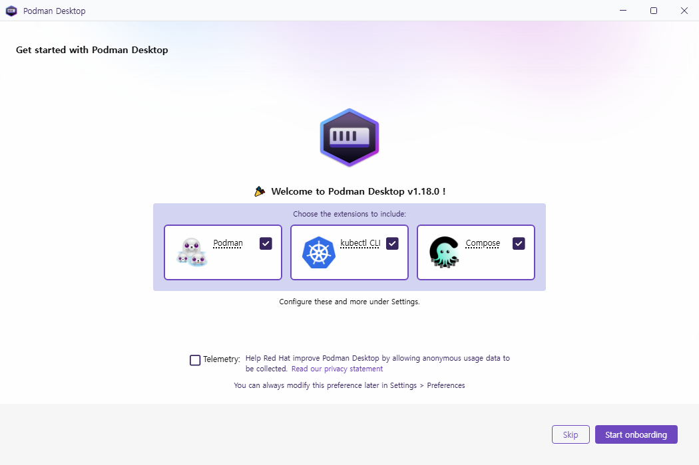
처음 설치 후 실행하면 이렇게 나온다.
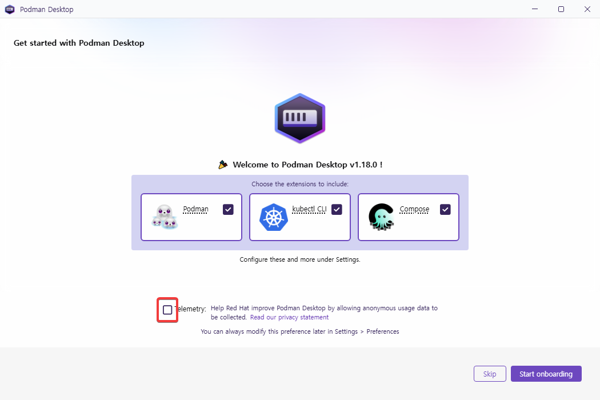
정보제공만 uncheck하고 [start onboarding] 버튼을 눌렀다.

음.. podman desktop을 실행했는데 podman이 없다니. [next]를 누르면

아.. 결국 podman 5.4.2를 설치하라고 한다. 아래 그림에서 알 수 있듯 이게 podman CLI임


이렇게 WSL2로 설치한다.

podman desktop을 실행하면 podman engine도 자동 실행한다는 옵션이 default로 설정되어 있다.

podman machine이 없다니.. 무슨 소리지. 일단 하나 만들러 가자.

뭔지 모르니 기본값으로 머신을 만들자. 꽤 시간이 걸린다.

How to use podman
-----------------------------------------------------------------
Run podman help in the terminal for a list of commands to interact with Podman.
For example, try the 'Create' button within the Containers tab of Podman Desktop and view your containers with podman:
$ podman ps
podman은 windows terminal을 설치해서 사용하길 원한다.
winget install Microsoft.WindowsTerminal
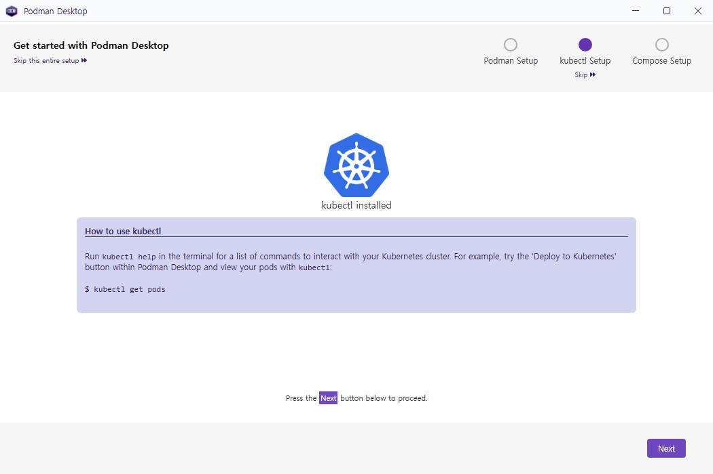
How to use kubectl
-----------------------------------------------------------------
Run kubectl help in the terminal for a list of commands to interact with your Kubernetes cluster. For example, try the 'Deploy to Kubernetes' button within Podman Desktop and view your pods with kubectl:
$ kubectl get pods

How to use Compose
-----------------------------------------------------------------
Run podman compose up (podman CLI v4.7.0+) or docker-compose in a directory with a compose.yaml. Podman Desktop will automatically detect the Compose deployment and show it in the container list.'
$ podman compose up

설정이 다 끝나면 dashboard가 나타난다.
이미지 다운로드: postgresql

왼쪽 메뉴에서 [Images] 를 선택한다.
[pull your first image] 버튼을 누르면 자동으로 이미지 하나를 다운로드 받아준다. 이미지 이름은 quay.io/podman/hello 이다. 시간이 꽤 걸린다.
이 이미지에 대한 정보는 https://quay.io/repository/podman/hello?tab=info에서 볼 수 있다.

내 경우엔 이렇게 에러가 발생했다. 500에러다 따로 해결하지 않겠음. 이거 레드햇에 로그인해야 다운로드 되는 거 같다.
왼쪽 위에 “Search images…” 이 있는데 여기서 검색해도 아무것도 검색되지 않는다. 여기는 local 에 저장되어 있는 image를 검색하는 것이다.
이미지를 다운로드 하기 위해 오른쪽 위 보라색 [Pull] 버튼을 누른다.


검색어를 넣기만 하고 엔터는 치지 말자. 자동으로 pull image 버튼까지 눌리기 때문이다.
검색결과가 나오긴 했는데 도커 desktop과 달리 메타데이터 같은 설명이 없어 뭘 다운로드 받아야 할 지 알 수가 없다.
지금은 어디가서 봐야 상세 정보를 할지 알 수가 없다.
docker와 충돌
podman 이 실행 중이면 docker가 access denied가 났다면서 실행 안된다. docker 중지시키고 podman을 quit 하면 바로 제대로 실행된다. 아마 반대도 마찬가지지 않을까.
docker 이미지를 podman에서 사용
docker 이미지를 podman에서 사용하는 방법
-
podman을 종료한다.
-
docker를 실행한다.
-
powershell에서 docker 이미지를 저장한다.
docker save -o image.tar <이미지이름:태그> -
image.tar 파일을 안전한 다른 곳(예: d:\podman)으로 이동한다.
-
파일을 이동한 곳(d:\podman)으로 cd 한다.
-
docker를 종료한다.
-
podman을 실행한다.
-
podman에서 이미지를 load한다.
PS D:\podman> podman load -i .\image.tar
podman에서 이미지 pull 할 수 없는 문제 해결
위와 같이 docker에서 이미지를 다운로드 받아 사용하려 헀던 이유는 이제보니 podman과 연결된 wsl에서 인터넷이 안되었기 때문이었음.
docker는 윈도우 자체에서 이미지를 다운로드 받는데, podman은 wsl에서 이미지를 다운로드 받는 형식인가봄.
그래서 podman과 연결된 vm에서 인터넷이 안되었기 때문에 pull image가 아예 안되었던 것. 권한 문제인줄 알고 github 등에 다 로그인 했으나 그 문제가 아니었음. 어쩐지 계속 io time out 이 나오더라.
해결방법은 여기에.
podman 컨테이너 등 삭제 안될 때
windows terminal에 탭이 여러 개 있다보니 wsl용 linux 탭을 열어서 그 안에서 podman run을 해 컨테이너를 하나 만들었다. 컨테이너 이름은 postgres 이다.
그런데 이렇게 만들어진 건 윈도우에서 실행되고 있는 podman desktop에서는 보이지 않는다.
CLI에서도 컨테이너가 확인이 안된다.
PS E:\> podman ps -a
CONTAINER ID IMAGE COMMAND CREATED STATUS PORTS NAMES
PS E:\>
이 상태에서 같은 이름(postgres)으로 컨테이너를 생성하려 하면 에러가 난다.
[user@DESKTOP-89UD3IQ e]$ podman run -d --net mynet --ip 172.31.0.7 --name postgres -p 43432:5432 -p 43022:22 -e POSTGRES_PASSWORD=My:s3Cr3t/ -e TZ=Asia/Seoul docker.io/library/postgres:latest
WARN[0000] Using cgroups-v1 which is deprecated in favor of cgroups-v2 with Podman v5 and will be removed in a future version. Set environment variable `PODMAN_IGNORE_CGROUPSV1_WARNING` to hide this warning.
Error: creating container storage: the container name "postgres" is already in use by f1823105fcf1f9a60dc80c83f009730d513ec996ca4eba2ef928066648030565. You have to remove that container to be able to reuse that name: that name is already in use, or use --replace to instruct Podman to do so.
[user@DESKTOP-89UD3IQ e]$
PS E:\>
이걸 wsl 에서 똑같이 해보면,
[user@DESKTOP-89UD3IQ ~]$ podman ps -a
WARN[0000] Using cgroups-v1 which is deprecated in favor of cgroups-v2 with Podman v5 and will be removed in a future version. Set environment variable `PODMAN_IGNORE_CGROUPSV1_WARNING` to hide this warning.
CONTAINER ID IMAGE COMMAND CREATED STATUS PORTS NAMES
f1823105fcf1 docker.io/library/postgres:latest postgres 24 minutes ago Exited (0) 292 years ago 0.0.0.0:43022->22/tcp, 0.0.0.0:43432->5432/tcp postgres
이렇게 나온다. 이제 찾았으니 지울 수 있게 되었다.
모든 컨테이너를 다 중지하고,
[user@DESKTOP-89UD3IQ ~]$ podman stop --all
WARN[0000] Using cgroups-v1 which is deprecated in favor of cgroups-v2 with Podman v5 and will be removed in a future version. Set environment variable `PODMAN_IGNORE_CGROUPSV1_WARNING` to hide this warning.
f1823105fcf1f9a60dc80c83f009730d513ec996ca4eba2ef928066648030565
[user@DESKTOP-89UD3IQ ~]$
모든 컨테이너를 다 삭제한다.
[user@DESKTOP-89UD3IQ ~]$ podman rm --all
WARN[0000] Using cgroups-v1 which is deprecated in favor of cgroups-v2 with Podman v5 and will be removed in a future version. Set environment variable `PODMAN_IGNORE_CGROUPSV1_WARNING` to hide this warning.
f1823105fcf1f9a60dc80c83f009730d513ec996ca4eba2ef928066648030565
[user@DESKTOP-89UD3IQ ~]$
다시 확인해 보면,
[user@DESKTOP-89UD3IQ ~]$ podman ps -a
WARN[0000] Using cgroups-v1 which is deprecated in favor of cgroups-v2 with Podman v5 and will be removed in a future version. Set environment variable `PODMAN_IGNORE_CGROUPSV1_WARNING` to hide this warning.
CONTAINER ID IMAGE COMMAND CREATED STATUS PORTS NAMES
[user@DESKTOP-89UD3IQ ~]$
깨끗해졌다. 이젠 wsl 들어가서 podman 명령 내리지 말아야지.
postgresql 올린 컨테이너를 다른 컨테이너에서 사용
docker.io/library/rockylinux:9
docker.io/library/postgres:latest (17 버전임)
이미지를 사용한 2개의 컨테이너가 돌고 있다.
두 컨테이너 사이에 일부러 네트워크 설정을 하거나 하지 않았다.
rockylinux 컨테이너에서 postgres 컨테이너의 ip로 5432번 포트로 접속하겠다 하면 접속이 된다.
이 postgresql 서버에 별 설정한 게 없다.
WSL
WSL vm에서 인터넷이 안 된다.


맨 아래 hyper-v 확장 가능 가상 스위치가 꺼져있다.
이걸 켜려고 하면
가 나옴.
Hyper-V 확장 가능 가상 서비스를 켜려고 하는건데.
일단 여기까지만 보고 건드리지는 말고 다른 걸 해보자.
문제 해결
다음 방법으로 해결함. 네트워크를 재설정하는 거임.
관리자 권한 명령 프롬프트에서,
netsh interface ip reset
netsh winsock reset
재부팅하고 나니 인터넷 연결이 수동으로 바뀌어서 DHCP로 돌려줘야 했음
그리고 멀티 모니터의 위치 등 설정이 바뀌어 있었음.
그런데 WSL VM에서 인터넷 잘 되는데 여전히 인터넷에 연결되어 있지 않다고 나옴.
linux
fedora
패키지 관리
fedora는 debian 계열과 달리 apt-get을 쓰지 않고 dnf를 사용한다.
| APT 명령어 | DNF 명령어 | 설명 |
|---|---|---|
apt-get install [패키지명] | dnf install [패키지명] | 패키지 설치 |
apt-get update | dnf check-update | 패키지 목록 업데이트 (DNF는 자동으로 캐시를 갱신하므로 자주 필요하지 않음) |
apt-get upgrade | dnf upgrade | 설치된 패키지 업그레이드 |
apt-get remove [패키지명] | dnf remove [패키지명] | 패키지 제거 |
apt-get autoremove | dnf autoremove | 더 이상 필요하지 않은 의존성 패키지 제거 |
apt-cache search [키워드] | dnf search [키워드] | 패키지 검색 |
예시:
# 패키지 설치
$ dnf install firefox
# 패키지 제거
$ dnf remove firefox
# 패키지 목록 업데이트
$ dnf check-update
# 시스템 업그레이드
$ dnf upgrade
rockylinux
rockylinux
podman에서 설치
이미지는 rockylinux:9로 검색해서 설치
PS C:\Users\test> podman search rockylinux:9
NAME DESCRIPTION
docker.io/rockylinux/rockylinux
docker.io/library/rockylinux The official build of Rocky Linux.
docker.io/rockylinux/rocky-toolbox Toolbox image for Rocky Linux - https://gith...
pull 이미지
PS C:\Users\test> podman pull rockylinux:9
Trying to pull docker.io/library/rockylinux:9...
Getting image source signatures
Copying blob sha256:446f83f14b236772583d069e6f46a75e7e5456add656d1415a452618189fb825
Copying config sha256:9cc24f05f309508aa852967ab1e3b582b302afc92605c24ce27715c683acd805
Writing manifest to image destination
9cc24f05f309508aa852967ab1e3b582b302afc92605c24ce27715c683acd805
포트설정
- 23000:3000
- 20080:80
- 20443:443
- 25432:5432
- 20022:22
node.js 설치
podman에 이미지 설치해 사용한 후의 기록
일단 업데이트한다.
dnf update -y
제공되는 node.js 목록을 본다
[root@d8d8565ea203 /]# dnf module list nodejs
Last metadata expiration check: 0:01:55 ago on Sun Jun 8 11:24:17 2025.
AlmaLinux 9 - AppStream
Name Stream Profiles Summary
nodejs 18 common [d], development, minimal, s2i Javascript runtime
nodejs 20 common [d], development, minimal, s2i Javascript runtime
nodejs 22 common [d], development, minimal, s2i Javascript runtime
Hint: [d]efault, [e]nabled, [x]disabled, [i]nstalled
[root@d8d8565ea203 /]#
22 버전을 사용하겠다고 표시한다.
[root@d8d8565ea203 /]# dnf module -y enable nodejs:22
Last metadata expiration check: 0:03:01 ago on Sun Jun 8 11:24:17 2025.
Dependencies resolved.
=============================================================================================================================================================================
Package Architecture Version Repository Size
=============================================================================================================================================================================
Enabling module streams:
nodejs 22
Transaction Summary
=============================================================================================================================================================================
Complete!
[root@d8d8565ea203 /]#
22를 설치하겠다고 설정되었는지 확인한다.
[root@d8d8565ea203 /]# dnf module list nodejs
Last metadata expiration check: 0:03:58 ago on Sun Jun 8 11:24:17 2025.
AlmaLinux 9 - AppStream
Name Stream Profiles Summary
nodejs 18 common [d], development, minimal, s2i Javascript runtime
nodejs 20 common [d], development, minimal, s2i Javascript runtime
nodejs 22 [e] common [d], development, minimal, s2i Javascript runtime
Hint: [d]efault, [e]nabled, [x]disabled, [i]nstalled
[root@d8d8565ea203 /]#
22 버전 옆에 [e]라고 표시된 것을 볼 수 있다.
이제 실제로 설치하자.
[root@d8d8565ea203 /]# dnf -y install nodejs
Last metadata expiration check: 0:04:58 ago on Sun Jun 8 11:24:17 2025.
Dependencies resolved.
=============================================================================================================================================================================
Package Architecture Version Repository Size
=============================================================================================================================================================================
Installing:
nodejs x86_64 1:22.16.0-1.module_el9.6.0+170+f035de78 appstream 1.9 M
Installing dependencies:
libbrotli x86_64 1.0.9-7.el9_5 baseos 312 k
nodejs-libs x86_64 1:22.16.0-1.module_el9.6.0+170+f035de78 appstream 21 M
Installing weak dependencies:
nodejs-docs noarch 1:22.16.0-1.module_el9.6.0+170+f035de78 appstream 8.8 M
nodejs-full-i18n x86_64 1:22.16.0-1.module_el9.6.0+170+f035de78 appstream 8.6 M
Transaction Summary
=============================================================================================================================================================================
Install 5 Packages
Total download size: 40 M
Installed size: 216 M
Downloading Packages:
(1/5): nodejs-22.16.0-1.module_el9.6.0+170+f035de78.x86_64.rpm 5.7 MB/s | 1.9 MB 00:00
(2/5): nodejs-full-i18n-22.16.0-1.module_el9.6.0+170+f035de78.x86_64.rpm 17 MB/s | 8.6 MB 00:00
(3/5): libbrotli-1.0.9-7.el9_5.x86_64.rpm 6.1 MB/s | 312 kB 00:00
(4/5): nodejs-docs-22.16.0-1.module_el9.6.0+170+f035de78.noarch.rpm 9.8 MB/s | 8.8 MB 00:00
(5/5): nodejs-libs-22.16.0-1.module_el9.6.0+170+f035de78.x86_64.rpm 15 MB/s | 21 MB 00:01
-----------------------------------------------------------------------------------------------------------------------------------------------------------------------------
Total 13 MB/s | 40 MB 00:03
Running transaction check
Transaction check succeeded.
Running transaction test
Transaction test succeeded.
Running transaction
Preparing : 1/1
Installing : libbrotli-1.0.9-7.el9_5.x86_64 1/5
Installing : nodejs-libs-1:22.16.0-1.module_el9.6.0+170+f035de78.x86_64 2/5
Installing : nodejs-docs-1:22.16.0-1.module_el9.6.0+170+f035de78.noarch 3/5
Installing : nodejs-full-i18n-1:22.16.0-1.module_el9.6.0+170+f035de78.x86_64 4/5
Installing : nodejs-1:22.16.0-1.module_el9.6.0+170+f035de78.x86_64 5/5
Running scriptlet: nodejs-1:22.16.0-1.module_el9.6.0+170+f035de78.x86_64 5/5
Verifying : nodejs-1:22.16.0-1.module_el9.6.0+170+f035de78.x86_64 1/5
Verifying : nodejs-docs-1:22.16.0-1.module_el9.6.0+170+f035de78.noarch 2/5
Verifying : nodejs-full-i18n-1:22.16.0-1.module_el9.6.0+170+f035de78.x86_64 3/5
Verifying : nodejs-libs-1:22.16.0-1.module_el9.6.0+170+f035de78.x86_64 4/5
Verifying : libbrotli-1.0.9-7.el9_5.x86_64 5/5
Installed:
libbrotli-1.0.9-7.el9_5.x86_64 nodejs-1:22.16.0-1.module_el9.6.0+170+f035de78.x86_64
nodejs-docs-1:22.16.0-1.module_el9.6.0+170+f035de78.noarch nodejs-full-i18n-1:22.16.0-1.module_el9.6.0+170+f035de78.x86_64
nodejs-libs-1:22.16.0-1.module_el9.6.0+170+f035de78.x86_64
Complete!
[root@d8d8565ea203 /]#
설치한 다음에 버전 확인
[root@d8d8565ea203 /]# node --version
v22.16.0
[root@d8d8565ea203 /]# npm -v
bash: npm: command not found
node.js는 잘 설치되었는데 npm이 설치가 안되어있다. ?
npm도 설치하자.
[root@d8d8565ea203 /]# yum install -y npm
Last metadata expiration check: 0:06:55 ago on Sun Jun 8 11:24:17 2025.
Dependencies resolved.
=============================================================================================================================================================================
Package Architecture Version Repository Size
=============================================================================================================================================================================
Installing:
npm x86_64 1:10.9.2-1.22.16.0.1.module_el9.6.0+170+f035de78 appstream 2.0 M
Transaction Summary
=============================================================================================================================================================================
Install 1 Package
Total download size: 2.0 M
Installed size: 9.3 M
Downloading Packages:
npm-10.9.2-1.22.16.0.1.module_el9.6.0+170+f035de78.x86_64.rpm 13 MB/s | 2.0 MB 00:00
-----------------------------------------------------------------------------------------------------------------------------------------------------------------------------
Total 2.3 MB/s | 2.0 MB 00:00
Running transaction check
Transaction check succeeded.
Running transaction test
Transaction test succeeded.
Running transaction
Preparing : 1/1
Installing : npm-1:10.9.2-1.22.16.0.1.module_el9.6.0+170+f035de78.x86_64 1/1
Running scriptlet: npm-1:10.9.2-1.22.16.0.1.module_el9.6.0+170+f035de78.x86_64 1/1
Verifying : npm-1:10.9.2-1.22.16.0.1.module_el9.6.0+170+f035de78.x86_64 1/1
Installed:
npm-1:10.9.2-1.22.16.0.1.module_el9.6.0+170+f035de78.x86_64
Complete!
[root@d8d8565ea203 /]#
npm 버전도 확인
[root@d8d8565ea203 /]# npm -v
10.9.2
zip unzip 설치
[root@8a9e08205a4d openclass]# dnf -y install zip unzip
Last metadata expiration check: 0:09:54 ago on Sun Jun 8 11:39:33 2025.
Dependencies resolved.
=============================================================================================================================================================================
Package Architecture Version Repository Size
=============================================================================================================================================================================
Installing:
unzip x86_64 6.0-58.el9_5 baseos 180 k
zip x86_64 3.0-35.el9 baseos 263 k
Transaction Summary
=============================================================================================================================================================================
Install 2 Packages
Total download size: 443 k
Installed size: 1.1 M
Downloading Packages:
(1/2): zip-3.0-35.el9.x86_64.rpm 2.5 MB/s | 263 kB 00:00
(2/2): unzip-6.0-58.el9_5.x86_64.rpm 1.7 MB/s | 180 kB 00:00
-----------------------------------------------------------------------------------------------------------------------------------------------------------------------------
Total 519 kB/s | 443 kB 00:00
Running transaction check
Transaction check succeeded.
Running transaction test
Transaction test succeeded.
Running transaction
Preparing : 1/1
Installing : unzip-6.0-58.el9_5.x86_64 1/2
Installing : zip-3.0-35.el9.x86_64 2/2
Running scriptlet: zip-3.0-35.el9.x86_64 2/2
Verifying : unzip-6.0-58.el9_5.x86_64 1/2
Verifying : zip-3.0-35.el9.x86_64 2/2
Installed:
unzip-6.0-58.el9_5.x86_64 zip-3.0-35.el9.x86_64
Complete!
[root@8a9e08205a4d openclass]#
윈도우에서 파일 전송
podman cp 사용
먼저 linux에 디렉토리를 생성한다.
[root@8a9e08205a4d ~]# mkdir dev
[root@8a9e08205a4d ~]# cd dev
[root@8a9e08205a4d dev]# mkdir openclass
[root@8a9e08205a4d dev]# cd openclass
[root@8a9e08205a4d openclass]# pwd
/root/dev/openclass
윈도우에서 podman 컨테이너로 파일 보내기
podman cp ./openclass-main.zip angry_cannon:/root/dev/openclass/
압축풀기
[root@8a9e08205a4d openclass]# unzip openclass-main.zip
podman 컨테이너의 폴더를 윈도우로 보내기
podman cp angry_cannon:/root/dev/openclass/ ./
postgresql 17 설치
출처: https://www.postgresql.org/download/linux/redhat/
# Install the repository RPM:
dnf install -y https://download.postgresql.org/pub/repos/yum/reporpms/EL-9-x86_64/pgdg-redhat-repo-latest.noarch.rpm
# Disable the built-in PostgreSQL module:
dnf -qy module disable postgresql
# Install PostgreSQL:
dnf install -y postgresql17-server
# Optionally initialize the database and enable automatic start:
/usr/pgsql-17/bin/postgresql-17-setup initdb
systemctl enable postgresql-17
systemctl start postgresql-17
여기서 /usr/pgsql-17/bin/postgresql-17-setup initdb과 systemctl start postgresql-17는 실패한다. 자기는 systemd 로 부팅한게 아니라나. 흠.
podman 컨테이너에서 ssh 사용
사용 이미지: docker.io/library/rockylinux:9
이 이미지는 wsl에서 사용하는 특성상 systemd가 안된다. 그래서 약간 특별한 방식을 사용한다.
설치
[root@ab5b7b7ab2df /]# dnf install -y openssh-server
Last metadata expiration check: 0:18:57 ago on Mon Jun 9 14:26:13 2025.
Dependencies resolved.
=============================================================================================================================================================================
Package Architecture Version Repository Size
=============================================================================================================================================================================
Installing:
openssh-server x86_64 8.7p1-45.el9 baseos 457 k
Transaction Summary
=============================================================================================================================================================================
Install 1 Package
Total download size: 457 k
Installed size: 1.0 M
Downloading Packages:
openssh-server-8.7p1-45.el9.x86_64.rpm 2.9 MB/s | 457 kB 00:00
-----------------------------------------------------------------------------------------------------------------------------------------------------------------------------
Total 647 kB/s | 457 kB 00:00
Running transaction check
Transaction check succeeded.
Running transaction test
Transaction test succeeded.
Running transaction
Preparing : 1/1
Running scriptlet: openssh-server-8.7p1-45.el9.x86_64 1/1
Installing : openssh-server-8.7p1-45.el9.x86_64 1/1
Running scriptlet: openssh-server-8.7p1-45.el9.x86_64 1/1
Created symlink /etc/systemd/system/multi-user.target.wants/sshd.service → /usr/lib/systemd/system/sshd.service.
Verifying : openssh-server-8.7p1-45.el9.x86_64 1/1
Installed:
openssh-server-8.7p1-45.el9.x86_64
Complete!
상태확인
[root@ab5b7b7ab2df /]# systemctl status sshd
System has not been booted with systemd as init system (PID 1). Can't operate.
Failed to connect to bus: Host is down
실패한다. wsl의 systemd 관련 문제다.
어쨋든 실행
먼저 키를 만들어주자.
[root@ab5b7b7ab2df ~]# ssh-keygen -A
ssh-keygen: generating new host keys: RSA DSA ECDSA ED25519
그리고 실행.
[root@ab5b7b7ab2df ~]# /usr/sbin/sshd
이제 22번 포트로 연결한 포트로 putty를 이용해 접속하면 된다.
개발
언어
rust
rust 구조체 출력
구조체 출력하려면 구조체 정의한 바로 위에
#![allow(unused)] fn main() { #[derive(Debug)] }
를 적어야 한다. 이건 모든 구조체 위에 적어야 한다.
#![allow(unused)] fn main() { println!("user = {:?}", user); user = User { active: false, username: "username", cdata: 1 } }
#![allow(unused)] fn main() { println!("user = {:#?}", user); user = User { active: false, username: "username", cdata: 1, } }
rust 1.79 + iced 0.12.1 한글 폰트를 기본으로 설정하기
use iced::{Settings, window}; fn main() -> iced::Result { let settings = Settings { window: window::Settings { size: iced::Size::new(500.0, 500.0), resizable: true, decorations: true, ..Default::default() }, default_font: Font::with_name("맑은 고딕"), ..Default::default() }; Editor::run(settings) }
붙여넣기가 아닌 일일이 타이핑으로 적어서 틀린 데가 있을 수 있음.
rust 코드에 document 달기
#![allow(unused)] fn main() { /** * 넓이를 구한다. * # Parameters * * `param1`: 첫번째 수 * ```rust * let a = area(10, 10); * ``` */ fn area(dimensions: (u32, u32)) -> u32 { dimensions.0 * dimensions.1 } }
rust 는 자체적으로 document를 지원한다. markdown 형식을 지원한다. 위와 같이 하면,

#![allow(unused)] fn main() { /** * 수학기능 trait */ pub trait Math { /// 더하기 함수 /// /// # Parameters /// * `d1`: 첫번째 수 /// * `d2`: 두번째 수 /// /// # Return /// 두 수를 더한 값을 리턴한다. fn add(d1: i32, d2: i32) -> i32; } }

와 같이 나온다.
PS E:\test\rust\test02> cargo doc --open
Documenting test02 v1.0.0 (E:\test\rust\test02)
Finished `dev` profile [unoptimized + debuginfo] target(s) in 0.91s
Opening E:\test\rust\test02\target\doc\test02\index.html
위와 같이 cargo doc --open으로 문서를 만들 수 있다.
visual studio code에서 rust traits 한 번에 만들기 단축키: ctrl + .

brace 안에서 ctrl + . 을 하면 이렇게 나오는데 “implement missing members” 를 선택하면,

이렇게 나온다. 와..
rust 1.79 + iced 0.12.1 한글 나오게 하기

코드에
#![allow(unused)] fn main() { let title = text("한글 todos") }
라고 하면 맨 위에 처럼 한글이 제대로 나오지 않는다.
그 아래 What needs to be done? 라고 된 부분에 한글이 아무리 해도 입력조차 안되는데, 그러니까 한영키를 눌러도 그냥 영문으로만 입력이 되는데 다른 데서 한글을 쓰고 복사해서 붙여 넣으면 데이터가 추가되어 저렇게 한글로 제대로 보여진다. 모냐 이거. 하.
일단 한글이 나오긴 한다. 2024. 6. 29. 12:45

impl Sandbox for GroceryList 안에서
#![allow(unused)] fn main() { fn view(&self) -> Element<Self::Message> { text("한글이 나오면 좋겠다.\nThis is where you will show the view of your app") .size(20) .font(Font::MONOSPACE) .into() }
이제 custom font malgun.ttf를 쓰는 방법을 알아보자.
맑은고딕 잘된다. 맑은고딕은 windows 기본 글꼴.
#![allow(unused)] fn main() { fn view(&self) -> Element<Self::Message> { text("한글이 나오면 좋겠다.\nThis is where you will show the view of your app") .size(20) //.font(Font::MONOSPACE) //.font(Font::with_name("../fonts/malgun.ttf")) // 이건 안 됨. .font(Font::with_name("맑은 고딕")) //.font(Font::with_name("나눔고딕")) //.font(Font::with_name("휴먼편지체")) //.font(Font::with_name("Sandoll 미생")) .into() } }
나눔고딕. 글꼴은 미리 설치되어 있어야 한다.

#![allow(unused)] fn main() { fn view(&self) -> Element<Self::Message> { text("한글이 나오면 좋겠다.\nThis is where you will show the view of your app") .size(20) //.font(Font::MONOSPACE) //.font(Font::with_name("../fonts/malgun.ttf")) // 이건 안 됨. //.font(Font::with_name("맑은 고딕")) .font(Font::with_name("나눔고딕")) //.font(Font::with_name("휴먼편지체")) //.font(Font::with_name("Sandoll 미생")) .into() } }
나눔고딕도 잘 된다. 맑은 고딕이랑 비슷한데 맑은 고딕이 좀 더 세로로 길다.
산돌미생체

휴먼편지체
main.rs 전문 use iced::{Element, Sandbox, Settings}; use iced::{Font}; use iced::widget::text; struct GroceryList {} #[derive(Debug, Clone)] enum Message {} impl Sandbox for GroceryList { type Message = Message; /* Initialize your app */ fn new() -> GroceryList { Self {} } /** * The title of the window. It will show up on the top of your application window. */ fn title(&self) -> String { String::from("Grocery List App") } fn update(&mut self, message: Self::Message) { // Update the state of your app } fn view(&self) -> Element<Self::Message> { text("한글이 나오면 좋겠다.\nThis is where you will show the view of your app") .size(20) //.font(Font::MONOSPACE) //.font(Font::with_name("../fonts/malgun.ttf")) // 이건 안 됨. //.font(Font::with_name("맑은 고딕")) //.font(Font::with_name("나눔고딕")) .font(Font::with_name("휴먼편지체")) //.font(Font::with_name("Sandoll 미생")) .into() } } fn main() -> iced::Result { GroceryList::run(Settings::default()) https://www.youtube.com/watch?v=epsLvcdXMr8&list=PLZWdwSd12Q74o3ne0nUztVeUr9JDJIbSL&index=6&pp=iAQB}
아까 안되었던 todos example도 이 방법으로 하니까 잘 됨.

#![allow(unused)] fn main() { fn view(&self) -> Element<Message> { match self { Todos::Loading => loading_message(), Todos::Loaded(State { input_value, filter, tasks, .. }) => { let title = text("한글 todos") .width(Length::Fill) .size(100) .font(Font::with_name("맑은 고딕")) .color([0.5, 0.5, 0.5]) .horizontal_alignment(alignment::Horizontal::Center); }
todos example에서도
#![allow(unused)] fn main() { let input = text_input("What needs to be done?", input_value) .id(INPUT_ID.clone()) .on_input(Message::InputChanged) .on_submit(Message::CreateTask) .padding(15) .font(Font::with_name("맑은 고딕")) .size(30); }
이렇게 해도 저 “What needs to be done? 이라고 쓰인 입력창에 한글을 입력할 수가 없다. 한영 키를 눌러도 아무런 변화가 없다. 이건 자체적인 한글 입력 기능이 없는 듯하다.
이제 ttf 폰트를 읽어와서 쓰는 방법도 찾아봐야겠네.
rust에서 ffmpeg 개발하기
ffmpeg 개발할 때 몇몇 환경설정을 해야 한다.
- ffmpeg 설치.
- ffmpeg 개발환경 라이브러리 설치
- LLVM 설치
ffmpeg 설치
rust의 ffmpeg-next crate는 ffmpeg를 이용한다. ffmpeg는 기본적으로 설치 프로그램을 제공하지 않는다.
https://ffmpeg.org/download.html 에서

여기에서 둘 중 아무데나 들어가자. ffmpeg대신 빌드한 릴리즈를 공유하는 곳이다. 여기서 빌드된 바이너리를 받으면 된다.
압축을 풀고, 윈도우 환경설정의 path에 ffmpeg.exe 파일이 있는 폴더를 걸어준다.
ffmpeg 개발환경 라이브러리 설치
ffmpeg-next crater는 ffmpeg 개발 라이브러리를 이용한다. 그래서 개발 라이브러리도 설치해야 한다.
vcpkg를 이용했다.
vcpkg install ffmpeg
환경설정
시스템 환경 변수에
- path에 vcpkg의 packages\ffmpeg_x64-windows\bin 추가
LLVM 설치
cargo build하면 clang 설정이 안되었다고 에러가 난다. 이 문제는 LLVM을 설치해서 해결한다.
vcpkg install llvm
ffmpeg는 LLVM을 이용해 빌드되기 때문이라 한다.
build 하는데 시간이 굉장히 오래 걸린다. 그래서인지 LLVM은 pre-compiled 를 제공한다.지금 거의 3시간동안 빌드하고 있는 거 같다.
환경설정
시스템 환경 변수에
- LIBCLANG_PATH: vcpkg의 packages\llvm_x64-windows\tools\llvm
- path에 vcpkg의 packages\llvm_x64-windows\tools\llvm 추가
winui3
auto 를 반환하는 함수를 정의하기 전에 사용할 수 없다는 에러메시지가 나올 때
해당 클래스를 include 하지 않으면 auto 어쩌고 하는 에러가 나온다.
하. 그냥 모르는 클래스라고 해.
auto의 폐해.
winui 3 패키징하지 않고 탐색기에서 exe 파일 실행하기
이거 보고 함.
https://learn.microsoft.com/en-us/windows/apps/winui/winui3/create-your-first-winui3-app
- 프로젝트를 만든다.
이걸로 프로젝트 만들었음.
-
vcxproj 파일을 수정한다.
<PropertyGroup Label="Globals">안에<WindowsPackageType>None</WindowsPackageType>을 추가한다. -
vcxproj 파일을 수정한다.
<PropertyGroup Label="Globals">안에<AppxPackage>true</AppxPackage>를<AppxPackage>false</AppxPackage>로 수정한다.
위 2, 3 번을 하고 나면 아래와 같다.
<PropertyGroup Label="Globals">
<CppWinRTOptimized>true</CppWinRTOptimized>
<CppWinRTRootNamespaceAutoMerge>true</CppWinRTRootNamespaceAutoMerge>
<MinimalCoreWin>true</MinimalCoreWin>
<ProjectGuid>{1c4a0c28-b802-46ee-83ee-a35facb2c5d7}</ProjectGuid>
<ProjectName>winuitest</ProjectName>
<RootNamespace>winuitest</RootNamespace>
<!--
$(TargetName) should be same as $(RootNamespace) so that the produced binaries (.exe/.pri/etc.)
have a name that matches the .winmd
-->
<TargetName>$(RootNamespace)</TargetName>
<DefaultLanguage>ko-KR</DefaultLanguage>
<MinimumVisualStudioVersion>16.0</MinimumVisualStudioVersion>
<AppContainerApplication>false</AppContainerApplication>
<AppxPackage>false</AppxPackage>
<ApplicationType>Windows Store</ApplicationType>
<ApplicationTypeRevision>10.0</ApplicationTypeRevision>
<WindowsTargetPlatformVersion>10.0</WindowsTargetPlatformVersion>
<WindowsTargetPlatformMinVersion>10.0.17763.0</WindowsTargetPlatformMinVersion>
<UseWinUI>true</UseWinUI>
<EnableMsixTooling>true</EnableMsixTooling>
<WindowsPackageType>None</WindowsPackageType>
</PropertyGroup>
- visual studio로 돌아오면

이런 메시지가 나오는데 당연히 [모두 다시 로드]를 클릭한다.
- build 하면
E:\test\winuitest\x64\Debug\winuitest 안에 exe 파일이 생성된다.
실행하면

이런 메시지가 나온다. Windows App Runtime을 설치하라는 것.
[예]를 누르면
https://learn.microsoft.com/ko-kr/windows/apps/windows-app-sdk/downloads
창이 열린다.
여기서

저 다운로드 버튼을 눌러 실행하면 msix 패키징없이 탐색기에서 exe 파일을 더블클릭해 실행할 수 있게 된다.
탐색기에서 더블클릭해 실행된 winui 3 앱.
개발자 pc 가 아닌 다른 곳에서는 실행이 안될 수도 있는데 그때는 vcredist.exe 를 다운로드받아 실행하면 된다.
python
uv
- 공식 홈페이지: https://github.com/astral-sh/uv
- 잘 정리한 글: https://www.0x00.kr/development/python/python-uv-simple-usage-and-example
특징
- rust로 만들어 굉장히 빠름
- 패키지 관리자.
- 프로젝트 관리자
- 가상환경 관리자
가상환경
uv는 기본적으로 가상환경을 만들어준다. 프로젝트 생성(init)한다고 자동으로 가상환경을 만들어 주지는 않는데, uv add <package 이름>을 하면 자동으로 가상환경을 만들어 주고(.venv 폴더가 생긴다) 그 가상환경에 최신 버전의 파이썬을 설치해 준다. 굳이 uv venv .venv 하지 않아도 됨.
결국 프로젝트 하나마다 가상환경 하나씩 만드는 것. visual studio에서 사용하는 방법과 같다. 나는 이게 훨씬 편한 거 같다. 하드디스크는 많이 차지하지.
수동으로 가상환경 설정하는 방법있으나 굳이 여기 적지 않겠음.
프로젝트 생성
uv init <프로젝트명>
프로그램 실행
uv run <python 파일명>
패키지 관리
패키지 추가
uv add <패키지명>
실행형 패키지 실행
uv run <패키지명>
패키지 목록
uv pip list
uv 가상환경에 파이썬 특정 버전 설치
최신버전의 파이썬을 사용할 거면 자동으로 되니 굳이 할 필요없다.
uv python install <파이썬 버전>
uv python install 3.13.3
exe 파일로 만들기
PyInstaller로 실행 파일 만들 수 있다.
[pip]
pip install pyinstaller
[uv]
uv add pyinstaller
실행파일 생성
[pip로 설치한 경우]
pyinstaller --onefile <python 파일명>
[uv로 설치한 경우]
uv run pyinstaller --onefile <python 파일명>
--onefile은 하나의 실행파일로 만들라는 옵션.- 결과물은
dist\디렉토리에 생성됨
게임
O3DE
Open 3D Engine
O3DE 설치하기
다운로드
url: https://o3de.org/download/
최소 요구사항
O3DE requires Windows 10 64-bit (versions 1809, 10.0.17763 or later)
- 2.5 GHz Intel or AMD processor with 4 or more physical cores
- 8 GB RAM
- DirectX 12, Vulkan-compatible, or Metal-compatible video card with 2 GB VRAM minimum
- NVIDIA GeForce GTX 1060 with driver version 471.11 or later
- AMD Radeon Pro 560 or higher with latest drivers
- Intel HD 630 or higher with latest drivers
- Shader Model 6.2 (or Shader Model 6.3 to use raytracing features)
- 4 GB VRAM recommended
- 40 to 100 GB of free disk space
- 1366 x 768 px screen resolution
- (Recommended) Microsoft Visual Studio 2019 or 2022.
- Visual Studio C++ Redistributable
- CMake 3.22.0 or later
나의 설치 경험
https://github.com/o3de/o3de/issues/18376

나도 정확히 위 URL의 글과 같은 현상이 나타났다.
내가 했던 일
-
Offline 버전이 아닌 웹에서 다운로드 받는 인스톨러를 다운로드 받아 설치

저 에러 나타남.
-
위 이미지의 아래에 있는 offline 버전 다운로드받아 설치 여전히 저 에러 나타남.
-
보니까 맨 마지막의 CMake가 설치되어 있기는 한데 버전이 3.22보다 한참 낮음(정확히는 기억 안남)
-
만약 CMake가 없다면 이렇게 보일 것.

-
문제 해결
-
CMake 최신 버전으로 offline 버전 재설치

여전히 저 에러 나타남
-
관리자 권한으로 offline 버전 재설치.
문제 해결

다른 컴퓨터에서
GONG 컴퓨터에서는 설치할 때 offline 버전 설치했지만 관리자 권한으로 설치하지 않았는데 한방에 잘 설치됨. 헐.
godot4
Godot4 배경을 투명하게 하고 뒷면의 앱으로 마우스 통과시키기
개요
- 버전: Godot 4.3
- 하고 싶은 거
- 게임의 배경을 투명하게 한다.
- 항상 맨 위에 올라온다.
- 일정 영역 외에는 마우스가 그 뒷면에 있는(배경이 투명하니 밑에 보이는) 앱을 마우스로 처리할 수 있도록 한다.
- 예
- https://www.youtube.com/watch?v=QGwaZ89vrzo

이렇게 어떤 프로그램을 띄어도 맨 위에 올라오고 배경이 투명하고, 바탕화면의 아이콘을 누르면 그 처리가 되고, 고양이를 클릭하면 고양이가 선택됨.
- https://www.youtube.com/watch?v=QGwaZ89vrzo
튜토리얼
프로젝트 생성

렌더러를 “호환성“으로 한 거는 그냥 자원을 조금 쓰게 하기 위한 것. 꼭 호환성으로 해야 하는 건 아님.
2D 노드 생성

이 노드에 GD script를 붙인다. (node_2d.gd)
이 상태에서 scene을 저장하고 실행하면(그러니까 아무 것도 하지 않고 실행하는 경우) 다음 그림과 같이 나온다.

배경 투명하게
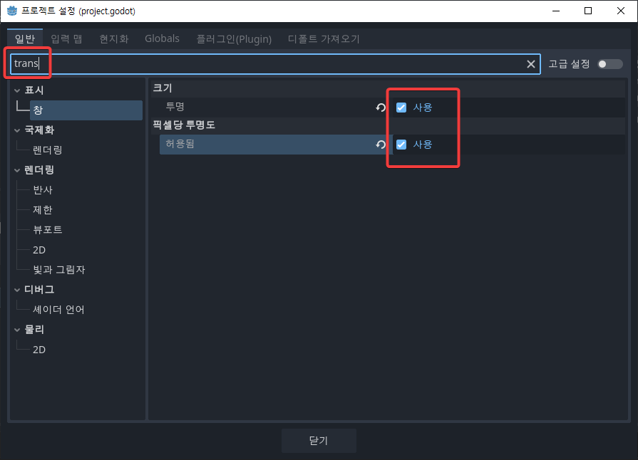
프로젝트 설정창을 띄운 다음 검색어로 trans를 입력하고,
표시 > 창 에서 위와 같이 크기/투명, 픽셀당 투명도/허용됨 을 모두 체크한다.
이 상태로 실행하면,

이렇게 타이틀바가 나타나고 배경이 투명하게 된다.
하지만 이 상태에서는 뒷 배경을, 예를 들면 MuseScore Studio 4를 클릭할 수 없다.
우리 게임의 뒷 배경을 클릭하게 하는 방법은
Window.mouse_passthrough_polygon 를 사용하는 거다.
저 속성에는 하나의 폴리곤을 넘겨줄 수 있다. 그럼 이 게임에서는 그 폴리곤의 영역만 마우스로 클릭할 수 있고, 그 외의 영역에서 발생한 마우스 이벤트는 그 뒤에 있는 앱으로 넘어간다. 그리고 그 폴리곤의 영역만 화면에 표시된다.
테스트를 위해 아이콘을 화면에 추가한다.

이렇게 하고 실행하면

이렇게 내가 추가한 건 제대로 보이고 그 외는 모두 투명하게 보이는 걸 알 수 있다. 훌륭하군. 이제 폴리곤을 넣어보자.
node_2d.gd 파일
func _ready() -> void:
# 다각형
var polygon = [
Vector2(100, 100),
Vector2(200, 100),
Vector2(200, 200),
Vector2(100, 200)
]
var window = get_viewport().get_window()
window.mouse_passthrough_polygon = polygon

상황은 다음과 같다. 정확한 상황을 파악하기 위해 다음과 같이 한다.
좀전에 프로젝트 설정했던 것들을 다 원래대로 돌려 준다.

그리고 스크립트 파일을 다음과 같이 맨 밑에 한 줄 추가한다.
node_2d.gd 파일
func _ready() -> void:
# 다각형
var polygon = [
Vector2(100, 100),
Vector2(200, 100),
Vector2(200, 200),
Vector2(100, 200)
]
var window = get_viewport().get_window()
window.mouse_passthrough_polygon = polygon
window.transparent_bg = true
그럼 아래와 같이 내가 만들어준 (100, 100) - (200, 200)의 정사각형 폴리곤이 검은 색으로 보이고, 딱 그 부분만 아이콘이 제대로 보이는 걸 알 수 있다.
(100, 100)인데 윗 부분이 더 길어 보이는데 싶은데, 그건 게임의 title bar의 높이 만큼 더 길어보이는 거다.

정리하면, 위 이미지만큼이 원래 게임 앱의 크기인데, Window.mouse_passthrough_polygon에 넣어준 (100, 100) 크기의 폴리곤 만큼만 화면에 나타나고 게임 내에서 처리할 수 있는 클릭이 된다. 그 외의 영역은 뒷 부분이 보이고 뒷 부분의 앱에서 마우스로 클릭도 할 수 있다. 그래서 저 아이콘들을 눌러 실행할 수 있다.
만약 아래 글을 계속 볼 거면 현재 상태로 그냥 놔둔다.
그렇지 않고 바로 개발을 시작할 거면 다시 프로젝트 세팅 2개 설정하고 스크립트에 추가했던 맨 밑 한 줄을 지우자. 이 상태로 프로그램을 만들면 된다.
여러 개의 폴리곤을 사용해야 하는 경우
Window.mouse_passthrough_polygon 에는 한 개의 폴리곤만 넣을 수 있다.
만약 2개의 폴리곤을 사용하고 싶으면 이걸 하나로 합쳐야 한다.
예를 들어,
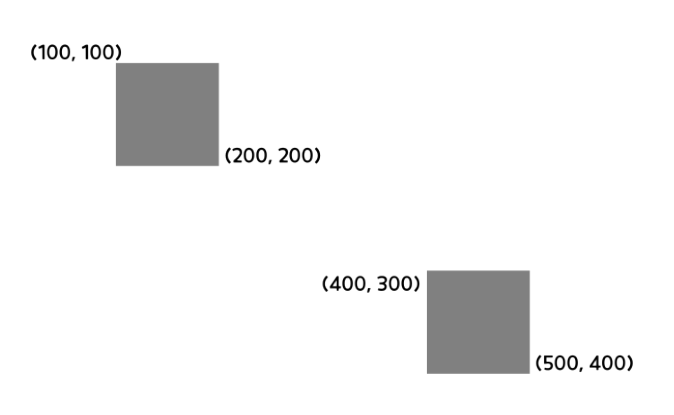
이렇게 2개의 폴리곤을 설정해 줘야 하는 경우, 생각없이 만들면,

이런 식으로 된다. 그래서 이걸 제대로 만드는 방법을 설명하려 한다. 이 문제를 해결하려면

이렇게 생긴 폴리곤으로 만들어야 위와 같이 이상한 모양이 나타나는 걸 막을 수 있다.
방법은,
var polygon1 = [
Vector2(200, 200),
Vector2(100, 200),
Vector2(100, 100),
Vector2(200, 100),
Vector2(200, 200)
]
와 같이 4각형이면 점을 5개해서, 연결되는 점인 (200, 200)이 시작점이자 끝점이 되도록 해야 한다.
var polygon2 = [
Vector2(400, 300),
Vector2(500, 300),
Vector2(500, 400),
Vector2(400, 400),
Vector2(400, 300)
]
과 같이 두 번째 폴리곤도 연결되어야 하는 점인 (400, 300)이 시작점이자 끝점이 되도록 만든다.
연결되는 점 선정 기준: 두 폴리곤 사이를 가장 가깝게 연결하는 두 점
그리고 연결하는 선을 정의한다.
var polygon_br = [
Vector2(200, 200),
Vector2(400, 300)
]
이제 새로운 폴리곤을 만들고 첫 번째 폴리곤, 브릿지, 두 번째 폴리곤 순서로 추가한다.
var polygon = []
polygon.append_array(polygon1)
polygon.append_array(polygon_br)
polygon.append_array(polygon2)
window.mouse_passthrough_polygon = polygon
이렇게 해주면 된다.
전체 코드
func _ready() -> void:
# 다각
var polygon1 = [
Vector2(200, 200),
Vector2(100, 200),
Vector2(100, 100),
Vector2(200, 100),
Vector2(200, 200)
]
var polygon2 = [
Vector2(400, 300),
Vector2(500, 300),
Vector2(500, 400),
Vector2(400, 400),
Vector2(400, 300)
]
var polygon_br = [
Vector2(200, 200),
Vector2(400, 300)
]
var polygon = []
polygon.append_array(polygon1)
polygon.append_array(polygon_br)
polygon.append_array(polygon2)
var window = get_viewport().get_window()
window.mouse_passthrough_polygon = polygon
window.transparent_bg = true

중간 브릿지는 안 보인다.
게임 앱을 제일 위에
아무래도 투명하게 보여서 밑에 있는 앱을 마우스로 클릭할 수 있다보니 그렇게 하면 이 앱이 다른 앱의 밑으로 내려가 버린다. 그러니 게임 앱을 always on top으로 설정해 줘야 한다.

웹개발 시 url param 가져오기
func _ready() -> void:
var a = JavaScriptBridge.eval("const urlParams = new URL(location.href).searchParams; const a = urlParams.get('a'); a")
print("a=", a)
이렇게 하면 gdscript의 변수 a에
http://localhost:8060/tmp_js_export.html?a=105
와 같이 url을 적어줬을 때 url에 적은 파라마티 a의 값이 들어간다.
이렇게 실행하면 되고, 웹 브라우저가 자동으로 실행되는데
http://localhost:8060/tmp_js_export.html?a=105
과 같이 하면 a 값으로 105가 찍힌다.
git
새 프로젝트 N을 만들면서 기존 프로젝트 O를 N 아래에 두고 싶을 때
O 프로젝트를 submodule로 선언
submodule 기능을 사용하면 된다.
N 프로젝트 루트 > git submodule add <프로젝트 O Git URL> <O를 위한 폴더 이름>
예를 들면
N 프로젝트 루트 > git submodule add https://github.com/stuo/nextauth001.git nextauth001
N 프로젝트의 루트에 .gitmodules 파일 생성된다.
[submodule "nextauth001"]
path = nextauth001
url = https://github.com/stuo/nextauth001.git
이제 commit 하면 됨.
N / O 폴더에서만 수정하고 N 폴더의 루트에서 커밋하면 N에만 반영될까 O에만 반영될까 N과 O 모두 반영될까.
이걸 알아야 submodule을 정확하게 이해하는 거임.
정답: O 프로젝트의 변경사항은 O 프로젝트에만 반영되기 때문
submodule은 O 프로젝트의 특정 커밋을 참조만 하는 거임. N 프로젝트에서 git status를 해도 O 프로젝트의 변경사항이 있다고 나타나지만
git add를 해도
PS E:\stuo\nextjstest> git status
On branch main
Your branch is up to date with 'origin/main'.
Changes not staged for commit:
(use "git add <file>..." to update what will be committed)
(use "git restore <file>..." to discard changes in working directory)
(commit or discard the untracked or modified content in submodules)
modified: nextauth001 (modified content)
no changes added to commit (use "git add" and/or "git commit -a")

vscode git extension에는 이렇게 2개의 commit 버튼이 나타난다. 위가 N 프로젝트, 아래가 O 프로젝트다.
여기서 위에 있는 N 프로젝트에 뭔가 내용을 넣고 커밋해도

이렇게 에러난다.
console에서 O 프로젝트 커밋
O 프로젝트의 루트 폴더로 가서 git add . 을 하고, git status 해 보면 잘 들어가 있는 걸 확인할 수 있다.
결국 각각 돌아가는 프로젝트 라는 걸 알 수 있다.

github에서 보면, N 프로젝트에 O 프로젝트가 이렇게 파란색으로 표시되고 클릭하면 O 프로젝트 repository로 이동한다.
window 11 arm64에서 git auth 창이 투명하게 보인다.
가운데 있는 투명한 네모가 git auth창인데, 투명하게만 보이고 안에 내용이 보이질 않는다.
이 상태인데도 투명한 부분 중 버튼 부분을 클릭하면 실제 그 버튼을 누른 것처럼 동작한다. 하하.
https://github.com/git-ecosystem/git-credential-manager/issues/1539
나랑 같은 걸 말한 사람이 있다.
git config --global credential.guiSoftwareRendering true
이렇게 하면 된단다. 소프트웨어적으로 렌더링하라는 뜻인듯. 해 보니 정말 된다. 와.
github private repository에 git bash에서 접속하기
git bash에서는 github와 통신할 일이 있을 때 로그인이 필요하면 자동으로 로그인 화면을 띄여준다 함.
그런데 나는 그런 화면이 나오질 않음.
$ git pull
remote: Repository not found.
fatal: repository 'https://github.com/userID/project.git/' not found
이런 식이다.
그래서 아래와 같이 해 보았다.
제어판 > 사용자 계정 > 자격 증명 관리자 > Windows 자격 증명 > 일반 자격 증명 에서 github가 들어간 모든 아이템 삭제
그랬더니 로그인 창이 나왔다.

browser를 이용한 로그인을 했다.
아.. 그런데 select user인가 하는 창이 아니라 로그인을 하라는 창이 나온다. 이건 또 내가 원하는 건 아닌데.. 나는 아이디 목록이 쭉 나오고 그 중 하나를 선택하는 걸 하고 싶다. 암튼.
그랬더니 다시
이렇게 일반 자격 증명에 하나가 추가되었다.
그리고 git pull을 해 보았더니
$ git pull origin
fatal: unable to connect to cache daemon: Unknown error
Already up to date.
이렇게 fatal error가 나왔다.
이건 아무래도
git config --global credential.helper cache
로 설정해 놔서 생긴 문제인거 같았다. 그래서
git config --global credential.helper store
로 해주었다. 그랬더니
$ git pull
Already up to date.
이 에러는 없어졌다.
다른 아이디에서 clone한 곳에 가서 git pull을 해 보았다. 그랬더니

이 창이 또 나온다.
아까 아이디로 github 로그인하고 열어놨던 브라우저를 닫고 방금 전 git pull을 한 아이디로 새로 브라우저를 열고 로그인했다.

이렇게 로그인에 또 성공했다.
그리고 다시 windows 자격 증명을 확인해 봤더니

이렇게 하나가 추가되었다. 위 그림에서 밑에가 새로 추가된 거다.
좀전에 추가될 때는 아이디가 따로 나오지 않았는데 방금 전 추가될 때는 id@github.com 식으로 추가되었다.
이 상태에서 다시 아까 아이디로 clone 한 local directory로 가서 git pull 해 보았다.

헐 드디어 내가 원하던 select an account가 나왔다.
진짜 몇달동안 고민하던 문제가 해결되었다.
그런데 이렇게 해 놓고 보니까 굳이 includeif 를 할 필요가 없는 거였네.어차피 select an account가 나와서 그 중 하나를 고를텐데…
.. 라고 쓰고 좀 사용하다 보니 이게 아니다.
$ git commit -m "update"
Author identity unknown
*** Please tell me who you are.
Run
git config --global user.email "you@example.com"
git config --global user.name "Your Name"
to set your account's default identity.
Omit --global to set the identity only in this repository.
fatal: unable to auto-detect email address (got 'eugene@DESKTOP-seersssQ.(none)')
라는 에러가 났다.
바로 includeif 해서 해결함.
– 추가 (2024. 9. 15.) –
여기부터 제어판 자격증명에서 github 관련된 자격증명을 지운 후에 github 로그인 창이 나오게 하려면
C:/Program Files/Git/etc/gitconfig 파일에서 아래와 같은 설정이 있어야 하는 거 같다.
[credential]
helper = C:/Program\\ Files\\ \\(x86\\)/Git\\ Credential\\ Manager/git-credential-manager.exe
여기까지 다 잘못되었음. 저렇게 하지 않아도 github 로그인 창이 나온다.
이렇게 자격증명이 되어야 여러 개의 아이디를 사용할 수 있나 보다.

– 추가(2024. 10. 5.). 최종 해결 –
제어판 자격증명에 github 관련 자격증명이
git:https://github.com
하나만 있을거다. [일반 자격 증명 추가] 버튼을 눌러 하나를 더 추가한다.
- 인터넷 또는 네트워크 주소 : git:https://ID@github.com
- 사용자 이름: 아무거나
- 암호: 아무거나
일단 저렇게 인터넷 또는 네트워크 주소 를 넣어 놓은다. ID는 저렇게 그냥 ID라고만 하면 된다.
git:https://github.com 외에 또 다른 일반 자격 증명이 있기만 하면 된다.
그리고 다시 안 되던 private repository에 가서 git pull 해 보면

이 창이 나올텐데, 이 때 [Add a new account] 를 선택해서 새로운 git ID를 추가하면 된다. 드디어 해결.
.gitconfig 파일의 내용을 전부 다 지워도 git config –list 하면 뭔가 정보가 남아있다.
git은 3가지 범위가 있다.
- local
- global
- system
우리가 .gitconfig 파일을 수정하면 이 중 global이 수정되는거다.
system의 영역에 있는 값을 수정하려면
C:\Users\eugene> git config --system --unset credential.helper
이라고 해야 한다. 그런데 저렇게 하면 아래와 같은 메시지가 나온다.
C:\Users\eugene> git config --system --unset credential.helper
error: could not lock config file C:/Program Files/Git/etc/gitconfig: Permission denied
C:/Program Files/Git/etc/gitconfig 에 global 보다 더 높은 수준인 system의 설정이 담겨 있었다. 열어 보니 내용도 많다.
[diff "astextplain"]
textconv = astextplain
[filter "lfs"]
clean = git-lfs clean -- %f
smudge = git-lfs smudge -- %f
process = git-lfs filter-process
required = true
[http]
sslBackend = openssl
sslCAInfo = C:/Program Files/Git/mingw64/etc/ssl/certs/ca-bundle.crt
[core]
autocrlf = true
fscache = true
symlinks = false
[pull]
rebase = false
[credential]
helper = manager
helper =
helper = C:/Program\\ Files\\ \\(x86\\)/Git\\ Credential\\ Manager/git-credential-manager.exe
[credential "https://dev.azure.com"]
useHttpPath = true
[init]
defaultBranch = master
여기서 보고 불필요한 내용은 다 지워주자.
나는 credential.helper은 다 지워버렸다. 이 파일을 수정하려면 관리자 권한으로 열어야 한다.
git 한글 파일명이 숫자처럼 보이는 경우 해결
git config –global core.quotepath false
tag
태그 목록 보기
git tag
태그 걸기
git tag v1.0.0
태그를 포함해서 push하기
그냥 push하면 태그없이 올라간다.
모든 태그를 포함해서 올리려면
git push origin --tags
만약 특정 태그만 올리려면
git push origin v1.0.0
참조: https://minsone.github.io/git/git-addtion-and-modified-delete-tag
특정파일이 등장한 시점 알아내기
특정파일 관련 로그 모두 찾아내기
PS E:\test\allflix> git log -- "gra\Screenshot_20250531_183027_One UI Home.jpg"
commit 32c39xx
Author: sobi <sobi@xxx.com>
Date: Sat May 31 23:21:19 2025 +0900
update
PS E:\test\allflix>
repository 루트에서 git log <파일경로> 실행
혹은 해당 파일이 있는 곳에서 git log <파일명> 실행
그 파일 관련 로그를 날짜순으로 볼 수 있다. 최신 파일이 맨 위에, 맨 밑이 그 파일이 등장한 시점.
특정파일이 등장하는 최초 로그 빨리 찾아내기
PS E:\test\allflix> git log --reverse "gra\Screenshot_20250531_183027_One UI Home.jpg"
commit 32c39xx
Author: sobi <sobi@xxx.com>
Date: Sat May 31 23:21:19 2025 +0900
update
PS E:\test\allflix>
repository 루트에서 git log --reverse <파일경로> 실행
혹은 해당 파일이 있는 곳에서 git log --reverse <파일명> 실행
그 파일 관련 로그를 날짜순으로 볼 수 있다. 맨 위가 해당 파일이 등장한 시점, 맨 아래가 가장 최신 commit이다.
특정 시점 이전으로 돌아가기
참조: https://g.co/gemini/share/bd7d5a73ee6d
특정 시점(fedcba9) 으로 돌아가려면,
git reset --hard fedcba9
그리고 github에 push하는데 그냥은 안되고 –force를 해야 한다.
git push origin --force --all
어떤 파일이 처음 등장한 시점으로 돌아가려면 그 시점을 알아야 한다. 참조
어떤 파일이 처음 등장한 시점 이전으로 돌아가려면 git log로 순서상에서 찾아내야 한다.
git update 후 특정 아이디로 고정됨
여러 개의 git 아이디를 사용하는 상황.
.gitconfig나 다른 파일들이 모두 아무런 문제 없는데, 폴더마다 특정 아이디를 사용하게끔 한 설정이 안되고 있다. 모두 하나의 특정 아이디로 고정되어 버렸다.
$ git config user.name
bingxxx
이건 잘 되는데.
생각해 보니 좀전에 choco로 모든 파일을 업데이트한 게 걸렸다.
C:/Program Files/Git/etc/gitconfig 파일을 보니 좀전에 업데이트되었다고 나왔다. 파일 자체가 새로 생성되었다. 백업이라도 해 놓을 걸.
[credential]
helper = C:/Program\\ Files\\ \\(x86\\)/Git\\ Credential\\ Manager/git-credential-manager.exe
C:/Program Files/Git/etc/gitconfig 파일에 위 내용을 추가해 놓았더니 다시 예전처럼

이 창이 나온다.
저렇게 설정한 이유는 나는 git credential을 별도로 설치했었기 때문이다.
이 부분은 기본적으로 git 설치할 때 같이 설치되는 git credential을 사용해도 된다.
[credential]
helper = manager
라고 하면 git 설치할 때 기본 설치되는 파일을 이용한다. 이 파일의 위치는
C:\Program Files\Git\mingw64\bin\git-credential-manager.exe
이다.
기존 아이디가 전부 지워졌는데, 뭔가 문제인가 싶어서 기존 로그인 정보 죄다 지웠기 때문이다. -.-;
그런데 browser를 이용해 새로 로그인 해도 이번에는 계정이 이렇게 로그인한 계정 A 하나로만 고정된다. 다른 아이디 폴더로 들어가도 계정 A로 인식하는거다. 저 github sign in 창이 안나오고.
이 문제 해결 방법은 다음과 같다.
제어판 자격증명에 github 관련 자격증명이
git:https://github.com
하나만 있을거다. [일반 자격 증명 추가] 버튼을 눌러 하나를 더 추가한다.
- 인터넷 또는 네트워크 주소 : git:https://ID@github.com
- 사용자 이름: 아무거나
- 암호: 아무거나
일단 저렇게 인터넷 또는 네트워크 주소 를 넣어 놓은다. ID는 저렇게 그냥 ID라고만 하면 된다.
git:https://github.com 외에 또 다른 일반 자격 증명이 있기만 하면 된다.
그리고 다시 안 되던 private repository에 가서 git pull 해 보면
이 창이 나올텐데, 이 때 [Add a new account] 를 선택해서 새로운 git ID를 추가하면 된다.
linux에서 접속(token)
github에 만든 코드를 linux server cli에서 접속하려면 ssh 등의 방법도 있지만 token을 사용하는 방법도 있다.
토큰만들기
-
github에서 오른쪽 맨 위 사용자 아이디 프사를 클릭한다.
-
settings를 클릭한다.
-
맨 아래 <> Developer settings를 클릭한다.
-
Personal access tokens / Fine-grained tokens를 선택한다.
-
위 그림에서 [Generate new token] 버튼을 눌러 새 토크을 만든다.
-
토큰을 만드는 화면에서 repository access를 설정할 수 있는데, 보안을 위해 Only Select repositories를 선택하거나 그 위 All repositories를 선택한다.
-
그 아래 permissions에서 아래와 같이 contents에 access 권한을 줘야 일단 접속이 되고 clone 등을 할 수 있다.

이렇게 만들어진 토큰은 만들 때 딱 한 번 보여주고 그 다음부터는 보여주지 않으니 어디에 잘 복사해 놔야 한다.
토큰 사용하기
clone 하기
git clone https://github.com/<USERID>/<PROJECT>.git
username 을 물어보면 username을 답하고,
password 를 물어보면 토큰 값을 붙여넣기 하면 된다.
이렇게 password에 넣는 값은 console에 남지 않기 때문에 안전하게 사용할 수 있다.
이렇게 리포지토리에 토큰이 걸려 있어도 이전처럼 윈도우에서 브라우저를 이용한 접속(git-credential-manager.exe 를 이용한)은 계속 사용할 수 있다.
local에 git 서버 운영
참고자료: 정리된 자료 / git init –bare
local에 git 서버를 운영하는 방법
중앙 저장소 만들기
중앙 저장소의 위치는 r:\git-repo 이다.
이 폴더 안에 openclass 라는 중앙 저장소를 만들려 한다.
git init --bare openclasss.git
관례적으로 중앙 저장소 이름에는 .git을 붙인다. 그래서 github 에서 clone 하려고 보면 그 위치가 ~.git 인거.
–bare를 하면 소스코드의 변경된 정보만 저장되는 .git 폴더의 내용만 저장되는 저장소가 만들어진다.
이렇게 만들어진 중앙 저장소의 path는 r:\git-repo\openclass.git 이다.
중앙 저장소 사용
git clone r:/git-repo/openclass.git
을 하면 저장소가 복제되어 사용할 수 있는 상태가 된다.
push 후 용량
이렇게 만들어진 중앙 저장소 r:\git-repo\openclass.git에 6메가를 push 해도 용량은 2메가 정도만 늘어난 걸 볼 수 있다. 내부적으로 gzip 압축을 하기 때문이다. 이후부터는 델타 압축을 하는데, 차이만 압축해서 저장하는 거다. 리누스 토발즈는 천재다.
바뀐 점만 다른 곳에 적용
참조: https://www.perplexity.ai/search/giteseo-diff-han-gabseul-dareu-ZJFNoHcjQbiJU8j6Q9o29A
개발하다보면 인터넷이 안되는 곳에서 개발해야 하는 경우가 있다. 특히 내부망에 있는 배포서버 같은 경우가 그렇다.
이럴 때 인터넷이 되는 곳 C에서 개발하고 그 코드를 인터넷이 안되는 곳 D에 복사해 넣어야 하는데, 그냥 코드를 통째로 복사해 넣으면 뭔가 문제가 생길 거 같다.
그럴 때 C에서 바뀐 점만 찾아내서 D에 그 바뀐 점만 적용하면 된다.
이게 diff and patch 이다.
앞으로의 설명은 모두 git bash에서 해야 한다. powershell에서 하면 안된다.
diff 하기
C 장소에서 아래와 같이 한다.
git diff > diff.patch
이렇게 하면 diff 파일이 생성된다.
이 파일이 commit 할 때 반영되지 않도록 하자.
여기서의 차이점은 직전 커밋 ~ 아직 커밋하지 않은 내용까지이다.
만약 커밋 간의 차이점을 알고 싶으면
git diff 커밋1 커밋2
를 하면 된다.
그리고 이미지같은 binary 파일의 차이점은 커밋 간의 차이점을 볼 때만 나타난다.
그러니 제대로 보려면 커밋하고 커밋간의 차이점을 보자
현재 커밋과 그 직전 커밋을 비교하는 가장 쉬운 방법은
git diff HEAD~1 HEAD
이다.
patch 하기
꼭 같은 repository를 사용할 필요는 없다.
D 장소에서 아래와 같이 한다.
patch -p1 < diff.patch
patch 되돌리기
patch한 내용이 문제가 있으면 되돌릴 수 있다.
그냥 위 patch를 한 번 더 실행하면 된다.
$ patch -p1 < diff.patch
patching file doc/서버만들기/서버만들기.md
Reversed (or previously applied) patch detected! Assume -R? [n]
맨 밑에 reverse 하겠냐고 물어보는데 y 키를 누르면 패치하기 이전으로 되돌려진다.
혹은 명시적으로
patch -R -p1 < diff.patch
를 하면 patch 할 때와 출력 메시지에는 큰 변화가 없는데 되돌려져 있다.
바이너리 파일의 변화
C에서 이미지를 새로 추가하면,
visual studio
컴파일 오류 목록 중 하나를 더블클릭하면 문제 세부 정보 창이 나올 때 없애는 방법

없애는 방법

도구 > 텍스트 편집기 > C/C++ / 고급 > 오류 목록 > 두 번 클릭 시 문제 세부 정보 표시 를 “False” 로 바꾸면 없어짐.
관련 URL
https://learn.microsoft.com/ko-kr/visualstudio/ide/reference/problem-details-window?view=vs-2022
vscode
extensions
vscode에서 pdf 파일 보기 extension

vscode-pdf 1.2.2
md파일 내 이미지 특정 폴더에 붙여넣기
extension 설치

vscode용 paste image extension을 설치한다.
설정

Path

Path 설정값을 ${currentFileDir}/img 으로 수정한다.
이런 predefined variables는 https://github.com/telesoho/vscode-markdown-paste-image 에 정의되어 있다.
Default Name
원래 값은 Y-MM-DD-HH-mm-ss 였음.
붙여넣을 파일명 정하는 창 보여주기 체크
snippets
snippet 만들기
https://seukjjang.tistory.com/18
snippet을 작성하기 위해서는 ’파일 탭 -> 기본 설정 -> 사용자 코드 조각 구성’으로 이동한 뒤 원하는 언어를 선택한다.
답이 접혀 있는 문제를 내기 위한 code snippet
“make a practice”:
{
“scope”: “markdown”,
“prefix”: “112”,
“body”: [
“### $1. $2”,
“답(안) $3
”,
“”,
“$4", "$5", "”,
“
vscode 작업 영역
vscode에서 창을 나누고 했던 현재 작업 환경을 그대로 저장할 수 없나 찾아봤는데 vscode에 workspace 라는 기능이 있다. 그대로 저장할 수 있다. 넘나 훌륭한다.
visual studio code 에서 terminal에서 한글이 안될 때
그냥 vs 터미널에서
> chcp 65001
하면 바로 해결된다. 65001이 utf-8
markdown custom css
C:\Users_USERID_\AppData\Local\Programs\Microsoft VS Code\resources\app\extensions\markdown-language-features\media\markdown.css
파일을 수정하면 된다.
오늘은 아래와 같이 수정함.
h1 {
font-size: 2.3em;
margin-top: 0;
/* margin-bottom: 100px; */
padding-bottom: 0.3em;
border-bottom-width: 1px;
border-bottom-style: solid;
font-weight: bold
}
h2 {
font-size: 2em;
margin-top: 80px;
/* margin-bottom: -30px; */
padding-bottom: 0.3em;
border-bottom-width: 1px;
border-bottom-style: solid;
font-weight: bold
}
h3 {
margin-top: 60px;
/* margin-bottom: -20px; */
font-size: 1.5em;
font-weight: bold
}
h4 {
margin-top: 50px;
/* margin-bottom: -20px; */
font-size: 1.25em;
font-weight: bold
}
h5 {
margin-top: 30px;
/* margin-bottom: -10px; */
font-size: 1em;
font-weight: bold
}
h6 {
font-size: 0.85em;
}
이 파일을 수정하고 markdown 미리 보기 창을 닫고 다시 미리보기 하면 반영되어 있다.
그런데 이렇게 해도 yzane Markdown pdf 익스텐션을 이용해 pdf로 export 할 때는 이 css가 반영되지 않는다.
pdf 파일은
C:\Users\_USERID_.vscode\extensions\yzane.markdown-pdf-1.5.0\styles\markdown-pdf.css
파일을 수정하면 된다.
markdown 파일을 html로 변환할 때 css 적용
index.md 파일을 html 파일로 변경하려 한다.

markdown pdf를 설치한 다음 html로 export할 때 css를 적용하려면, 아래와 같이 css 파일명을 적어준다.

이것도 해제해야 쓸데없는 간섭을 받지 않는다.
그리고 pdf.css 파일같은 css 파일을 생성한다.
body
{
width: 1280px;
margin: 0 auto;
border: 0px solid;
}
p
{
font-size: 1.3em;
}
h1 {
/* 글꼴 크기: 매우 크게 설정하여 페이지의 주요 제목임을 강조 */
font-size: 3.5em; /* 1em은 부모 요소의 font-size와 동일 */
/* 글꼴 두께: 굵게 */
font-weight: 800;
/* 글꼴 색상: 진한 색상으로 설정 */
color: #2c3e50;
/* 아래쪽 여백: 다른 요소와의 간격 확보 */
margin-bottom: 30px;
}
h2 {
/* 글꼴 크기: h1보다 작지만 여전히 큼 */
font-size: 2.5em;
/* 글꼴 두께: 보통보다 약간 굵게 */
font-weight: 700;
/* 글꼴 색상: h1과 비슷하지만 조금 더 밝게 */
color: #34495e;
/* 아래쪽 여백: 적절한 간격 */
margin-bottom: 30px;
}
h3 {
/* 글꼴 크기: 적당한 크기 */
font-size: 2.0em;
/* 글꼴 두께: 보통 */
font-weight: 600;
/* 글꼴 색상: 일반 텍스트보다 진하게 */
color: #2c3e50;
/* 아래쪽 여백: 다른 요소와의 간격 */
margin-bottom: 20px;
}
h4 {
/* 글꼴 크기: 일반 텍스트보다 약간 크게 */
font-size: 1.5em;
/* 글꼴 두께: 보통 */
font-weight: 500;
/* 글꼴 색상: 어둡지만 너무 강하지 않게 */
color: black;
/* 아래쪽 여백: 작은 간격 */
margin-bottom: 15px;
}
h5 {
/* 글꼴 크기: 일반 텍스트와 비슷하거나 약간 크게 */
font-size: 1.1em;
/* 글꼴 두께: 보통 */
font-weight: 400;
/* 글꼴 색상: 일반 텍스트 색상 */
color: #7f8c8d;
/* 아래쪽 여백 */
margin-bottom: 10px;
/* 기울임꼴 */
font-style: italic;
}
code{
background-color: lightgray;
border-radius: 7px;
color: #020202;
padding: 4px 6px;
font-weight: 600;
}
이제 변환된 html 파일을 열어 다음 2가지를 해준다.
- title을 고친다.
- pdf 파일 경로를 환경에 맞게 고친다.
비동기화
자바스크립트 비동기화
자바스크립트 비동기화는 Promise 클래스와 async/await로 대표된다.
현재까지는 도저히 자바스크립트 비동기화를 이해 못하고 있다.
fetch() 같은 비동기화 함수를 쓰면 굳이 Promise 클래스나 async 키워드 없어도 그냥 바로 비동기가 된다. 오히려 fetch() 함수를 쓰면 동기화 방식으로 할 수 없는 거 같다.
현재까지 해 본 것
먼저 firebase Cloud Function에서 함수를 하나 만들었다.
firebase Cloud Function의 index.js 파일을 통쨰로 보면,
const {onRequest} = require("firebase-functions/v2/https");
const logger = require("firebase-functions/logger");
exports.add = onRequest((request, response) => {
logger.info("add!", {structuredData: true});
const a = request.query.a;
const b = request.query.b;
const sum = parseInt(a) + parseInt(b);
const wakeUpTime = Date.now() + 5000;
while (Date.now() < wakeUpTime)
{
}
response.send("add from Firebase! sum = " + sum);
});
이렇게 add 함수를 만들었고, 5초후에 결과를 보내주도록 만들었다.
그리고 내 로컬에 node.js 같은 거 없이 그냥 index.html과 index.js 파일을 만들었다.
index.html
<!DOCTYPE html>
<html lang="en">
<head>
<meta charset="UTF-8">
<meta name="viewport" content="width=device-width, initial-scale=1.0">
<title>Document</title>
<script src="index.js"></script>
</head>
<body>
<button onclick="LongTask_async()">웹에서 자료 가져오기</button>
<button onclick="javascript:alert('버튼 눌림')">버튼</button>
</body>
</html>
index.js
function LongTask()
{
var request = new XMLHttpRequest();
request.open('GET', 'http://127.0.0.1:5001/asynctest002/us-central1/add?a=1&b=7', false);
request.send();
console.log(request.responseText);
}
function LongTask_async()
{
console.log("LongTask_sync 함수 시작");
const promise = new Promise((resolve, reject) => {
LongTask();
});
console.log("LongTask_sync 함수 끝");
}
이렇게 해 놓고,
firebase emulators:start
라고 하면 이걸 deploy 하지 않고도 local에서 바로 테스트할 수 있다. 5001번 포트에서 열린다.
여기서 XMLHttpRequest() 함수는 동기화 함수이다.
이 상황에서 어떻게 해도 LongTask 함수의 내용을 동기적으로 처리할 수가 없다. 무조건 5초 기다린다.
반면에 XMLHttpRequest()가 아니라 애초에 비동기화 함수인 fetch() 함수를 이용하면 어떻게 해도 동기화로 처리할 수가 없다. 이거 어떻게 해야 하냐.
알게 된 것.
Promise는 비동기화를 가능하게 해주는 클래스가 아니다. 그냥 비동기로 처리되는 것들에 대해 callback을 관리하고 쉽게 쓸 수 있도록 해주는 클래스였던 것.
자바스크립트도 별 거 없다. UI와의 비동기화를 하고 싶으면 타이머써야 한다.
async 예약어는 비동기화를 가능하게 해주는 예약어가 아니다. 그냥 Promise를 쉽게 쓸 수 있게 해 주는 역할만 한다.
그리고 자동으로 Promise로 리턴하게 해준다. return 1 이라고 하면 1을 Promise로 감싸서 리턴해준다.
await는 비동기화 함수 앞에서만 쓸 수 있는데 그걸 동기화되도록 쓰는 거. 죄다 쓰면 도대체 왜 비동기화 하는 거냐.
웹
next.js
설치
- node.js를 설치한다.
- next.js는 따로 설치하지 않고 그냥 프로젝트를 설치하면 된다.
npx create-next-app
실행
npm run dev
node_modules 설치
.gitignore 파일을 보면
/node_modules
가 포함되어 있다.
그럼 관련된 패키지들은 git을 통해 공유가 되지 않는다는 건데, 다른 곳에서 clone한 사람들은 프로젝트와 관련된 패키지가 없다는 문제가 생긴다.
이 문제는 아주 간단하게 해결된다.
프로젝트 root 디렉토리에서
npm install
을 하면, package.json 파일에서 dependencies와 devDependencies 섹션에서 모든 패키지를 찾아 node_modules 폴더를 생성하고 설치한다.
https로 테스트
powershell을 관리자 모드로 실행하고, 프로젝트 루트에서 다음 실행.
npx next dev --experimental-https
포트번호 바꾸기
package.json 파일 수정
"scripts": {
"start": "next start -p 80"
}
SQLite3 in Next.js
프로젝트 생성
npx create-next-app
sqlite3 설치
npm install sqlite3
npm install -D @types/sqlite3
DB 연결
// app/page.tsx
import sqlite3 from 'sqlite3';
export default function Home() {
// 데이터베이스 연결
const db = new sqlite3.Database('./sqlite3_001.sqlite');
return (
<div>
</div>
);
}
이 코드를 실행하는 순간 프로젝트 루트에 sqlite3_001.sqlite 파일이 생성된다.
DB 연결 끊기
// 데이터베이스 닫기
db.close();
DBeaver에서 테이블 생성
쿼리 실행
import sqlite3 from 'sqlite3';
export default function Home() {
// 데이터베이스 연결
const db = new sqlite3.Database('./sqlite3_001.sqlite');
// insert
db.exec("insert into member (name) values ('steve')");
// 데이터베이스 닫기
db.close();
return (
<div>
</div>
);
}
여러 개의 row가 나올 것으로 예상되는 쿼리(비동기. 리턴이 먼저 된다.)
import sqlite3 from 'sqlite3';
interface SMember
{
id: number;
name: string;
}
export default function Home() {
// 데이터베이스 연결
const db = new sqlite3.Database('./sqlite3_001.sqlite');
// insert
//db.exec("insert into member (name) values ('steve')");
// 여러 개의 row가 나올 것으로 예상되는 쿼리
db.all("select * from member", [], (err, rows: Array<SMember>) =>
{
if (err)
{
console.error(err.message);
return;
}
rows.forEach((row) => {
console.log(`id: ${row.id}, 이름: ${row.name}`);
})
});
// 데이터베이스 닫기
db.close();
return (
<div>
</div>
);
}
데이터가 하나인 경우 쿼리(비동기. return이 먼저 된다.)
// 한 개의 row가 나올 것으로 예상되는 쿼리
db.get("select * from member where id = ?", [3], (err, row: SMember) =>
{
if (err)
{
console.error(err.message);
return;
}
if (row)
{
console.log(`id: ${row.id}, 이름: ${row.name}`);
}
});
정적호스팅
 https://www.perplexity.ai/search/typescript-next-jsro-aebeul-ma-fIcoQTKeSOKCMLtKldOdwQ
https://www.perplexity.ai/search/typescript-next-jsro-aebeul-ma-fIcoQTKeSOKCMLtKldOdwQ
github.io 같은 정적호스팅 서버에 올리기 위한 주의점
next.js의 다음 기능들 사용 불가
- SSR
- API Route
- 동적 서버
- Server Component
next.config.ts 파일 수정
nextConfig에,
output: 'export'
추가. 이렇게 하면 npm run build 시 out 폴더가 생긴다. 이걸 github.io에 올리면 됨.
github.io에서 호스팅
github.io는 static hosting이기 때문에(node.js가 없음) 몇 가지 주의할 점이 있다.
next.js로 앱 만들 때 github.io에 올리려면 주의할 점
프로젝트 생성 시: app route 사용 불가.
app route는 node.js의 도움을 받는다.
그래서 프로젝트 생성할 때 pages route 방식을 선택해야 한다.
컴퍼넌트 생성 시: server component 사용 불가
무조건 client component로만 만들어야 한다.
‘use client’;
설정 변경
export로 build
빌드 방식을 export 방식으로 변경해야 한다.
next.config.ts 파일을 수정한다.
const nextConfig: NextConfig = {
output: "export",
};
이렇게 하면 node.js 없이 index.html 부터 시작하는 build 결과를 얻을 수 있고, static web hosting에 올려 사용할 수 있다.
이미지 최적화 비활성화
이미지 최적화를 하려면 next.config.ts 파일에 뭔가 작업해 줘야 하는데 일단 아래와 같이 처리.
const nextConfig: NextConfig = {
output: "export",
images: {
unoptimized: true, // 이미지 최적화 비활성화
},
};
기본 경로 설정
github.io는 기본적으로
사용자명.github.io/프로젝트명 의 경로를 가진다.
예를 들면 hong.github.io/myapp 과 같은 식이다.
그냥 두면 이거 폴더를 제대로 인식 못하는 문제가 생긴다. 그래서 아래와 같이 basePath를 설정해 줘야 한다.
const nextConfig: NextConfig = {
output: "export",
images: {
unoptimized: true, // 이미지 최적화 비활성화
},
basePath: "/프로젝트명", // basePath: "/myapp"
};
_next 폴더 밑의 경로를 인식하지 못하는 문제 해결
package.json 파일을 이용해 .nojekyll 파일을 생성해 준다.
"scripts": {
...
"build": "next build && type nul > out/.nojekyll",
...
},
원래 next build 만 있었는데 && type nul > out/.nojekyll 을 추가해 준 거
build 한 앱 테스트하기
✓ Starting...
[Error: "next start" does not work with "output: export" configuration. Use "npx serve@latest out" instead.]
이런 에러가 나온다. 그래서
npx serve@latest out 을 하면 아래와 같이 serve 패키지를 설치하고 실행해 준다.
PS E:\github-panboy75\allflix0\src\nextjs\allflix> npx serve@latest out
Need to install the following packages:
serve@14.2.4
Ok to proceed? (y) y
┌─────────────────────────────────────────┐
│ │
│ Serving! │
│ │
│ - Local: http://localhost:3000 │
│ - Network: http://172.25.16.1:3000 │
│ │
│ Copied local address to clipboard! │
│ │
└─────────────────────────────────────────┘
여기까지 오면 http://localhost:3000에 접속했을 때 다시 처음처럼 경로 문제를 보게 된다. 이유는 여태 우리의 설정은 /allflix 라는 basePath를 기반으로 하도록 했는데 나의 local에서는 이에 대한 처리를 하지 않았기 때문이다. 그러니까 github.io와 local의 경로가 달라서다.
이제 next.config.ts 파일에 다음 문구를 추가한다. build 된 앱이 저장되는 경로를 프로젝트 이름으로 바꿔서 github.io에 맞게 바꿔주는 거다.
distDir: 'out/allflix',
그리고 test 할 때
npx serve@latest out
로 하고 http://localhost:3000/allflix로 접속하면 github.io와 환경이 똑같아진다.
build 되는 위치가 바뀌었으니 package.json 파일에서 .nojekyll 파일의 생성위치도 바꿔줘야 한다.
"scripts": {
...
"build": "next build && type nul > out/allflix/.nojekyll",
...
},
git 에 올릴 때는 out/allflix 폴더 안의 파일이 docs 폴더 안에 저장되도록 해야 한다.
여기까지 한 후 이미지 문제 해결
이제 이미지 문제를 해결해야 한다.
next.js에서는 내가 가지고 있는 이미지 a.svg 파일을 사용하기 위해서는
그 파일을 public/a.svg 에 두거나 public/images/a.svg 와 같은 식으로 파일을 저장해 두는데, 보통은 public/images/a.svg와 같이 저장한다.
이걸 사용하려면 컴퍼넌트의 return 문 안에서
<Image src='/images/play.svg' />
와 같이 쓴다. 이렇게 되면 여태 우리가 했던 /allflix/images 와 어긋나기 때문에 또 문제가 된다.
<Image src='images/play.svg' />
해도 역시 문제는 해결되지 않는다. 가장 쉬운 해결방법은
<Image src='/allflix/images/play.svg' />
이지만 아무도 이렇게 하지 않을거다. 이 문제는 .env 환경설정파일로 다시 정리하자.
(.env는 git에 올리고, .env.local은 git에 올리지 않는다)
프로젝트 루트 폴더에 .env 파일을 생성하고 다음과 같이 적는다.
client component에서 사용하려면 반드시 NEXT_PUBLIC_ prefix 를 지켜야 한다.
NEXT_PUBLIC_BASEPATH=/allflix
그리고 next.config.ts 파일도 수정한다.
basePath: process.env.NEXT_PUBLIC_BASEPATH,
distDir: 'out' + process.env.NEXT_PUBLIC_BASEPATH,
+ 연산자가 먹다니 신기.
그래서 최종 next.config.ts 파일의 내용은 다음과 같다.
import type { NextConfig } from "next";
const nextConfig: NextConfig = {
output: "export",
basePath: process.env.NEXT_PUBLIC_BASEPATH,
distDir: 'out' + process.env.NEXT_PUBLIC_BASEPATH,
//assetPrefix: './', ,
reactStrictMode: true,
images: {
unoptimized: true, // 이미지 최적화 비활성화
},
};
export default nextConfig;
이제 component 안의 이미지 부분도 고치자.
<Image src={`${process.env.NEXT_PUBLIC_BASEPATH}/images/play.svg`} />
basePath 를 설정한 경우 favicon.ico 문제
HTTP 2025. 5. 25. 오후 1:50:56 ::1 GET /favicon.ico
HTTP 2025. 5. 25. 오후 1:50:56 ::1 Returned 404 in 1 ms
basePath를 설정하면 로그가 이렇게 나온다. basePath를 무시하고 /favicon.ico 파일을 읽으려고 해서 나오는 에러다.
pages router를 사용하니 _document.tsx 파일을 다음과 같이 수정한다.
<Head>
<link rel="icon" href={`${process.env.NEXT_PUBLIC_BASEPATH}/favicon.ico`} />
</Head>
이제 다 좋아졌다.
build 버전에서는 console.log 안 보이게
next.config.ts 파일을 다음과 같이 수정한다.
const nextConfig: NextConfig = {
/* config options here */
compiler: {
removeConsole: process.env.NODE_ENV === 'production',
}
};
이렇게 하면 npm run dev 할 때는 브라우저에서 console.log 의 내용이 보이고, npm run start 하면 보이지 않게 된다.
next-auth
좋은 자료: https://mycodings.fly.dev/blog/2023-05-31-nextjs-nextauth-tutorial-1-setup
지금은 auth.js로 이름을 바꾸었다.
next-auth 설치
npm install next-auth
/app/auth/[…nextauth]/route.ts
next-auth는 이 파일을 중심으로 돌아간다. 로그인 방법, 로그인 버튼의 위치, 로그인 성공 시 이후 절차 같은 것들이 여기에 기술된다.
로그인 방법
credentials
아이디, 패스워드로 인증하는 방법. 인증에 필요한 항목(예: 아이디, 패스워드)를 정해주면 기본폼으로 로그인 페이지를 만들어준다. 물론 이걸 쓰는 사람은 없을 듯. 로그인 페이지는 커스터마이징이 가능하다.
sns
google id, facebook id 로 로그인하는 방법 제공. 아직 해 본 적 없음.
로그인/로그아웃 버튼
import { signIn, signOut, useSession } from "next-auth/react";
return(
<span onClick={() => signIn()}>로그인</span>
);
버튼을 클릭하면 next-auth/react의 signIn() 함수를 호출한다. 이렇게 되면 next-auth에서 제공하는 기본 로그인 폼이 나타난다.
로그아웃할 때는 signOut() 함수를 호출하면 된다. next-auth가 로그아웃에 필요한 처리(세션값을 삭제.. 까지만 확인함)를 해 준다.
로그인 절차
next-auth를 이용해 로그인하면 세션에 값이 자동으로 들어가는 등 상당히 많은 부분들이 자동화된다.
로그인은 authorize()함수 내에서 처리된다.
이 함수에서 뭔가 자료를 리턴하면 로그인된거고, null을 리턴하면 로그인에 실패한거다.
그러니 이 authorize() 함수 내에서 아이디와 비밀번호로 DB 검색을 하고 그 결과를 담은 user 객체를 리턴하면 로그인이 일단 끝난다.
이렇게 리턴된 user 객체는 callback에서 처리된다.
callbacks
next-auth는 로그인에서 2개의 callback을 제공한다.
jwt() 콜백 함수
JWT가 생성되거나 업데이트될 때 실행되는데, authorize() 함수에서 값이 리턴되면 바로 JWT를 만들기 때문에 이 콜백함수도 실행된다.
2개의 파라미터를 받는다. token, user 를 받는데,
authorize() 함수에서 로그인 성공 시 리턴된 user 객체가 user 파라미터로 넘어온다.
console.log("[jwt] user = ", user);
결과
[jwt] user = {
id: 'A10001',
nickname: '교육생 1',
role_cd: 11
}
이 값을 전부 token에 넣어주면, user 객체의 값과 jwt 값이 token 안에 다 들어가 세션을 유지하는데 사용할 수 있게 된다.
callbacks: {
jwt({ token, user })
{
if (user)
{
token.id = user.id;
token.nickname = user.nickname;
token.role_cd = user.role_cd;
}
return token;
},
token의 type을 바꾸지 않아도 저렇게 잘 된다.
이렇게 하면 다음과 같이 token 값이 나온다. jti 등의 항목이 자동으로 추가되어 있다.
[jwt] token = {
sub: 'A10001',
id: 'A10001',
nickname: '교육생 1',
role_cd: 11,
iat: 1746703602,
exp: 1749295602,
jti: '241f89fd-2e2a-424e-bab8-OOXOOXOXOX'
}
[jwt] user = undefined
가만 보면 jwt()가 두 번 호출 되는데, 처음엔 user값이 있는 채로, 두 번째는 user 값이 없는 채로 들어온다.
이렇게 jwt() 콜백을 통해 token에 값을 채워 넣으면 이 token 값이 세션에 계속 유지된다.
여기서 리턴하는 token 값이 JWT 객체이다.
session() 콜백 함수
session() 콜백 함수는 로그인할 때는 상관이 없다가 사용자가 세션값을 달라고 하면 그 때 이 session() 함수가 실행된다.
세션값을 달라고 하는 때는 클라이언트 컴퍼넌트가 useSession hook을 사용하거나 server 컴퍼넌트가 getServerSession() 함수를 호출할 때이다.
그래서 그 때마다 session.user 에 값을 채워준다.
async session({ session, token })
{
session.user = {
id : token.id as string,
nickname: token.nickname as string,
role_cd: token.role_cd as number
};
console.log("[session] session.user = ", session.user);
return session;
},
},
위 log의 결과는 다음과 같다.
[session] session.user = {
id: 'A10001',
nickname: '교육생 1',
role_cd: 11
}
jwt() 콜백 함수에서 챙겨놨던 token의 값을 session() 콜백 함수에서 사용하는 모습이다.
처음에 user 의 값은 undefined이다. 여기에 token의 값을 채워 사용하는 것이다.
이렇게 하는 이유는 보안때문이다. token에는 중요한 많은 값들을 보관하고, 화면에 보여지는 값들(만) session.user에 복사해 넣어 사용한다.
nextauth 튜토리얼
- next.js 버전: 15.3.52
- nextauth 버전 4.24.11
- postgresql 버전: 17.4
- pg 라이브러리 버전: 8.15.6
- 작성: 2025. 5. 8.
- stuo github에 코드 올림.
podman 설정
postgresql 이미지 다운로드
PS E:\> podman search postgres
NAME DESCRIPTION
docker.io/library/postgres The PostgreSQL object-relational database sy...
PS E:\> podman pull docker.io/library/postgres
Trying to pull docker.io/library/postgres:latest...
Getting image source signatures
postgresql 실행
-- 네트워크 설정
podman network create --subnet=172.31.0.0/16 mynet
-- 실행
podman run -d --net mynet --ip 172.31.0.7 --name postgres -p 43432:5432 -p 43022:22 -e POSTGRES_PASSWORD=My:s3Cr3t/ -e TZ=Asia/Seoul docker.io/library/postgres:latest
DB 설정
-- user 생성은 생략
root@31dfb447326c:/# su - postgres
postgres@31dfb447326c:~$ psql
psql (17.4 (Debian 17.4-1.pgdg120+2))
Type "help" for help.
postgres=# create user scott password 'tiger';
CREATE ROLE
postgres=# create database nextauth owner=scott LC_COLLATE='C.utf8' LC_CTYPE='C.utf8' template=template0;
CREATE DATABASE
postgres=# exit
postgres@31dfb447326c:~$ psql -U scott -d nextauth
psql (17.4 (Debian 17.4-1.pgdg120+2))
Type "help" for help.
nextauth=> create table member
(
id varchar(10) primary key
, nickname varchar(10) not null
, pwd varchar(62) not null
, email varchar(100)
);
CREATE TABLE
-- crypt extension 생성. 로그인 위해
nextauth=> create extension pgcrypto;
CREATE EXTENSION
-- member 하나 추가
nextauth=> insert into member(id, nickname, pwd, email) values
('user01', 'nickname01', crypt('1234', gen_salt('bf')), 'test@gmail.com');
INSERT 0 1
-- data 테이블 추가하고 데이터 2개 추가. session 테스트 위해.
nextauth=> create table data (id int primary key, title varchar(100) not null);
CREATE TABLE
nextauth=> insert into data (id, title) values (1, 'about next.js');
INSERT 0 1
nextauth=> insert into data (id, title) values (2, 'about react');
INSERT 0 1
next.js 프로젝트 생성
프로젝트 생성
npx create-next-app
√ What is your project named? ... nextauth
√ Would you like to use TypeScript? ... No / Yes
√ Would you like to use ESLint? ... No / Yes
√ Would you like to use Tailwind CSS? ... No / Yes
√ Would you like your code inside a `src/` directory? ... No / Yes
√ Would you like to use App Router? (recommended) ... No / Yes
√ Would you like to use Turbopack for `next dev`? ... No / Yes
√ Would you like to customize the import alias (`@/*` by default)? ... No / Yes
Creating a new Next.js app in D:\test\nextauth001\src\nextauth.
Using npm.
Initializing project with template: app-tw
Installing dependencies:
- react
- react-dom
- next
Installing devDependencies:
- typescript
- @types/node
- @types/react
- @types/react-dom
- @tailwindcss/postcss
- tailwindcss
- eslint
- eslint-config-next
- @eslint/eslintrc
added 436 packages, and audited 437 packages in 54s
165 packages are looking for funding
run `npm fund` for details
found 0 vulnerabilities
Success! Created nextauth at D:\test\nextauth001\src\nextauth
nextauth.js 설치
PS D:\test\nextauth001\src\nextauth> npm install next-auth
added 14 packages, and audited 451 packages in 9s
169 packages are looking for funding
run `npm fund` for details
found 0 vulnerabilities
PS D:\test\nextauth001\src\nextauth> npm list next-auth
nextauth@0.1.0 D:\test\nextauth001\src\nextauth
└── next-auth@4.24.11
pg 패키지 설치
PS D:\test\nextauth001\src\nextauth> npm install pg
added 14 packages, and audited 465 packages in 3s
169 packages are looking for funding
run `npm fund` for details
found 0 vulnerabilities
PS D:\test\nextauth001\src\nextauth> npm list pg
nextauth@0.1.0 D:\test\nextauth001\src\nextauth
└─┬ pg@8.15.6
└─┬ pg-pool@3.9.6
└── pg@8.15.6 deduped
PS D:\test\nextauth001\src\nextauth> npm install --save @types/pg
added 9 packages, and audited 474 packages in 2s
169 packages are looking for funding
run `npm fund` for details
found 0 vulnerabilities
테스트 실행
프로젝트 폴더에서
npm run dev

app/page.tsx 수정
싸그리 지우고 아래만 남긴다.
export default function Home() {
return (
<div>
nextauth
</div>
);
}
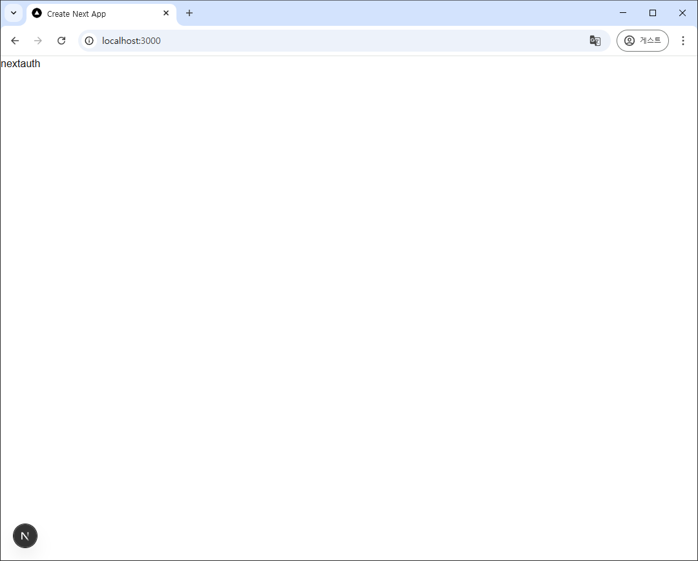
next.js에서 pg 접속
app/lib/db.ts
db관련 처리를 모두 담당할 클래스 생성
pg 사용
// app/lib/db.ts
import pg, { Client } from 'pg'
인터페이스 생성
DB 테이블(member) 구조와 똑같이 만든다.
다만 pwd는 가져와 쓸 일이 없으니 뺐다.
//app/lib/db.ts
// 인터페이스 생성
export interface SMember
{
id: string;
nickname: string;
email: string | null;
}
클래스 본체
class DBMan
{
private client: pg.Client;
constructor()
{
this.client = new Client(
{
user: 'scott',
password: 'tiger',
host: 'localhost',
port: 43432,
database: 'nextauth'
}
);
this.client.connect()
.then( ()=> {
console.log("connect 성공");
})
.catch( () => {
console.log("connect 실패");
});
}
// 멤버정보 가져오기
public async getMembers()
{
const sql = `
select * from member
`;
const result = await this.client.query(sql);
const data = result.rows;
console.log("[db.ts getMembers] result.rows = ", data);
return data;
}
// 연결을 끊는다.
public async disconnect()
{
this.client.end();
}
}
export default DBMan;
DB 접속, 데이터 가져오기 테스트
app/lib/page.tsx 파일 생성
가장 간단하게 DB 테스트하는 방법
// app/lib/page.tsx 파일
// db 연결 테스트 위한 서버 컴퍼넌트
import DBMan, { SMember } from '@/app/lib/db';
export default async function DBTest() {
const db = new DBMan();
const members: Array<SMember> = await db.getMembers();
db.disconnect();
members.forEach(element => {
console.log(element.nickname);
});
return (
<div>
member 테이블 데이터 갯수: {members.length}
</div>
);
}
실행결과: localhost:3000/lib 로 접속

vscode 터미널에 출력된 콘솔 내용
GET /lib 200 in 141ms
GET /favicon.ico?favicon.45db1c09.ico 200 in 304ms
✓ Compiled in 55ms
✓ Compiled /lib in 52ms
connect 성공
[db.ts getMembers] result.rows = [
{
id: 'user01',
nickname: 'nickname01',
pwd: '$2a$06--------------------------------가림----------------',
email: 'test@gmail.com'
}
]
nickname01
GET /lib 200 in 177ms
GET /favicon.ico?favicon.45db1c09.ico 200 in 287ms
DB 접속 쉽게 잘 되는 것 확인
nextauth를 이용한 로그인
credentials (아이디, 비밀번호)로 로그인
app/api/auth/[…nextauth]/route.ts
nextauth에서 가장 중심이 되는 파일.
실제 폴더명이 [...nextauth] 이다.
// app/api/auth/[...nextauth]/route.ts
import NextAuth from 'next-auth/next'
import CredentialsProvider from 'next-auth/providers/credentials'
const handler = NextAuth({
providers: [
CredentialsProvider({
name: 'Credentials',
credentials: {
username: { label: '아이디', type: 'text', placeholder: '아이디 입력' },
password: { label: '비밀번호', type: 'password', placeholder: '비밀번호 입력' },
},
async authorize(credentials, req) {
return null; // null을 넘기면 실패했다는 뜻이다.
},
}),
]
})
export { handler as GET, handler as POST }
위 코드가 nextauth에서 credentials 방식을 사용할 때 가장 간단한 형태이다.
이 코드는 get 방식을 사용하지 않고 POST 방식을 사용하기 때문에 바로 테스트해볼 수는 없다.

로그인 버튼을 만들고 누르면 로그인이 실행되도록 하자.
로그인 버튼
app/page.tsx 파일에 로그인 버튼 추가
// app/page.tsx
import { signIn } from "next-auth/react";
export default function Home() {
return (
<div>
nextauth
{/* 로그인 버튼 추가 */}
<button onClick={() => signIn()}>로그인</button>
</div>
);
}

버튼을 누르면 그에 대한 이벤트 핸들링을 해야 하기 때문에 Client component에서만 이 동작이 가능하다. 그러니 app/page.tsx는 원래대로 돌려 놓고 로그인 버튼을 가지는 client component를 만들자.
(물론 page.tsx 파일 맨 위에 “use client“를 적으면 가장 간단하게 해결되지만 클라이언트는 컴퍼넌트로 만들어 추가해 쓰자.)
// app/page.tsx
export default function Home() {
return (
<div>
nextauth
</div>
);
}
app/login/sign_in_button_c.tsx 컴퍼넌트를 만들자.
파일명 맨 뒤에 _c 를 붙인 건 이게 client 컴퍼넌트라 구분하기 위해서다.
nextauth에서는 login을 signin 이라 부른다. logout은 signout. 그래서 따라하기로 했다.
// app/login/sign_in_button_c.tsx
"use client";
import React from "react";
import { signIn } from "next-auth/react";
export default function SignInButton_C() {
return (
<div>
<button onClick={() => signIn()}>로그인</button>
</div>
);
}
이제 이 컴퍼넌트를 사용하도록 app/page.tsx를 수정하자.
// app/page.tsx
import SignInButton_C from "./login/sign_in_button_c";
export default function Home() {
return (
<div>
nextauth
<SignInButton_C />
</div>
);
}
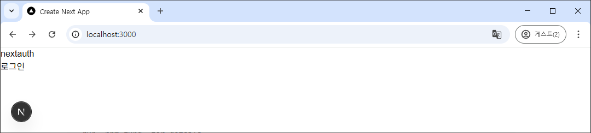
로그인 버튼에 CSS를 주지 않았더니(현재 tailwind 적용 상태) 그냥 텍스트처럼 보이는데 코드를 단순화하기 위해 css 먹이지 않겠음.
로그인 버튼을 누르면 아래와 같이 nextauth가 제공하는 기본 로그인 창이 나온다.
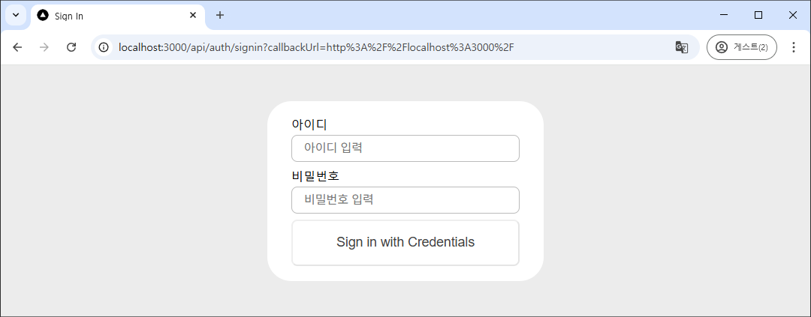

아이디 비번 모두 111을 넣고 [Sign in with Credentials] 버튼을 누르면,

로그인에 실패했다는 메시지를 볼 수 있다.
이거 전부 nextauth가 기본적으로 해주는 거다.
DB를 이용한 진짜 로그인
app/api/auth/[…nextauth]/route.ts 파일을 다시 열어보자.
authorize() 함수에서 어떤 값을 리턴하면 로그인 성공이고 null을 리턴하면 로그인 실패다. 리턴하는 값은 나중에 세션을 구성할 때 쓰이니 아무 값이나 리턴하면 안 된다.
// app/api/auth/[...nextauth]/route.ts
async authorize(credentials, req) {
return null; // null을 넘기면 실패했다는 뜻이다.
},
이 부분을 수정할 거다.
이걸 하려면 먼저 DBMan 클래스에서 login을 처리하는 함수가 있어야 한다.
// app/lib/db.ts
// 로그인. 결과가 null이면 로그인 실패. 그렇지 않으면 로그인 성공
public async login(id: string, password: string)
{
let sql = `
select
id
, nickname
, email
from
member
where
id = '${id}'
and pwd = crypt('${password}', pwd)
`;
const result = await this.client.query(sql);
const rowcount = result?.rowCount || -1;
if (1 == rowcount)
{
const data = result.rows[0];
return data;
}
return null;
}
crypt를 이용해 insert 했으니, crypt를 이용해 where문을 만들어야 한다.
where pwd = crypt('${password}', pwd)
와 같은 식으로 where 절을 구성하면 된다.
이제 DB는 준비가 되었으니 authorize 함수를 수정하자.
app/api/auth/[…nextauth]/route.ts 파일의 윗부분에
// app/api/auth/[...nextauth]/route.ts
import DBMan, { SMember } from '@/app/lib/db';
을 추가해 DB를 사용하도록 준비하고,
// app/api/auth/[...nextauth]/route.ts
async authorize(credentials, req) {
const db = new DBMan();
// console.log("credentials?.username", credentials?.username || "");
// console.log("credentials?.password", credentials?.password || "");
const member: SMember = await db.login(credentials?.username || "", credentials?.password || "")
db.disconnect();
console.log("[login] member: ", member);
if (member != null)
{
console.log("[login]로그인 성공. member: ", member);
return member; // 로그인 성공
}
else
{
console.log("[login] 로그인 실패: ", credentials?.username);
return null; // 로그인 실패
}
},
user01 / 1234 로 로그인해 보자. 틀리게도 해보자.
실패한 경우 로그
connect 성공
[login] member: null
[login] 로그인 실패: user01
POST /api/auth/callback/credentials 302 in 110ms
GET /api/auth/error?error=CredentialsSignin&provider=credentials 302 in 83ms
GET /api/auth/signin?error=CredentialsSignin 200 in 79ms
GET /favicon.ico 200 in 308ms
성공한 경우 로그
connect 성공
[login] member: { id: 'user01', nickname: 'nickname01', email: 'test@gmail.com' }
[login]로그인 성공. member: { id: 'user01', nickname: 'nickname01', email: 'test@gmail.com' }
POST /api/auth/callback/credentials 302 in 108ms
GET / 200 in 147ms
GET /favicon.ico?favicon.45db1c09.ico 200 in 314ms
custom 로그인 화면
로그인 실패 시 메시지를 보여주는 등 좀 더 다양한 로그인 관련 처리를 하려면 아무래도 custom 로그인 화면이 있어야 한다. nextauth가 만들어서 보여주는 로그인 화면을 그대로 쓰는 경우는 없을거다.
이를 위해
app/api/auth/[…nextauth]/route.ts 파일에서 NextAuth() 파라미터로 pages 를 추가해 주면 된다.
providers: 밑에 pages: 를 추가해 주고 signIn() 함수가 호출될 때 이동할 페이지를 적어준다.
// app/api/auth/[...nextauth]/route.ts
, pages: {
signIn: '/auth/signin', // Displays signin buttons
// signOut: '/auth/signout', // Displays form with sign out button
// error: '/auth/error', // Error code passed in query string as ?error=
// verifyRequest: '/auth/verify-request', // (used for check email message)
// newUser: null, // Will disable the new account creation screen
}
밑에 여러 종류가 있지만 일단 signIn만 해보자.
여기까지만 하고 다시 [로그인] 버튼을 눌러보면

아까와 달리 NOT FOUND 에러가 난다.
app/api/auth/signin 으로 찾아가야 하는데 그런 폴더가 없어서다.
이제 설정한 것처럼 app/api/auth/signin 폴더를 만들자. 정확한 위치에 폴더가 만들어지지 않으면 dev 서버가 죽기도 한다.
그리고 그 폴더 아래에 page.tsx 파일을 만든다.
// app/api/auth/signin/page.tsx
'use client'
import React, { useRef } from 'react'
import { signIn } from 'next-auth/react'
export default function LoginForm_C() {
const useridRef = useRef(null)
const passwordRef = useRef(null)
const handleSubmit = async () => {
//console.log(useridRef.current)
//console.log(passwordRef.current)
const result = await signIn('credentials', {
username: useridRef.current,
password: passwordRef.current,
redirect: false,
callbackUrl: '/',
});
console.log("[Login] result", result);
if (result?.ok == false)
{
location.href = '/';
}
else
{
alert("로그인에 실패했습니다.");
}
}
return (
<div>
<label>아이디</label><input ref={useridRef} onChange={(e: any) => {useridRef.current = e.target.value}} id='id' name='id' type='text' required autoFocus={true} />
<label>비밀번호</label><input ref={passwordRef} onChange={(e: any) => {passwordRef.current = e.target.value}} id='password' name='password' type='password' required />
<button onClick={handleSubmit}>로그인</button>
</div>
)
}
이제 로그인 버튼을 누르면 app/api/auth/signin/page.tsx 파일의 내용이 보여진다.

역시나 css 때문에 input box 의 테두리가 안 그려지고 있다.

로그인에 성공하면 /로 이동하고, 실패하면 에러메시지가 나온다.

signIn() 함수를 호출하면서 다양한 파라미터를 넘기는데, 그 중 redirect를 true로 세팅하면, 로그인 실패 시 그 자리에 가만히 있고, 성공하면 callbackUrl 에서 정해준 위치로 이동하게 된다.
뭔가 다른 옵션을 좀 더 찾아볼 필요가 있겠다.
하지만 일단은 내가 원하는대로 조정하려면 redirect를 false로 놓고 그 아래에서 결과에 따라 (await 하니까) 그에 맞는 처리를 해주었다.
세션 처리
nextauth는 기본적으로 로그인한 결과를 세션에 넣어주고 JWT(JSON Web Token) 값까지 만들어준다. 아무 것도 안해도 세션에 값이 이미 들어가 있는거다.
만약 세션에 저장되는 값을 (당연하게도) 바꾸고 싶다면 app/api/auth/[...nextauth]/route.ts 파일에서 이번에는 callbacks: 를 추가해야 한다.
nextauth는 2개의 callbacks를 제공한다.
- jwt() : jws callback 참조
- session() : session callback 참조
pages 밑에 callbacks: 를 추가해 보자.
jwt() 콜백
우선 jwt()를 추가한다.
// app/api/auth/signin/page.tsx
, callbacks:
{
jwt({ token, user })
{
console.log("\n\n");
console.log("------------------- [jwt callback] -------------------");
console.log("[jwt] token = ", token, "\n");
console.log("[jwt] user = ", user);
return token;
}
}
이렇게 해 놓고 로그인을 해보자. jwt()는 JWT가 생성되거나 업데이트될 때 실행되는데, authorize() 함수에서 값이 리턴되면 이 값을 기반으로 바로 JWT를 만들기 때문에 이 jwt() 콜백함수도 실행된다.
이렇게 놓고 로그인이 성공하면 jwt()로 넘어오는 값이 어떤 값들인지 vscode의 terminal에 출력된 로그로 확인하자.
------------------- [jwt callback] -------------------
[jwt] token = {
name: undefined,
email: 'test@gmail.com',
picture: undefined,
sub: 'user01'
}
[jwt] user = { id: 'user01', nickname: 'nickname01', email: 'test@gmail.com' }
token을 가만 보면, member 객체가 가지고 있는 것 중 token이 기존에 가지고 있던 항목 중 하나인 email 항목에 자동으로 들어와 있는 걸 확인할 수 있다. 그리고 sub 항목(subject)에 id 값인 ’user01’이 들어가 있는 것도 볼 수 있다.
nickname은 token의 기존 항목에 없는 항목이라 아무 데에도 들어가 있지 않다.
// app/api/auth/signin/page.tsx
if (member != null)
{
console.log("[login]로그인 성공. member: ", member);
return member; // 로그인 성공
}
위와 같이 authorize() 함수 내에서 로그인 성공 시 이렇게 리턴한 member 객체가 jwt() 함수의 user 객체로 그대로 들어와 있다.
여기서 쓸 값은 token이니까 token에 user의 값을 옮겨담고 기타 더 필요한 게 있으면 token에 적어주면 된다.
jwt() 함수를 아래처럼 조금 더 고쳤다.
// app/api/auth/signin/page.tsx
, callbacks:
{
jwt({ token, user })
{
console.log("\n\n");
console.log("------------------- [jwt callback] -------------------");
console.log("[jwt] token = ", token, "\n");
console.log("[jwt] user = ", user);
if (user)
{
token.id = user.id;
token.nickname = user.nickname;
token.email = user.email;
}
return token;
}
}
vscode에서 user에는 nickname이라는 값이 없다고 아래처럼 빨간 밑줄을 보여 줄거다. 당장은 큰 에러가 나지는 않으니 이 문제는 나중에 해결 하자.

여기까지 로그인하는 순간 nextauth가 JWT 값을 생성하고, 그래서 그 때 jwt() 함수가 콜백되어 token에 값을 쓸 수 있게 되었다.
이 값은 nextauth가 잘 보관하고 있다.
session() 콜백
이제 nextauth가 가지고 있던 토큰 값을 사용할 떄가 되었다. 사용자가 session에 저장된 값을 원하면 그 때 session() 콜백이 일어난다.
구체적으로는 client component가 useSession 훅을 이용하거나 server component가 getServerSession() 함수를 호출할 때다.
jwt() 함수에서 token에 값이 잘 들어갔는지, 정확히는 어떤 값이 들어갔는지 확인하기 위해서라도 session() 콜백 함수를 만들어보자.
callbacks: 안에 jwt() 함수 아래에 session() 함수를 추가한다.
// app/api/auth/signin/page.tsx
, async session({ session, token })
{
console.log("\n\n");
console.log("------------------- [session] -------------------");
console.log("[session] session = ", session);
console.log("[session] token = ", token);
return session;
}
이렇게 추가하고 로그인을 해도 session() 함수 콜백은 일어나지 않는다. (로그에 아무것도 안나온다) 아무데서도 세션을 이용하지 않고 있으니까.
이제 nextauth에서 제공하는 세션을 이용해 보자.
nextauth session
app/login/sign_in_button_c.tsx 파일을 수정하자. session 값을 확인해서 로그인 된 상태면 로그아웃 버튼을 보여주고, 그렇지 않으면 로그인 버튼을 보여주도록 고치려 한다. 그리고 로그인 되어 있는 상태면 nickname도 보여주자.
react의 useSession 훅을 사용해야 한다. 그러기 위해 client component여야 한다. 우리는 이 컴퍼넌트를 client 컴퍼넌트로 만들었었다.
import 부분을 이렇게 바꾼다.
// app/login/sign_in_button_c.tsx
import { signIn, signOut, useSession } from "next-auth/react";
app/login/sign_in_button_c.tsx 파일의 전체 코드는 다음과 같다.
// app/login/sign_in_button_c.tsx
"use client";
import React from "react";
import { signIn, signOut, useSession } from "next-auth/react";
export default function SignInButton_C() {
const { data: session } = useSession();
if (session && session.user)
{
return (
<span onClick={() => signOut()}>{session.user.nickname}님 로그아웃</span>
);
}
else
{
return (
<span onClick={() => signIn()}>로그인</span>
);
}
}
여기까지 수정하고 / 페이지로 가면(http://localhost:3000)
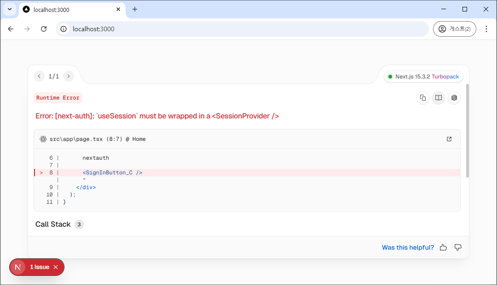
useSession 쓸 꺼면 <SessionProvider> 로 감싸야 한단다.
그럼 Provider를 만들어 보자.
app/login/providers.tsx 파일을 생성하자.
// app/login/providers.tsx
"use client";
import { SessionProvider } from "next-auth/react";
import React, { ReactNode } from "react";
interface Props
{
children: ReactNode;
}
export default function Providers({ children }: Props)
{
return (
<SessionProvider>{children}</SessionProvider>
);
}
그냥 {children}을 <SessionProvider>로 감싸기만 한다.
이제 우리의 SingInButton_C 컴퍼넌트를 감싸기 위해 app/page.tsx 파일을 수정하자.
// app/page.tsx
import Providers from "./login/providers";
import SignInButton_C from "./login/sign_in_button_c";
export default function Home() {
return (
<div>
nextauth
<Providers>
<SignInButton_C />
</Providers>
</div>
);
}
세션을 사용하는 모든 곳이 감싸지도록 해야 한다. 그래서 대부분 <Providers> 컴퍼넌트를 return 문의 맨 위와 아래에서 사용한다.
만약 providers를 server component로 만들면(맨 위에 “use client”; 하지 않으면) 아래와 같은 에러를 보게 된다.

여기까지 진행하면,

이렇게 나온다.
session.user.nickname 부분에 값이 나오지 않다는 걸 알 수 있다.
이제 다시 vscode 터미널의 로그 값을 확인해 보자.
------------------- [jwt callback] -------------------
[jwt] token = {
email: 'test@gmail.com',
sub: 'user01',
id: 'user01',
nickname: 'nickname01',
iat: 1746768710,
exp: 1749360710,
jti: '02e24704-ae76-4333-b8ee-163d5dbcde40'
}
[jwt] user = undefined
------------------- [session] -------------------
[session] session = {
user: { name: undefined, email: 'test@gmail.com', image: undefined },
expires: '2025-06-08T05:50:56.023Z'
}
[session] token = {
email: 'test@gmail.com',
sub: 'user01',
id: 'user01',
nickname: 'nickname01',
iat: 1746768710,
exp: 1749360710,
jti: '02e24704-ae76-4333-b8ee-163d5dbcde40'
}
로그인할 때마다 jwt() 함수가 콜백되어 로그에 나왔고, 로그인에 성공하면 /로 가도록 했는데 그럼 app/page.tsx를 호출한 거고, 거기서 useSession 훅을 사용하니 session() 함수가 콜백되었다. 그래서 세션 로그가 남은 것.
이 로그를 자세히 보면 파라미터로 넘어온 token에는 jwt() 함수 콜백때 적은 값이 그대로 있고, session.user는 처음 로그인했을 때 봤던 것과 같은 상태라는 걸 알 수 있다.
그리고 한 가지 더 알 수 있는 건 token에 jti(JWT ID)에 값이 들어가 있다는 거다. 이는 JWT를 구분하는데 사용된다. 만약 이상한 행동을 하는 사용자가 있으면 이 jti를 넘기는 사용자는(사용자 특정) 더 이상 아무 것도 하지 못하게 막을 수도 있다.
누군가 session 값을 요구하면 화면에 보여줄 내용들만 session.user에 담아 주자. 보안을 위해.
이제 app/login/sign_in_button_c.tsx 파일에서 session.user.nickname 값이 보이지 않았던 문제를 해결할 수 있을 거 같다.
, async session({ session, token })
{
console.log("\n\n");
console.log("------------------- [session] -------------------");
console.log("[session] session = ", session);
console.log("[session] token = ", token);
session.user = {
id : token.id as string,
nickname: token.nickname as string,
};
return session;
}
이렇게 session.user 값을 재설정해주면 로그인한 사람의 nickname을 제대로 보여준다.

음.. 화면 보여지는 부분을 최소화하려니 이런 참사가.
암튼 여기까지 세션값에 따라 로그인과 로그아웃 버튼이 나오는 걸 확인할 수 있다.
로그인한 사람만 볼 수 있는 페이지
로그인한 사람만 볼 수 있는 페이지를 만들어 보겠다. 먼저 Restful API 서비스를 만들고 거기에 제한을 걸어보려 한다.
API 서비스 만들기
data 테이블의 값을 읽어서 보여주는 서비스를 만들어 보자.
먼저 DB에서 data 테이블의 값을 모두 가져오는 함수를 만들어야 한다. DBMan 클래스를 수정하자.
// app/lib/db.ts
// 데이터 가져오기
public async getData()
{
const sql = `
select * from data
`;
const result = await this.client.query(sql);
const data = result.rows;
console.log("[db.ts getData] result.rows = ", data);
return data;
}
위와 같이 DBMan 클래스에 함수를 추가한다.
다음으로 app/api/data/route.ts 파일을 만들고 다음과 같이 작성하자.
// app/api/data/route.ts
import { NextRequest, NextResponse } from 'next/server';
import DBMan from '@/app/lib/db';
export async function GET(req: NextRequest)
{
const db = new DBMan();
const data = await db.getData();
db.disconnect();
return NextResponse.json(data);
}
data 테이블의 모든 내용을 보여주는 restful 서비스다.
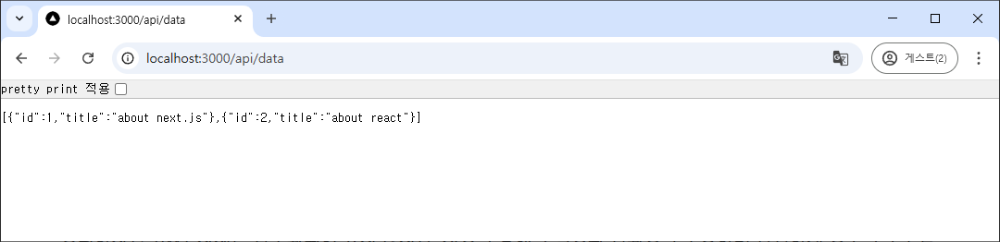
data 테이블의 모든 내용을 json 형태로 리턴해준다.
[{"id":1,"title":"about next.js"},{"id":2,"title":"about react"}]
이 서비스의 문제는 로그인하지 않아도 아무나 이 사이트에 접속해 데이터를 볼 수 있다는 거다. 이제 여기에 로그인한 사람만 내용을 볼 수 있도록 수정해 보자.
route.ts는 서버 컴퍼넌트니까 useSession이 아니라 getServerSession() 함수를 이용해야 한다.
app/api/data/route.ts 파일을 수정해 보자.
import { NextRequest, NextResponse } from 'next/server';
import DBMan from '@/app/lib/db';
import { getServerSession } from 'next-auth';
export async function GET(req: NextRequest)
{
const session = await getServerSession();
console.log("\n\n[data/route.ts] session = ", session, "\n");
const db = new DBMan();
const data = await db.getData();
db.disconnect();
return NextResponse.json(data);
}
이렇게 하고 로그인 한 다음
http://localhost:3000/api/data 에 접속하면 브라우저에서는 아무 문제가 없는 거 같은데 vscode 의 터미널에 나온 로그는 난리가 났다.
[next-auth][error][JWT_SESSION_ERROR]
https://next-auth.js.org/errors#jwt_session_error decryption operation failed {
message: 'decryption operation failed',
stack: 'JWEDecryptionFailed: decryption operation failed\n' +
' at gcmDecrypt (D:\\test\\nextauth001\\src\\nextauth\\.next\\server\\chunks\\node_modules_jose_dist_node_cjs_b4a80197._.js:769:15)\n'
... 20줄 정도 나온 거 삭제함.
name: 'JWEDecryptionFailed'
}
[data/route.ts] session = null
우선 제일 처음 드는 생각은 아.. <Proders> 를 page.tsx가 아니라 layout.tsx에서 사용해야 겠구나. 였지만 일단 그 문제는 아닌거 같다.
getServerSession() 함수는 중요한 인자를 하나 받는다. 여태 클라이언트 컴퍼넌트에서 useSession 훅을 사용할 때는 큰 문제없이 쓸 수 있을 줄 알았는데 서버 컴퍼넌트에서 사용하기 위해서는 nextauth를 좀 더 제대로 설정해야 한다. getServerSession() 함수에 authOptions 인자를 추가하면서 nextauth를 좀 더 제대로, 보안을 강화해 가며 사용해 보자.
여태 우리는 app/api/auth/[…nextauth]/route.ts 파일에서 NextAuth() 함수에 복잡한 값을 파라미터로 던져줬다.
getServerSession() 함수에서 필수인 파라미터인 authOptions: AuthOptions 의 값이 바로 NextAuth() 함수에 넘겨준 값이었다.
그러니까 const authOptions = {} 과 같이 값이 설정해 주고,
const handler = NextAuth(authOptions)
와 같이 넘겨주면 되는 거였다.
이렇게 수정한 버전이 다음과 같다.
// app/api/auth/[...nextauth]/route.ts
import NextAuth from 'next-auth/next'
import CredentialsProvider from 'next-auth/providers/credentials'
import DBMan, { SMember } from '@/app/lib/db';
import { AuthOptions } from 'next-auth';
export const authOptions: AuthOptions = {
providers: [
CredentialsProvider({
name: 'Credentials',
credentials: {
username: { label: '아이디', type: 'text', placeholder: '아이디 입력' },
password: { label: '비밀번호', type: 'password', placeholder: '비밀번호 입력' },
},
async authorize(credentials, req) {
const db = new DBMan();
// console.log("credentials?.username", credentials?.username || "");
// console.log("credentials?.password", credentials?.password || "");
const member: SMember = await db.login(credentials?.username || "", credentials?.password || "")
db.disconnect();
console.log("[login] member: ", member);
if (member != null)
{
console.log("[login]로그인 성공. member: ", member);
return member; // 로그인 성공
}
else
{
console.log("[login] 로그인 실패: ", credentials?.username);
return null; // 로그인 실패
}
},
}),
]
, pages:
{
signIn: '/auth/signin', // Displays signin buttons
// signOut: '/auth/signout', // Displays form with sign out button
// error: '/auth/error', // Error code passed in query string as ?error=
// verifyRequest: '/auth/verify-request', // (used for check email message)
// newUser: null, // Will disable the new account creation screen
}
, callbacks:
{
jwt({ token, user })
{
console.log("\n\n");
console.log("------------------- [jwt callback] -------------------");
console.log("[jwt] token = ", token, "\n");
console.log("[jwt] user = ", user);
if (user)
{
token.id = user.id;
token.nickname = user.nickname;
token.email = user.email;
}
return token;
}
, async session({ session, token })
{
console.log("\n\n");
console.log("------------------- [session] -------------------");
console.log("[session] session = ", session);
console.log("[session] token = ", token);
session.user = {
id : token.id as string,
nickname: token.nickname as string,
};
return session;
}
}
};
const handler = NextAuth(authOptions)
export { handler as GET, handler as POST }
이것만으로는 아직 getServerSession() 함수가 정상동작하지 않는다. JWT가 서명하기 위해 필요한 키를 입력해 줘야 한다.
원리를 알기 위해 아래와 같이 수동으로 할 수도 있지만 자동으로 하는 걸 추천한다.
수동으로 .env 파일 만들기(비추)
프로젝트 루트 폴더(D:\test\nextauth001\src\nextauth)에 .env 파일을 하나 생성하고, 그 파일에 다음과 같이 적는다.
// 프로젝트 루트 폴더 / .env
NEXTAUTH_SECRET=asdflkajweofjaweofawjawofj902384fawoeijfawoefjq2398fjsadffj0234jfalweka
자동으로 .env.local 파일 만들기(추천)
출처: https://authjs.dev/getting-started/installation
위에 수동으로 만드는 거랑 (자동으로 만들어진) 파일명이 다른 데도 같은 코드로 사용이 가능하다.
프로젝트 루트에서 다음을 실행한다.
npx auth secret
실제 실행결과는 다음과 같다.
PS E:\test\nextauth001\src\nextauth> npx auth secret
Need to install the following packages:
auth@1.2.3
Ok to proceed? (y) y
📝 Created E:\test\nextauth001\src\nextauth\.env.local with `AUTH_SECRET`.
PS E:\github-stuousk\nextauth001\src\nextauth>
만들어진 .env.local 파일의 내용은 다음과 같다.
AUTH_SECRET="KFcZVCNUH3bAJBRXRVhJLx9Gp0qTb2eZheErE6Exy8A=" # Added by `npx auth`. Read more: https://cli.authjs.dev
next.js를 처음 만들면 .gitignore에 .env*이 포함되어 있다. 그래서 git에 올라가지 않는게 기본이다.
# env files (can opt-in for committing if needed)
.env*
그래도 git status 등을 통해 이게 혹시 git 서버로 올라가지는 않는지 확인해야 한다.
저 키는 JWT 서명할 때 사용하는 키라 외부로 나가면 안 된다.
만들어진 키 사용하기
자동으로 만들었건 수동으로 만들었건 이 키를 사용하도록 app/api/auth/[…nextauth]/route.ts 파일의 authOptions에 추가해야 한다.
// app/api/auth/[...nextauth]/route.ts
, secret: process.env.NEXTAUTH_SECRET
를 추가한다.
여기까지 한 전체 코드는 다음과 같다.
// app/api/auth/[...nextauth]/route.ts
import NextAuth from 'next-auth/next'
import CredentialsProvider from 'next-auth/providers/credentials'
import DBMan, { SMember } from '@/app/lib/db';
import { AuthOptions } from 'next-auth';
export const authOptions: AuthOptions = {
providers: [
CredentialsProvider({
name: 'Credentials',
credentials: {
username: { label: '아이디', type: 'text', placeholder: '아이디 입력' },
password: { label: '비밀번호', type: 'password', placeholder: '비밀번호 입력' },
},
async authorize(credentials, req) {
const db = new DBMan();
// console.log("credentials?.username", credentials?.username || "");
// console.log("credentials?.password", credentials?.password || "");
const member: SMember = await db.login(credentials?.username || "", credentials?.password || "")
db.disconnect();
console.log("[login] member: ", member);
if (member != null)
{
console.log("[login]로그인 성공. member: ", member);
return member; // 로그인 성공
}
else
{
console.log("[login] 로그인 실패: ", credentials?.username);
return null; // 로그인 실패
}
},
}),
]
, secret: process.env.NEXTAUTH_SECRET
, pages:
{
signIn: '/auth/signin', // Displays signin buttons
// signOut: '/auth/signout', // Displays form with sign out button
// error: '/auth/error', // Error code passed in query string as ?error=
// verifyRequest: '/auth/verify-request', // (used for check email message)
// newUser: null, // Will disable the new account creation screen
}
, callbacks:
{
jwt({ token, user })
{
console.log("\n\n");
console.log("------------------- [jwt callback] -------------------");
console.log("[jwt] token = ", token, "\n");
console.log("[jwt] user = ", user);
if (user)
{
token.id = user.id;
token.nickname = user.nickname;
token.email = user.email;
}
return token;
}
, async session({ session, token })
{
console.log("\n\n");
console.log("------------------- [session] -------------------");
console.log("[session] session = ", session);
console.log("[session] token = ", token);
session.user = {
id : token.id as string,
nickname: token.nickname as string,
};
return session;
}
}
};
const handler = NextAuth(authOptions)
export { handler as GET, handler as POST }
이제 다시 app/api/data/route.ts 파일을 수정해 위에 수정한 authOptions를 getServerSession() 함수에 파라미터로 넘기도록 해보자.
import { NextRequest, NextResponse } from 'next/server';
import DBMan from '@/app/lib/db';
import { getServerSession } from 'next-auth';
import { authOptions } from '@/app/api/auth/[...nextauth]/route';
export async function GET(req: NextRequest)
{
console.log("authOptions: ", authOptions);
console.log("process.env.NEXTAUTH_SECRET: ", process.env.NEXTAUTH_SECRET);
const session = await getServerSession(authOptions);
console.log("\n\n[data/route.ts] session = ", session, "\n");
const db = new DBMan();
const data = await db.getData();
db.disconnect();
return NextResponse.json(data);
}
다시 로그인하자. 그리고 http://localhost:3000/api/data에 접속한다.
이제 로그를 보면 다음과 같이 서버에서도 값을 제대로 가져오고 있다는 것을 알 수 있다.
authOptions: {
providers: [
{
id: 'credentials',
name: 'Credentials',
type: 'credentials',
credentials: [Object],
authorize: [Function: authorize],
options: [Object]
}
],
secret: 'asdflkajweofjaweofawjawofj902384fawoeijfawoefjq2398fjsadffj0234jfalweka',
pages: { signIn: '/auth/signin' },
callbacks: { jwt: [Function: jwt], session: [AsyncFunction: session] }
}
process.env.NEXTAUTH_SECRET: asdflkajweofjaweofawjawofj902384fawoeijfawoefjq2398fjsadffj0234jfalweka
------------------- [jwt callback] -------------------
[jwt] token = {
email: 'test@gmail.com',
sub: 'user01',
id: 'user01',
nickname: 'nickname01',
iat: 1746779367,
exp: 1749371367,
jti: 'b057cd20-d9e4-4df6-880a-cb4c3b619be7'
}
[jwt] user = undefined
------------------- [session] -------------------
[session] session = {
user: { name: undefined, email: 'test@gmail.com', image: undefined },
expires: '2025-06-08T08:29:32.449Z'
}
[session] token = {
email: 'test@gmail.com',
sub: 'user01',
id: 'user01',
nickname: 'nickname01',
iat: 1746779367,
exp: 1749371367,
jti: 'b057cd20-d9e4-4df6-880a-cb4c3b619be7'
}
[data/route.ts] session = { user: { id: 'user01', nickname: 'nickname01' } }
connect 성공
[db.ts getData] result.rows = [ { id: 1, title: 'about next.js' }, { id: 2, title: 'about react' } ]
이제 session 값이 없으면 튕겨내면 된다.
import { NextRequest, NextResponse } from 'next/server';
import DBMan from '@/app/lib/db';
import { getServerSession } from 'next-auth';
import { authOptions } from '@/app/api/auth/[...nextauth]/route';
export async function GET(req: NextRequest)
{
const session = await getServerSession(authOptions);
console.log("\n\n[data/route.ts] session = ", session, "\n");
if (session)
{
const db = new DBMan();
const data = await db.getData();
db.disconnect();
return NextResponse.json(data);
}
else
{
return NextResponse.json("권한 없음");
}
}
다시 로그인하자. 그리고 http://localhost:3000/api/data에 접속해 보자.
[data/route.ts] session = { user: { id: 'user01', nickname: 'nickname01' } }
로그인하면 session에 값이 제대로 들어온다.
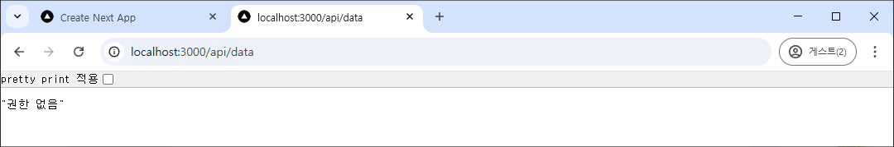
로그아웃하고 http://localhost:3000/api/data에 접속하면 위와 같은 메시지만 나오고 데이터는 보여주지 않는다.
getServerSession() 함수를 이용하면 내부적으로 JWT의 서명부분을 자동으로 확인해준다. 암호화하고 복호화하기 위해 authOptions에 NEXTAUTH_SECRET 가 필요했던 것.
Session.User의 데이터 구조 변경
app/api/auth/[…nextauth]/route.ts 파일에서 jwt() 콜백 함수 내에서 아래와 같이 나타나는 걸 볼 수 있다. typescript에서는 이 문제를 해결해야 한다.
Session.user는 {id, name, email}으로 구성되어 있다. 그래서 nickname이 없다고 저렇게 빨간색으로 나오는 거다.
이 문제는 Session.user의 타입을 새로 정의해 주면 된다.
app/types 폴더를 하나 만들자.
그 안에 next-auth.d.ts 파일을 생성하자.
// app/types/next-auth.d.ts
import NextAuth from "next-auth"
declare module "next-auth" {
interface Session {
user: {
id: string;
nickname: string;
email: string | null;
}
}
// jwt() 콜백 함수에 들어가는 user 파라미터 구조 변경
interface User {
id: string;
nickname: string;
email: string | null;
}
}
이렇게 타입을 재정의해주면 된다.

이제 빨간 줄이 없어졌다.

새롭게 여기에 빨간 줄이 새로 생겼는데, 이건 Session.user에 email이 있는데 들어가지 않아서 생긴거다.
이거마저 안나오게 하고 싶다면
email?: string | null;
이렇게 해주면 된다.
// app/types/next-auth.d.ts
import NextAuth from "next-auth"
declare module "next-auth" {
interface Session {
user: {
id: string;
nickname: string;
email?: string | null;
}
}
// jwt() 콜백 함수에 들어가는 user 파라미터 구조 변경
interface User {
id: string;
nickname: string;
email?: string | null;
}
}
이렇게 해주면 모든 문제가 해결된다.
Providers 위치 다시 잡기
현재 <Providers> 는 app/page.tsx 파일 내에 있다. 이게 전역적으로 다 감싸지려면 app/layout.tsx 파일 내에 있어야 한다.
app/page.tsx 파일 내에서 <Providers> 컴퍼넌트를 없앤다.
// app/page.tsx
import SignInButton_C from "./login/sign_in_button_c";
export default function Home() {
return (
<div>
nextauth
<SignInButton_C />
</div>
);
}
그리고 app/layout.tsx 파일 내에서 <Providers> 컴퍼넌트로 {Children}을 감싼다.
// app/layout.tsx
<Providers>
{children}
</Providers>
빌드 문제 해결
이제 다 완성했다 생각하고
npm run build
하면 많은 에러를 보게 된다. 하나씩 해결해 보자.
PS D:\test\nextauth001\src\nextauth> npm run build
> nextauth@0.1.0 build
> next build
▲ Next.js 15.3.2
- Environments: .env
Creating an optimized production build ...
✓ Compiled successfully in 0ms
Linting and checking validity of types ...Failed to compile.
.next/types/app/api/auth/[...nextauth]/route.ts:12:13
Type error: Type 'OmitWithTag<typeof import("D:/test/nextauth001/src/nextauth/src/app/api/auth/[...nextauth]/route"), "GET" | "POST" | "HEAD" | "OPTIONS" | "PUT" | "DELETE" | "PATCH" | "config" | ... 7 more ... | "maxDuration", "">' does not satisfy the constraint '{ [x: string]: never; }'.
Property 'authOptions' is incompatible with index signature.
Type 'AuthOptions' is not assignable to type 'never'.
10 |
11 | // Check that the entry is a valid entry
> 12 | checkFields<Diff<{
| ^
13 | GET?: Function
14 | HEAD?: Function
15 | OPTIONS?: Function
Next.js build worker exited with code: 1 and signal: null
여태까지 아무 문제없이 잘 작동했는데 이 에러를 좇다보면 황당한 결론을 얻게 된다. 우리가 사용한 nextauth는 v4인데 v4는 app router를 공식 지원하지 않는다 한다.(우리는 app router 사용)
.next 폴더와 node_modules 폴더를 지운 후 auth.js v5를 설치했음.
npm install next-auth@beta
그런데 build 해도 똑같은 에러 발생함.
.next/types/app/api/auth/[...nextauth]/route.ts:12:13
Type error: Type 'OmitWithTag<typeof import("D:/github_stuousk/nextauth001/src/nextauth/src/app/api/auth/[...nextauth]/route"), "config" | "generateStaticParams" | "revalidate" | "dynamic" | "dynamicParams" | ... 10 more ... | "PATCH", "">' does not satisfy the constraint '{ [x: string]: never; }'.
Property 'authOptions' is incompatible with index signature.
Type 'AuthOptions' is not assignable to type 'never'.
10 |
11 | // Check that the entry is a valid entry
> 12 | checkFields<Diff<{
| ^
13 | GET?: Function
14 | HEAD?: Function
15 | OPTIONS?: Function
next-auth v4에서 https://next-auth.js.org/configuration/initialization#route-handlers-app 문서를, 전에는 그냥 대충 봤는데 다시 자세히 보고 있음.
다시 next-auth v4로 돌려 놓았음.
이 문제는 app/api/auth/[…nextauth]/route.ts 파일에서 authOptions를 export 해서 벌어진 문제였음. 이 파일에서의 export는 GET, POST 등 HTTP 메소드 관련 핸들러만 가능하다. 그래서 authOptions는 다른 파일에 정의해 놓고 가져다 쓰기로 함.
app/api/auth/[…nextauth]/authoption.ts 파일 생성하고 authOptions 내용 모두 가져가서 export 하기
// app/api/auth/[...nextauth]/authoption.ts
import CredentialsProvider from 'next-auth/providers/credentials'
import DBMan, { SMember } from '@/app/lib/db';
import { AuthOptions } from 'next-auth';
export const authOptions: AuthOptions = {
providers: [
CredentialsProvider({
name: 'Credentials',
credentials: {
username: { label: '아이디', type: 'text', placeholder: '아이디 입력' },
password: { label: '비밀번호', type: 'password', placeholder: '비밀번호 입력' },
},
async authorize(credentials, req) {
const db = new DBMan();
// console.log("credentials?.username", credentials?.username || "");
// console.log("credentials?.password", credentials?.password || "");
const member: SMember = await db.login(credentials?.username || "", credentials?.password || "")
db.disconnect();
console.log("[login] member: ", member);
if (member != null)
{
console.log("[login]로그인 성공. member: ", member);
return member; // 로그인 성공
}
else
{
console.log("[login] 로그인 실패: ", credentials?.username);
return null; // 로그인 실패
}
},
}),
]
, secret: process.env.NEXTAUTH_SECRET
, pages:
{
signIn: '/auth/signin', // Displays signin buttons
// signOut: '/auth/signout', // Displays form with sign out button
// error: '/auth/error', // Error code passed in query string as ?error=
// verifyRequest: '/auth/verify-request', // (used for check email message)
// newUser: null, // Will disable the new account creation screen
}
, callbacks:
{
jwt({ token, user })
{
console.log("\n\n");
console.log("------------------- [jwt callback] -------------------");
console.log("[jwt] token = ", token, "\n");
console.log("[jwt] user = ", user);
if (user)
{
token.id = user.id;
token.nickname = user.nickname;
token.email = user.email;
}
return token;
}
, async session({ session, token })
{
console.log("\n\n");
console.log("------------------- [session] -------------------");
console.log("[session] session = ", session);
console.log("[session] token = ", token);
session.user = {
id : token.id as string,
nickname: token.nickname as string,
};
return session;
}
}
};
app/api/auth/[…nextauth]/route.ts 파일 수정본
// app/api/auth/[...nextauth]/route.ts
import NextAuth from 'next-auth/next'
import { authOptions } from './authoption';
const handler = NextAuth(authOptions)
export { handler as GET, handler as POST }
그리고 app/api/data/route.ts 파일도 authOptions import 하는 부분을 수정했다.
// app/api/data/route.ts
import { authOptions } from '@/app/api/auth/[...nextauth]/authoption';
이렇게 했더니 빌드 통과되었다.
다음 문제는
./src/app/lib/db.ts:17:21
Type error: Cannot find namespace 'pg'.
15 | class DBMan
16 | {
> 17 | private client: pg.Client;
| ^
18 |
이 문제다. 역시나 pg가 없다고 나온다.
전에 문제가 있어서 문제가 없도록 수정했었는데 다시 에러가 나온다.
이 부분은 이렇게 수정헀다.
// app/lib/db.ts
import pg from 'pg';
const {Client} = pg;
class DBMan
{
client = new Client();
이제는 type 에러만 남았다.
build할 때 eslint를 빼고 싶으면,
next.config.ts 파일을 수정하면 된다.
// next.config.ts
import type { NextConfig } from "next";
const nextConfig: NextConfig = {
eslint: {
// Warning: This allows production builds to successfully complete even if
// your project has ESLint errors.
ignoreDuringBuilds: true,
}
};
export default nextConfig;
추가한 부분은 다음과 같다.
eslint: {
ignoreDuringBuilds: true,
}
관련 문서: https://nextjs.org/docs/app/api-reference/config/eslint#disabling-rules
Editor.js
- 노션 스타일의 블록형 에디터
- 오픈소스
- 홈페이지: https://editorjs.io
- 작성일: 2025. 5. 11.
- 최종수정일: 2025. 5. 11.
설치
editor.js는 다양한 플러그인을 제공한다. 우선 본체만 설치.
npm install @editorjs/editorjs
가장 간단한 샘플
page.tsx
죄다 지우고 아래와 같이 바꾼다.
// app/page.tsx
import EditorPage from "./editor";
export default function Home() {
return (
<div>
<EditorPage />
</div>
);
}
editor.tsx
Editor.js를 정의한 클라이언트 컴포넌트
// app/editor.tsx
"use client";
import EditorJS from '@editorjs/editorjs';
import './globals.css';
export default function EditorPage()
{
const editor = new EditorJS('editorjs');
return(
<div>
<div id="editorjs" />
</div>
);
}
vs 터미널에서 npm run dev로 실행하면 터미널에 에러가 잔뜩 나오는데,
실행한 후에 화면의 빈 곳을 마우스로 움직이다 보면
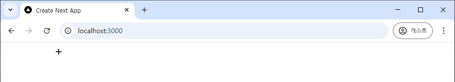
이렇게 + 기호가 나오고 노션처럼 글을 쓸 수 있다.

아직까지는 text만 추가할 수 있다.
혹시 + 기호가 안나오면
// app/editor.tsx
const editor = new EditorJS('editorjs');
의 editorjs 부분의 값을 바꾸고 다시 원래대로 돌려놓으면서 테스트해 보자.
editorjs가 holder인데, 이 값이랑
// app/editor.tsx
<div id="editorjs" />
이 부분의 id 값이 같아야 한다.
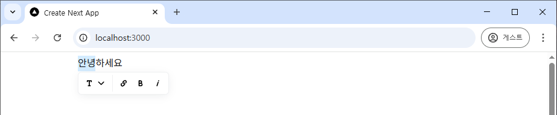
블록을 잡으면 진하게 등을 설정할 수 있게 된다.
configuration
EditorJS() 에 문자열을 넘기면 div의 id에 넣어주는 holder가 되지만 이렇게는 쓰지 않고 다양한 설정들을 담아 넣어줘야 한다.
// app/editor.tsx
import EditorJS, {EditorConfig} from '@editorjs/editorjs';
EditConfig를 추가하고 이 타입 객체를 EditorJS() 안에 파라미터로 넣어준다.
// app/editor.tsx
const editor = new EditorJS(
{
holder: 'editorjs'
}
);
이런 식으로 값을 넣어줄 수도 있지만, 아래처럼 EditorConfig 객체를 만들어 넣어주겠다.
// app/editor.tsx
const editorConfig: EditorConfig =
{
holder: 'editorjs'
}
const editor = new EditorJS(editorConfig);
이제 holder와 같은 옵션을 눌려주며 에디터를 설정해 간다.
// app/editor.tsx
const editorConfig: EditorConfig =
{
holder: 'editorjs',
placeholder: '여기에 글자 입력',
}
const editor = new EditorJS(editorConfig);

heading 플러그인
먼저 header 플러그인을 설치하자.
npm install @editorjs/header
// app/editor.tsx
import Header from '@editorjs/header';
아래와 같이 설정하면 H1, H2 등을 설정할 수 있게 된다.
// app/editor.tsx
const editorConfig: EditorConfig =
{
holder: 'editorjs',
placeholder: '여기에 글자 입력',
tools: {
header: Header
}
};

이렇게 Heading을 설정할 수 있다.

.. 3줄인 버튼을 누르면 Heading 1 ~ Heading 6 까지 선택할 수 있는데, 이걸 바꿔도 글자 크기가 바뀌지 않는다. next.js에서 tailwind css를 사용하기 때문이다.
app/globlas.css 파일안에 h1 ~ h6까지 정의해 줘야 그게 여기에 반영된다.
/* app/globlas.css */
h1 {
color: #333;
font-size: 2.5em;
font-weight: bold;
margin-bottom: 0.5em;
}
h2 {
color: steelblue;
font-size: 2em;
font-weight: bold;
border-bottom: 2px solid steelblue;
margin-top: 1em;
}
h3 {
color: darkgreen;
font-size: 1.75em;
font-weight: bold;
}
h4 {
color: purple;
font-size: 1.5em;
font-weight: bold;
}
h5 {
color: orange;
font-size: 1.25em;
font-weight: bold;
}
h6 {
color: gray;
font-size: 1em;
font-weight: bold;
}

이렇게 글자 크기가 바뀐다.
데이터 저장
// app/editor.tsx
return(
<div>
<button onClick={OnSaveClicked} className='bg-blue-300 p-2'>저장</button>
<div id="editorjs" />
</div>
);
이렇게 저장 버튼을 넣으면 저장할 수 있게 되고, OnSaveClicked 핸들러는
// app/editor.tsx
const OnSaveClicked = async () =>
{
const article = await editor.save();
console.log("article = " , article);
}
와 같이 해 준다. 전체 코드는 다음과 같다.
// app/editor.tsx
"use client";
import EditorJS, {EditorConfig} from '@editorjs/editorjs';
import Header from '@editorjs/header';
import './globals.css';
export default function EditorPage()
{
const OnSaveClicked = async () =>
{
const article = await editor.save();
console.log("article = " , article);
}
const editorConfig: EditorConfig =
{
holder: 'editorjs',
placeholder: '여기에 글자 입력',
tools: {
header: Header
}
};
const editor = new EditorJS(editorConfig);
return(
<div>
<button onClick={OnSaveClicked} className='bg-blue-300 p-2'>저장</button>
<div id="editorjs" />
</div>
);
}
여기서 나온 article의 구조는 다음과 같다.
// app/editor.tsx
const OnSaveClicked = async () =>
{
const article = await editor.save();
console.log("article = " , article);
const json = JSON.stringify(article)
console.log("json = " , json);
}
이 코드로 본 결과는 아래와 같고, 이 값을 DB에 저장하면 된다.
{
"time":1746960562590,
"blocks":[
{"id":"gPa7tDK3Gh","type":"paragraph","data":{"text":"안녕하세요."}}
],
"version":"2.31.0-rc.7"
}
데이터 읽어오기
// app/editor.tsx
const editorConfig: EditorConfig =
{
...생략...
data: {
"time":1746960562590,
"blocks":[
{"id":"gPa7tDK3Gh","type":"paragraph","data":{"text":"안녕하세요."}}
],
"version":"2.31.0-rc.7"
}
};
이렇게 data 항목에 값을 위 article 에서 본 형식으로 값을 세팅하면 컴퍼넌트가 나오면서 이 값이 보여진다.
리스트 플러그인
설치
npm install @editorjs/list
아래와 같이 모듈을 사용한다.
// app/editor.tsx
import EditorjsList from '@editorjs/list';
이제 list를 추가한다.
tools: {
header: Header,
list:
{
EditorjsList
}
},
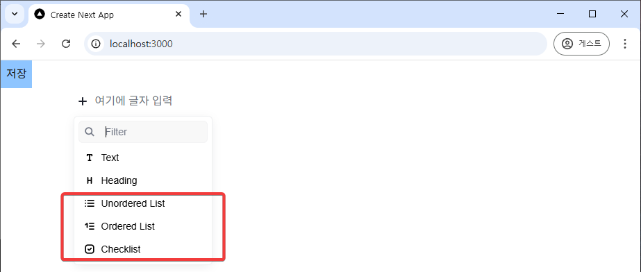
이미지 플러그인
paste를 통해서만 이미지를 추가할 수 있는 간단 버전.
editor.tsx:19 json = {"time":1746963981205,"blocks":[{"id":"CMI0iKaAeY","type":"image","data":{"url":"
별도의 이미지 전송 처리같은 거 없이 위에 보이는 것처럼 이미지를 base64 인코딩해서 전송할 수 있어 빠르게 처리할 수 있다. 단점은 파일선택이 불가능하고 paste를 통한 이미지 추가만 가능하다는 거.
설치
npm install @editorjs/simple-image
플러그인 임포트
// app/editor.tsx
import SimpleImage from "@editorjs/simple-image";
// app/editor.tsx
tools: {
header: Header,
list: EditorjsList,
image: SimpleImage
},
tools에 image를 추가한다.
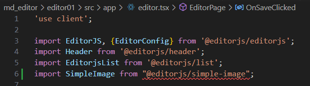
모듈을 제대로 설치해도 이렇게 빨간색으로 나오는데 기능은 동작한다.

문제 해결
F5를 누르면 안나와서 <div id="editorjs" />의 id 값을 바꾸면서 테스트해야 하던 문제 & 한 번에 3줄씩 나오던 문제
// app/editor.tsx
import React, {useEffect} from 'react';
editor 설정 부분을
useEffect(() =>
{
const editor = new EditorJS(editorConfig);
}, []);
과 같이 고쳐 주고 useRef() 훅도 사용해야 한다.
그리고 SSR을 막는 처리도 해줘야 한다.
이렇게 하려면 app/editor_c.tsx 파일을 만들고 그 안에 다음과 같이 코딩한다.
// app/editor_c.tsx
// SSR 을 막고 client에서만 돌아가도록 한다.
'use client';
import dynamic from 'next/dynamic';
import React from 'react';
const DynamicEditor = dynamic(
() => import('./editor'), // Editor 컴포넌트 경로
{ ssr: false } // 서버 측 렌더링 비활성화
);
const MyPage: React.FC = () => {
return (
<DynamicEditor />
);
};
export default MyPage;
여기서 ./editor.tsx 를 import 해서 사용하니, 이제 이 page.tsx에서 이 파일을 읽어 사용하도록 만들어줘야 한다.
// app/page.tsx
import MyPage from "./editor_c";
// import EditorPage from "./editor";
export default function Home() {
return (
<div>
<MyPage />
{/* <EditorPage /> */}
</div>
);
}
build 에러 해결
빌드하면 src/editor.tsx 파일에서 에러가 난다.
PS E:\github-stuousk\nextjstest\md_editor\editor01> npm run build
> editor01@0.1.0 build
> next build
▲ Next.js 15.3.2
Creating an optimized production build ...
✓ Compiled successfully in 0ms
Linting and checking validity of types ..Failed to compile.
Linting and checking validity of types ..../src/app/editor.tsx:7:25
Type error: Could not find a declaration file for module '@editorjs/simple-image'. 'E:/github-stuousk/nextjstest/md_editor/editor01/node_modules/@editorjs/simple-image/dist/simple-image.mjs' implicitly has an 'any' type.
Try `npm i --save-dev @types/editorjs__simple-image` if it exists or add a new declaration (.d.ts) file containing `declare module '@editorjs/simple-image';`
5 | import Header from '@editorjs/header';
6 | import EditorjsList from '@editorjs/list';
> 7 | import SimpleImage from '@editorjs/simple-image';
| ^
8 |
9 | import './globals.css';
10 |
Next.js build worker exited with code: 1 and signal: null
보면 simple-image 플러그인을 읽는데 에러가 나는거다. 기능은 동작하는데. 이 플러그인은 ts 버전도 따로 없다.
Try npm i --save-dev @types/editorjs__simple-image 이거 해도 없다고 나온다. 문제가 해결되지 않는다.
문제 해결은,
/src/types/editorjs_simple-image.d.ts 파일을 만들고, 다음과 같이 한 줄 적어주면 빌드 문제가 해결된다.
// /src/types/editorjs_simple-image.d.ts
declare module "@editorjs/simple-image";
react
프로젝트 생성(typescript로)
npx create-react-app url_mp3_player --template typescript
프로젝트의 모듈 업그레이드
npm update
이래도 안되면
package-lock.json을 지우고 다시 npm update 한다.()
typescript
MDEditor의 change 이벤트 처리

이렇게 onChange에 빨간줄이 나온다. 이게 setState에 걸려 있는데 아무리 해도 해결이 안된다.
이럴 때는 vscode에서 저 onChange 부분을 ctrl + 클릭하면 설명이 나온다.
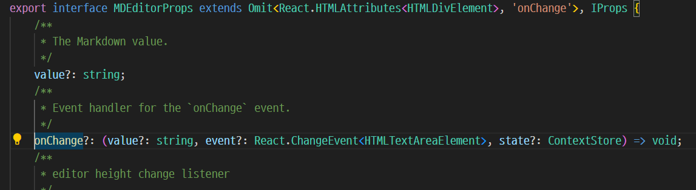
저 부분을 참조해서 함수를 새로 만들고 그 함수 안에서 setState 함수를 호출하도록 한다.
//위 이미지 부분을 이렇게 수정하고,
<MDEditor value={memo} onChange={OnMemoChanged} style={{minWidth:"100%", minHeight:"400px"}} />
// 처리하는 함수의 모양은 아래와 같이.
const OnMemoChanged = (value?: string, event?: React.ChangeEvent<HTMLTextAreaElement>, state?: ContextStore) =>
{
if (value)
setDescript(value);
}
최종적으로는 아래의 모양이 될 거다. event 랑 state 등은 안 써서 eslint에 걸리니까.
const OnMemoChanged = (value?: string) =>
{
if (value)
setDescript(value);
}
html
html named character 목록
https://html.spec.whatwg.org/multipage/named-characters.html
이렇게 표시되어 있는데 속이 빈 별을 md 파일에서 표시하고 싶으면
☆
라고 해주면 된다.
결과는 ☆ 이다.
★
의 결과는 ★ 이다.
대소문자를 가린다.
쓸만한 거
- █ :
█ - ▮:
▮ - ◼ :
◼ - ▪:
▪
settings
세팅파일 만드는 데 사용되는 파일 포맷들
https://velog.io/@jk01019/TOML-VS-YAML
TOML
쓰기 쉽다. 설정파일 만들 때 가장 좋음.
YAML
구조화된 데이터 사용 가능, 조금 복잡할 수도.
JSON
가볍고 처리속도 빠르고 많이 사용. 불편.
mac
윈도우 “COM4“는 맥북에서 어떻게 표현해야 할까
drone.open("COM4")
이 코드는 맥북에서 실행되지 않는다. COM4가 없으니까.
맥북에서 시리얼 통신은 /dev/tty.*의 형태로 표시한다.
현재 연결된 포트를 확인하려면 터미널에서
ls /dev/tty.*
로 한다.
이렇게 하면 여러 개의 /dev/tty.OOOOOOOO 이 나타난다.
이 중 내 기기와 연결되었을 것으로 추정되는 걸 찾아 사용하면 된다.
drone.open("/dev/tty.usbmodem348C3396333241")
과 같은 식이다.
기타
miniconda
miniconda 사용법
references
- https://docs.anaconda.com/working-with-conda/environments
- https://developer-woo.tistory.com/40
새 환경 만들기
conda create -n <ENV_NAME>
새로 만든 환경 활성화
conda activate <ENV_NAME>
파이썬 버전 변경하기
conda install python=3.10.6
AI
LM Studio
Chainlit
LM Studio & chainlit
파이썬 설치
참고자료
pip 를 아래와 같이 uv 방식으로 바꿈. 이제 이 아래부터가 새로 정리한 처음임.
프로젝트 폴더 만들고 프로젝트 생성
e:\test\lmstudio
이 폴더에서 powershell 띄우고 아래의 방법으로 프로젝트 생성
PS E:\test\lmstudio> uv init lm001
프로젝트로 이동
PS E:\test\lmstudio> cd lm001
필요한 패키지 설치: chainlit을 쓰기 위한 준비
PS E:\test\lmstudio\lm001> uv add chainlit openai
파일 다운로드: app.py
https://github.com/Zenulous/local-ai-mcp-chainlit/blob/main/app.py
위 파일을 다운로드 받아
E:\test\lmstudio\lm001\app.py
로 저장한다.
chainlit 실행
PS E:\test\lmstudio\lm001> uv run chainlit run app.py

LM Studio 실행
LLM 다운로드: gemma-3-4B-it-qat-GGUF

다운로드받은 모델을 로드한다.
서버 실행

왼쪽 위 빨간 표시한 것처럼 Status stopped 오른쪽을 클릭해 Status: Running 부분의 오른쪽이 초록색이 되도록 만들면 localhost:1234로 서버가 실행된다.
다시 chainlit으로 가서
hi라고 쳐본다.
 연결이 되면 이렇게 답이 나오고 밑에 모델명도 나온다(Used gemma-3-4b-it-qat 라고)
연결이 되면 이렇게 답이 나오고 밑에 모델명도 나온다(Used gemma-3-4b-it-qat 라고)
만약 lm studio에서 서버를 실행하지 않았다면 아래와 같이 Connection Error라고 나온다.

gemma-3-4b-it-qat는 반응속도가 굉장히 빠르다.
MCP 적용
MCP를 위해 사용할 패키지를 설치한다.
PS E:\test\lmstudio\lm001> uv add requests
MCP 서버 생성
lm001 폴더에 server.py 파일을 생성한다.
# server.py
from mcp.server.fastmcp import FastMCP
# MCP 서버 생성
app = FastMCP("My MCP Server")
# 도구 정의: BMI 계산. AI는 함수명을 보고 유추하는 듯.
@app.tool()
def calculate_bmi(weight: float, height: float) -> float:
return weight / (height ** 2)
# 도구 정의: 두 숫자 더하기
@app.tool()
def add(a: int, b: int) -> int:
return a + b
# 리소스 정의: 사용자 이름에 맞춘 인사말 제공
@app.resource("greeting://{name}")
def get_greeting(name: str) -> str:
return f"Hello, {name}!"
# 서버 실행
if __name__ == "__main__":
app.run()
이 파일이 에러는 없는지 확인한다.
uv run server.py
일단 에러가 나지 않고 실행된 채로 가만히 있으면 큰 문제 없는 거. ctrl+c를 눌러 실행을 종료한다.
chainlit에서 uv 실행할 수 있도록 환경설정
.chainlit / config.toml 파일을 열고
[features.mcp.stdio]
enabled = true
allowed_executables = [ "npx", "uvx", "uv"]
allowed_executables 값에 “uv” 도 추가해준다.
MCP 서버 등록
맨 아래 플러그인 모양 버튼을 눌러 아래 화면에서 다음과 같이 mcp 서버를 등록한다.

- name: test001
- type: stdio
- command: uv run D:\test\lmstudio\lm001\server.py

문제없으면 이렇게 MCP 서버 등록에 성공한다.
MCP 서버에서 제공하는 함수도 아래에 2개 보여진다.

BMI를 물어보면 내가 제공한 함수를 이용해 계산한다.
키는 단위를 m로 줘야 하는구나. cm로 줬더니 이상한 값이 나왔다.
mcp 함수 찾기까지 속도가 굉장히 느리다.
MCP
가장 간단한 형태의 mcp
https://github.com/modelcontextprotocol/python-sdk/blob/main/examples/fastmcp/echo.py
"""
FastMCP Echo Server
"""
from mcp.server.fastmcp import FastMCP
# Create server
mcp = FastMCP("Echo Server")
@mcp.tool()
def echo_tool(text: str) -> str:
"""Echo the input text"""
return text
@mcp.resource("echo://static")
def echo_resource() -> str:
return "Echo!"
@mcp.resource("echo://{text}")
def echo_template(text: str) -> str:
"""Echo the input text"""
return f"Echo: {text}"
@mcp.prompt("echo")
def echo_prompt(text: str) -> str:
return text
그런데 이거 막상 chainlit 에서 MCP 서버로 등록하려하면 에러는 나지 않는데 등록은 안된다. 맨 밑에
# 서버 실행
if __name__ == "__main__":
print("Starting server...")
mcp.run()
이 들어가야 mcp 서버로 추가된다.
MCP의 구조
https://modelcontextprotocol.io/introduction#explore-mcp
MCP primitive 3개
resources
prompts
tools
MCP 상세 소개
https://modelcontextprotocol.io/introduction
공간정보
QGIS
QGIS plugin 개발
공식 문서
https://docs.qgis.org/3.40/ko/docs/pyqgis_developer_cookbook/plugins/index.html
가장 간단한 python 플러그인 샘플
https://github.com/wonder-sk/qgis-minimal-plugin
pyqgis와 plugin 차이
pyqgis는 qgis 내에서 직접 스크립트를 입력해 처리하는 방식
cesium
cesium과 google earth 차이점
from perplexity
Cesium 서비스와 Google Earth의 차이점
기본 개념 및 목적
-
Google Earth
Google Earth는 위성사진, 항공사진, 3D 지형 데이터를 바탕으로 전 세계 지리 정보를 시각화하는 대표적인 3D 지구본 소프트웨어입니다. 주로 일반 사용자와 전문가 모두가 지도 탐색, 위치 검색, 지리 정보 확인, KML 파일 활용 등에 사용합니다. -
Cesium
Cesium은 오픈소스 기반의 웹GL 3D 지구본 엔진으로, 개발자들이 웹, 게임엔진(예: 언리얼 엔진) 등 다양한 환경에서 3D 지리공간 데이터를 시각화하고, 디지털 트윈, 시뮬레이션, 맞춤형 GIS 애플리케이션을 개발할 수 있게 해줍니다[3][4][5].
주요 차이점
| 구분 | Google Earth | Cesium |
|---|---|---|
| 접근 방식 | 완성된 애플리케이션 제공 | 개발용 플랫폼/엔진(웹·게임엔진 통합 가능) |
| 사용자 대상 | 일반 사용자, 전문가 | 개발자, GIS 전문가, 기업 |
| 확장성 | 제한적(KML, 일부 API) | 매우 높음(풀 API, 3D Tiles, 커스텀 데이터) |
| API 지원 | 제한적(COM API, KML 위주) | 강력한 API, 다양한 언어·플랫폼 지원 |
| 커스터마이징 | 제한적 | 자유로운 커스터마이징·플러그인 확장 |
| 데이터 소스 | Google 데이터(위성, 항공, 3D) | 자체 데이터, 오픈스트리트맵, Google Tiles 등 |
| 활용 예시 | 지도 탐색, 위치 검색, 간단한 분석 | 디지털 트윈, 시뮬레이션, 맞춤형 GIS 앱 |
| 엔진 통합 | 불가 | 언리얼 엔진 등 게임엔진과 통합 가능 |
| 상세도 | 매우 높음 | Google Tiles 활용 시 상세도 일부 제한 |
세부 설명
1. 개발 및 확장성
- Google Earth는 완성된 소프트웨어로, 사용자는 주어진 기능 내에서만 활용이 가능합니다. API는 제한적이며, 주로 KML 파일을 통한 데이터 시각화에 머뭅니다[3].
- Cesium은 강력한 API와 3D Tiles 표준을 제공해, 개발자가 웹, 게임엔진(언리얼 등)에서 자유롭게 3D 공간 정보를 커스터마이징하고 확장할 수 있습니다[2][3][5].
2. 데이터 활용 및 통합
- Google Earth는 Google이 제공하는 데이터만 사용 가능하며, 외부 데이터 통합이 제한적입니다.
- Cesium은 자체 데이터뿐 아니라 Google의 3D Tiles, 오픈스트리트맵 등 다양한 소스를 통합할 수 있습니다. 또한 언리얼 엔진 등과 연동해 메타버스, 시뮬레이션 등 다양한 분야에 적용할 수 있습니다[2][5][8].
3. 시각화 및 상세도
- Google Earth는 매우 높은 수준의 3D 상세도를 제공합니다.
- Cesium도 Google Maps API 기반의 3D Tiles를 활용할 수 있지만, Google Earth에 비해 일부 상세도가 떨어질 수 있습니다(특히 언리얼 엔진 등에서)[6].
4. 주요 활용 분야
- Google Earth: 대중적 지도 탐색, 위치 확인, 교육, 간단한 공간 분석.
- Cesium: 디지털 트윈 구축, 공간 정보 기반 메타버스, 시뮬레이션, 맞춤형 GIS 애플리케이션 개발 등[2][4].
요약
- Google Earth는 완성형 지도 서비스로, 누구나 쉽게 사용할 수 있지만 확장성과 커스터마이징이 제한적입니다.
- Cesium은 개발자를 위한 3D 지리공간 시각화 플랫폼으로, 다양한 데이터 통합과 강력한 커스터마이징, 게임엔진 연동이 가능합니다.
- Google Earth가 “사용자 중심의 지도 서비스“라면, Cesium은 “개발자 중심의 3D 공간 정보 플랫폼“입니다[3][5][8].
Citations: [1] https://6sense.com/tech/3d-rendering/googleearthpro-vs-cesium [2] https://blog.naver.com/kcscpr/223153975819 [3] https://community.cesium.com/t/comparing-google-earth-to-cesium/862 [4] https://www.slideshare.net/slideshow/cesium-63d9/272998631 [5] https://nuriarchive.tistory.com/20 [6] https://community.cesium.com/t/google-tiles-in-cesium-less-detailed-than-google-earth/26721 [7] https://6sense.com/tech/3d-rendering/cesium-vs-googleearthpro [8] https://www.toolify.ai/ko/ai-news-kr/5-google-api-cesium-pt-1-992576
Perplexity로부터의 답변: https://www.perplexity.ai/search/cesiumseobiseuwa-google-earth-xKIUx37wRQ2BudWKfkk3Ag?utm_source=copy_output
데이터베이스
postgresql
사용법
docker에 postgresql을 실행한 다음임.
유저 생성
# su - postgres
postgres@963e6c43fae6:~$ psql
psql (17.4 (Debian 17.4-1.pgdg120+2))
Type "help" for help.
postgres=# create user scott password 'tiger';
CREATE ROLE
생성된 유저 보기
postgres=# \du
List of roles
Role name | Attributes
-----------+------------------------------------------------------------
postgres | Superuser, Create role, Create DB, Replication, Bypass RLS
scott |
데이터베이스 생성(한글 잘 나오게)
postgres=# create database test owner scott LC_COLLATE='C.utf8' LC_CTYPE='C.utf8' template=template0;
CREATE DATABASE
scott으로 접속하기
postgres=# exit
postgres@963e6c43fae6:~$ psql -U scott test
psql (17.4 (Debian 17.4-1.pgdg120+2))
Type "help" for help.
test=>
데이터베이스 목록 보기
nextauth=> \l
List of databases
Name | Owner | Encoding | Locale Provider | Collate | Ctype | Locale | ICU Rules | Access privileges
-----------+----------+----------+-----------------+------------+------------+--------+-----------+-----------------------
nextauth | scott | UTF8 | libc | C.utf8 | C.utf8 | | |
postgres | postgres | UTF8 | libc | en_US.utf8 | en_US.utf8 | | |
(4 rows)
테이블 목록 보기
nextauth=> \dt
List of relations
Schema | Name | Type | Owner
--------+--------+-------+-------
public | data | table | scott
public | member | table | scott
(2 rows)
테이블 구조 보기
nextauth=> \d member
Table "public.member"
Column | Type | Collation | Nullable | Default
----------+------------------------+-----------+----------+---------
id | character varying(10) | | not null |
nickname | character varying(10) | | not null |
pwd | character varying(62) | | not null |
email | character varying(100) | | |
Indexes:
"member_pkey" PRIMARY KEY, btree (id)
nextauth=>
postgresql 보안
암호화: pgcrypto
postgresql에서 pgcrypto extenwsion을 설치해 사용.
create extension pgcrypto;
select crypt('password', gen_salt('bf')), gen_salt('bf'), gen_salt('bf') from person
| crypt | gen_salt | gen_salt |
|---|---|---|
| $2a$06$4VKMr06kmf.B2NYsXIo8YuFklgDAN/.d0DtXr8AjAGMTHmZM6zJPi | $2a$06$Pn8VLVjEMdDHGR6Kd8zHou | $2a$06$QVFyuO7KUwHM6ICBkOuKAO |
| $2a$06$z2G9KZTwNtRPRWC5aOGMz.pUQTyhLg8aJzqB9ITQ5Qh2snW8B4vaa | $2a$06$aZOByB.sIkzI1GIvvoJ7ce | $2a$06$msvxhMmuRI6rCkoTurvn9. |
| $2a$06$SEJOY6Fq6sAAODVeF9WQwOiXEYFVDdMVJnjMed/lOyLEwB4nj919O | $2a$06$UQb22zkq9hV0OMDTwFYxzO | $2a$06$shgzHIozenbZt7R7wFcsaO |
| $2a$06$3dGWLx4sW4wA/L1bcoj.L.X3ZT.KNINrTkrJhC2a41ntWuj5rERye | $2a$06$rTj03AOManccUIuI2XIbV. | $2a$06$2GBJ/6jZr1qg0nPgulMdFe |
| $2a$06$4OAARuBSDOZG9MpGee3psOzTiWM7dd20geejE71O9xVA94UqIk04O | $2a$06$/unpztSApPOrMpUFWZPaKO | $2a$06$jkqcmG.zFt43dfnKD4Jmo. |
| $2a$06$o1twjlcnFMbD7Ia2t/maye0QasloFQrH4YJBeP7xwqPO1nQe579pq | $2a$06$v.8anVVjrOqpwVs97AaTWe | $2a$06$5G/yWb9TZd8d9UPHdEdRLO |
| $2a$06$e9yMZYCbRsrzZ.EgFDzDLuWD3/soADwDmOPKV2UYJf8X0NlL8vNYK | $2a$06$N5gsCvmLl5p7h4HqTUo2ce | $2a$06$IxwHaxoJtS.8wtpRSqYxIO |
| $2a$06$KWrWFoDNVV81KGcF3Du0deuLKRRKjjuXCVJxOTd.QuothBzTD5rAa | $2a$06$sn09Y90aC2BIduxLJlTj2O | $2a$06$LnLkctD2dMdOh1OM1sfHq. |
| $2a$06$3YUzaaW8vWerHmlp2oqd3.G2nPEo5RdKTrp.Vsrxinqif2O7iJjDK | $2a$06$OdBQSrm05ATGeVrxna/d5u | $2a$06$8DBvMyAbKjyxLVG0MbAbO. |
get_salt('bf')는 할 때 마다 다 다른 값이 나온다.
이 값을 기반으로 같은 비밀번호라도(여기서는 ‘password’) 해싱값이 다 다르게 나온다. 그래서 보안이 강력해진다.
salt 값을 저장하지 않는 경우
암호화하기
insert into person (id, pwd) values ('X00101', crypt('password', gen_salt('bf')));
암호 검증
select id from person where id ='X00101' and pwd = crypt('password', pwd);
salt 값을 저장하지 않아도 문제없이 로그인을 할 수 있다.
보안이 아래 salt 값을 저장하는 경우보다 떨어진다고 한다.
salt 값을 저장하는 경우
암호화하기
insert into person
(id, pwd, salt)
values
('X00101', crypt('password', gen_salt('bf')), gen_salt('bf'));
암호 검증
select
id
from
person
where
id ='X00101'
and pwd = crypt('password', salt);
이해는 되지 않지만 이렇게 해도 문제없이 로그인을 할 수 있다.
위에서 본 것 처럼 get_salt(‘bf’)를 할 때마다 값이 달라지는데, 왜 salt 값을 저장.. 하는 거야.
https://postgresql.kr/docs/9.6/pgcrypto.html 을 봐도 salt 값을 저장하라는 말은 없다.
perplexity 답:
PostgreSQL pgcrypto 확장 모듈을 이용해 비밀번호를 해시할 때, salt 값을 별도로 저장하지 않는 것이 일반적입니다. 이유는 crypt() 함수가 해시 결과 안에 salt 정보를 함께 포함하기 때문입니다.
비밀번호를 처음 저장할 때는 gen_salt() 함수로 salt를 생성하고, crypt(비밀번호, salt)로 해시를 만듭니다.
이 해시 문자열 안에 salt와 알고리즘 정보가 모두 포함되어 저장됩니다.
로그인 검증 시에는 저장된 해시 값을 salt 인자로 다시 crypt()에 넣어 같은 방식으로 해시를 생성하고, 결과를 비교합니다.
즉, salt를 별도의 컬럼에 저장하지 않고, 해시 문자열 자체에 포함시키는 방식이 표준입니다.
sqlite3
설치
윈도우즈
sqlite3 홈페이지(https://www.sqlite.org/download.html)에 들어가서 툴을 다운로드 받는다.
압축을 풀고 그 폴더를 path에 걸어준다.
indexed db
next.js에서 사용할 때 client component에서만 사용해야 한다.
패키지 설치
indexed db는 브라우저에서 자체적으로 제공하는 기능을 이용하기 때문에 따로 패키지를 설치하지 않는다.
사용 편의성을 높이기 위해 idb 패키지를 설치해 사용하기도 한다.
oracle
oracle db를 podman에서 사용하기
podman pull docker.io/jaspeen/oracle-xe-11g
podman run --name oracle-xe-11g -d -p 1521:1521 jaspeen/oracle-xe-11g
컨테이너 처음 실행하고 2분 정도 기다려야 정상 접속됨.
ls: cannot access /u01/app/oracle/oradata: No such file or directory
Database not initialized. Initializing database.
Setting up:
processes=500
sessions=555
transactions=610
If you want to use different parameters set processes, sessions, transactions env variables and consider this formula:
processes=x
sessions=x*1.1+5
transactions=sessions*1.1
Oracle Database 11g Express Edition Configuration
-------------------------------------------------
This will configure on-boot properties of Oracle Database 11g Express
Edition. The following questions will determine whether the database should
be starting upon system boot, the ports it will use, and the passwords that
will be used for database accounts. Press <Enter> to accept the defaults.
Ctrl-C will abort.
Specify the HTTP port that will be used for Oracle Application Express [8080]:
Specify a port that will be used for the database listener [1521]:
Specify a password to be used for database accounts. Note that the same
password will be used for SYS and SYSTEM. Oracle recommends the use of
different passwords for each database account. This can be done after
initial configuration:
Confirm the password:
Do you want Oracle Database 11g Express Edition to be started on boot (y/n) [y]:
Starting Oracle Net Listener...Done
Configuring database...Done
Starting Oracle Database 11g Express Edition instance...Done
Installation completed successfully.
Database initialized. Please visit http://#containeer:8080/apex to proceed with configuration
Oracle Database 11g Express Edition instance is already started
Database ready to use. Enjoy! ;)
이런 말이 log에 나올 때까지 기다려야 한다.
접속정보
- sid: XE
- 로그인: system / oracle
미리 생성되어 있는 계정 중 HR 사용하기
podman의 컨테이너 터미널에서 다음 실행
root@f422033b47fe:/# sqlplus system/oracle
SQL*Plus: Release 11.2.0.2.0 Production on Thu Jun 26 12:58:53 2025
Copyright (c) 1982, 2011, Oracle. All rights reserved.
Connected to:
Oracle Database 11g Express Edition Release 11.2.0.2.0 - 64bit Production
SQL> ALTER USER HR ACCOUNT UNLOCK;
User altered.
SQL> alter user hr identified by tiger;
User altered.
SQL>
유틸리티
joplin
joplin에서 mdbook으로 넘어온 이유
-
잦은 동기화 오류.
여러 기기에서 사용하다 보니 충돌 폴더가 생기고 그 안에 자꾸 내용이 쌓이고 있어 불안하다.
그리고 작성한 기억이 있는데 동기화 하다보면 사라진 거 같은 느낌이 있다. 아 이건 정확하지 않아 뭐라 하기 어렵긴 하다. -
이미지 처리의 불편함.
이미지가 하나의 폴더에 전부 다 들어간다. 나중에 이 파일 찾기도 어렵다. -
사실 아이패드나 핸드폰에서는 보기만 하지 작성은 하지 않는다. 작성할 일이 있으면 디바이스마다 죄다 다 펜을 사놨는데 그걸로 메모해 놨다가 나중에 다시 mdbook에 적어 넣으면 된다.
-
joplin은 md 표준을 지키지 않는다. 예를 들면 문장 맨 뒤에 space 2개를 넣지 않아도 자동으로 개행이 된다. 나중에 굉장히 난잡한 글을 보게 될 거 같아 걱정스럽다.
-
나는 온전한 md 파일을 내 로컬에 남기고 싶다.
-
mdbook에 대한 일종의 믿음(?)
joplin에서 mdbook으로 넘어올 때 아쉬웠던 점
- joplin은 종단간 암호화 동기화 기능을 지원한다.
- 쉬운 tags, backlinks 기능
- 다양한 플러그인들(하지만 내가 만들어 버리지 모).
podcast
역대 최고 편한 앱은 구글 팟캐스트였지만, 이제 android에서도 podcast를 비교적 쉽게 쓸 수 있게 되었음.
apple이 웹에서 팟캐스트를 지원하기 시작했기 때문.
PC 브라우저에서 너무 잘 됨. 제일 편함. playlist 버튼이 바로 보임. playlist에 (전체) 지우기 버튼이 있음. playlist 내에서 순서바꾸기는 안됨.
android에서는 좀 불편해도 여튼 쓸 수 있음.
web을 app으로 만들기
따로 설명 안함
app으로 사용할 때 문제점

소리가 나고 있는데 아무리 찾아봐도 재생 창이 안 나타난다.
재생창에 playlist 버튼이 있기 때문에 재생 창을 찾아야 한다.
app으로 사용할 때 재생 창 보는 법
화면을 가로로 회전시키면 위에 저렇게 재생 창이 나타난다.

저 빨간 부분을 터치한다.
그럼 이렇게 재생 창이 나타난다. 그런데 여기서 아무리 찾아봐도 playlist 버튼이 안나온다. playlist를 보려면 다시 원래대로 세로로 회전시키면 된다.

** 2024. 12. 1. 추가 **
1, 2주 전부터 이제 저렇게 회전 회전 하지 않아도 그냥 재생 창이 잘 보인다. 애플이 수정한듯.
powertoys
powerRename 을 이용해 자동으로 확장자 붙이기(inkscape export 후)
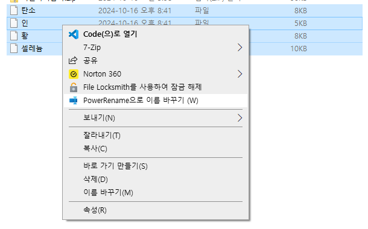
이렇게 설정하면 한 번에 자동으로 확장자를 붙여줄 수 있다.
powerShell
powerShell 버전확인
PS E:\TEST\nextjs> $PSVersionTable
Name Value
---- -----
PSVersion 5.1.19041.5607
PSEdition Desktop
PSCompatibleVersions {1.0, 2.0, 3.0, 4.0...}
BuildVersion 10.0.19041.5607
CLRVersion 4.0.30319.42000
WSManStackVersion 3.0
PSRemotingProtocolVersion 2.3
SerializationVersion 1.1.0.1
powerShell 최신버전 확인
PS E:\TEST\nextjs> winget search Microsoft.PowerShell
'msstore' 원본을 사용하려면 다음 계약을 확인해야 합니다.
Terms of Transaction: https://aka.ms/microsoft-store-terms-of-transaction
원본이 제대로 작동하려면 현재 컴퓨터의 두 글자 지리적 지역을 백 엔드 서비스로 보내야 합니다(예: "미국").
모든 원본 사용 약관에 동의하십니까?
[Y] 예 [N] 아니요: y
이름 장치 ID 버전 원본
---------------------------------------------------------------
PowerShell Microsoft.PowerShell 7.5.0.0 winget
PowerShell Preview Microsoft.PowerShell.Preview 7.6.0.3 winget
powerShell 최신버전 설치
PS E:\TEST\nextjs> winget install Microsoft.PowerShell
찾음 PowerShell [Microsoft.PowerShell] 버전 7.5.0.0
이 응용 프로그램의 라이선스는 그 소유자가 사용자에게 부여했습니다.
Microsoft는 타사 패키지에 대한 책임을 지지 않고 라이선스를 부여하지도 않습니다.
다운로드 중 https://github.com/PowerShell/PowerShell/releases/download/v7.5.0/PowerShell-7.5.0-win-x64.msi
██████████████████████████████ 107 MB / 107 MB
설치 관리자 해시를 확인했습니다.
패키지 설치를 시작하는 중...
설치 성공
이렇게 설치하면 기존 파란 화면의 powerShell이 남아있고 검은 화면의 PowerShell 7이 생겨남. PowerShell 7이 지금 새로 설치한 것임.
utf-8 사용
utf-8을 사용하려면 아래를 ps에 복붙하면 된다.
$env:LC_ALL='C.UTF-8'
[System.Console]::InputEncoding = [System.Console]::OutputEncoding = [System.Text.Encoding]::UTF8
libre office
libre office에서 만든 문서를 inDesign에서 가져오기 하면 가져오기 에러가 나는 이유: libre office에서 이미지에 투명도를 설정해 줬기 때문.
노트
노트 혹은 메모하는 방법 정리.
노트를 위한 폴더 만드는 법
예를 들어,
- 노트
+– MDBook
+– MKDocs
+– HUGO
와 같은 식으로 메뉴를 만들고 싶다면, 폴더도 저런 식으로 만들고 싶어진다.
그런데 폴더는 저런 식으로 만들면 안 된다.
폴더 자체는,
/노트
/MDBook
/MKDocs
/HUGO
로 각각 4개를 만들고, summary.md 파일처럼 목록을 정해주는 곳에서
메뉴 구성만
- 노트
+– MDBook
+– MKDocs
+– HUGO
sub category 구조로 해줘야 한다.
대부분의 컨텐츠는 한 category에만 속하지 않고 여러 category에 걸쳐 속해 있기 때문이다. 그래서 나중에 폴더 구조를 바꿔야 할 때도 있는데 그 때 변경을 쉽게 하려면 컨텐츠 폴더는 각각 만들고 목록 정해주는 파일만 고쳐주면 되도록 준비해 놔야 한다.
지금 이미 note 밑에 MDBook 폴더를 만들어 놔서 이거 어떻게 다 고칠지 걱정이다. MDBook은 그냥 note 폴더에 놔둘까…
mdbook
기본 사용법
- 공식: https://rust-lang.github.io/mdBook/guide/installation.html
- 블로그: https://piatoss3612.tistory.com/105
프로젝트 생성
mdbook init <프로젝트명>
프로젝트 실시간 보기
cd <프로젝트명>
mdbook serve --open
만약 포트번호를 3000번이 아닌 다른 번호(3001)로 주고 싶으면
mdbook serve --open -p 3001
과 같이 한다.
프로젝트 build
mdbook build
기본적으로 <프로젝트명>/build 디렉토리에 결과물이 저장된다.
그래서 mdbook init을 통해 자체 생산되는(optional) .gitignore 파일을 보면 book 디렉토리가 git ignore 되도록 하고 있다.
mdbook update
cargo install mdbook
...
Replaced package `mdbook v0.4.40` with `mdbook v0.4.43` (executable `mdbook.exe`)
한글 검색이 안됨.
한글 검색 되게 하려면
이런 작업$$task$$들은 식으로 영문도 옆에 적어두고 뭐 치환하라는데 장난하냐. 한글 검색 안 되어서 쓸모가 없어지네.
extensions
mdbook-backlinks
https://crates.io/crates/mdbook-backlinks/0.2.7
backlink를 걸어줌.
mkdocs
nav에서 섹션을 클릭했을 때도 문서가 열리도록
theme features에 navigation.indexes하면 된다.
theme 디자인 건들지 않고 수정
이거 보고 함. material theme github. https://squidfunk.github.io/mkdocs-material/customization/#additional-css
mkdocs는 theme의 css도 수정할 수 있게 했다.
style.css 파일이 theme의 css를 customizing 하고 있다.
mkdocs.yml 파일
theme:
name: material
extra_css:
- style.css
이렇게 수정하고, docs 폴더에 style.css 파일을 두면 된다.
style.css 파일
@font-face {
font-family: 'Nanum Gothic';
font-style: normal;
font-weight: 400;
src: url(./fonts/NanumGothic/NanumGothic-Regular.eot);
src: url(./fonts/NanumGothic/NanumGothic-Regular.eot?#iefix) format('embedded-opentype'),
url(./fonts/NanumGothic/NanumGothic-Regular.woff2) format('woff2'),
url(./fonts/NanumGothic/NanumGothic-Regular.woff) format('woff'),
url(./fonts/NanumGothic/NanumGothic-Regular.ttf) format('truetype');
}
@font-face {
font-family: 'Nanum Gothic Bold';
font-style: normal;
font-weight: 700;
src: url(./fonts/NanumGothic/NanumGothic-Bold.eot);
src: url(./fonts/NanumGothic/NanumGothic-Bold.eot?#iefix) format('embedded-opentype'),
url(./fonts/NanumGothic/NanumGothic-Bold.woff2) format('woff2'),
url(./fonts/NanumGothic/NanumGothic-Bold.woff) format('woff'),
url(./fonts/NanumGothic/NanumGothic-Bold.ttf) format('truetype');
}
@font-face {
font-family: 'Nanum Gothic exBold';
font-style: normal;
font-weight: 800;
src: url(./fonts/NanumGothic/NanumGothic-ExtraBold.eot);
src: url(./fonts/NanumGothic/NanumGothic-ExtraBold.eot?#iefix) format('embedded-opentype'),
url(./fonts/NanumGothic/NanumGothic-ExtraBold.woff2) format('woff2'),
url(./fonts/NanumGothic/NanumGothic-ExtraBold.woff) format('woff'),
url(./fonts/NanumGothic/NanumGothic-ExtraBold.ttf) format('truetype');
}
@font-face {
font-family: 'JalnanGothic';
src: url('https://cdn.jsdelivr.net/gh/projectnoonnu/noonfonts_231029@1.1/JalnanGothic.woff') format('woff');
}
h1
{
font-family: 'Nanum Gothic exBold';
/*font-size: large;*/
/*color: red;*/
font-weight:bolder;
}
h2
{
font-family: 'Nanum Gothic exBold';
/*color: red;*/
font-weight:bolder;
}
h3
{
font-family: 'Nanum Gothic exBold';
/*color: green;*/
font-weight: bolder;
}
p
{
font-family: 'Nanum Gothic', sans-serif;
font-weight:400;
}

h1은 아마도 색을 미리 정해 놓았나보다. 맨 위가 h1인데 css로는 글자색을 바꿀 수 없음. 폰트만 바꿀 수 있다. h2, h3를 전부 나눔고딕 extra bold로 해 놓았는데 잘 되고 있다.
hugo
- theme가 없으면 not found page 에러가 난다.
mindmap
markdown 파일을 mm(freemind, freeplane) 으로 바꾸기
https://github.com/unhurried/md-to-mm
여기서 markdown 파일을 freemind나 freeplane에서 사용하는 mm파일로 바꿀 수 있다.
freeplane이 freemind를 fork한 거다.
pandoc
LaTeX
LaTeX
LaTeX
LaTeX 설치
1. perl 설치
LaTeX Build는 Perl로 이루어진다.
strawberry perl 설치해 사용함.
2. vscode extension 중 LaTeX Workshop 설치
LuaLaTeX를 사용하려면 여기를 눌러 vscode를 세팅해야 함.
3. LaTeX Live 설치
https://www.tug.org/texlive/windows.html#install
엄청 오래 걸림.
Visual Studio Code에서 lualatex 사용하기
LaTeX는 기본적으로 시스템에 설치된 true type 글꼴을 지원하지 않기 때문에 lualatex를 사용해야 한다. lualatex는 기본적으로 한글을 지원한다(utf-8)
vscode에서 LaTeX workshop 익스텐션을 설치한 상태에서 lualatex를 사용하려면 다음과 같이 해야 한다.
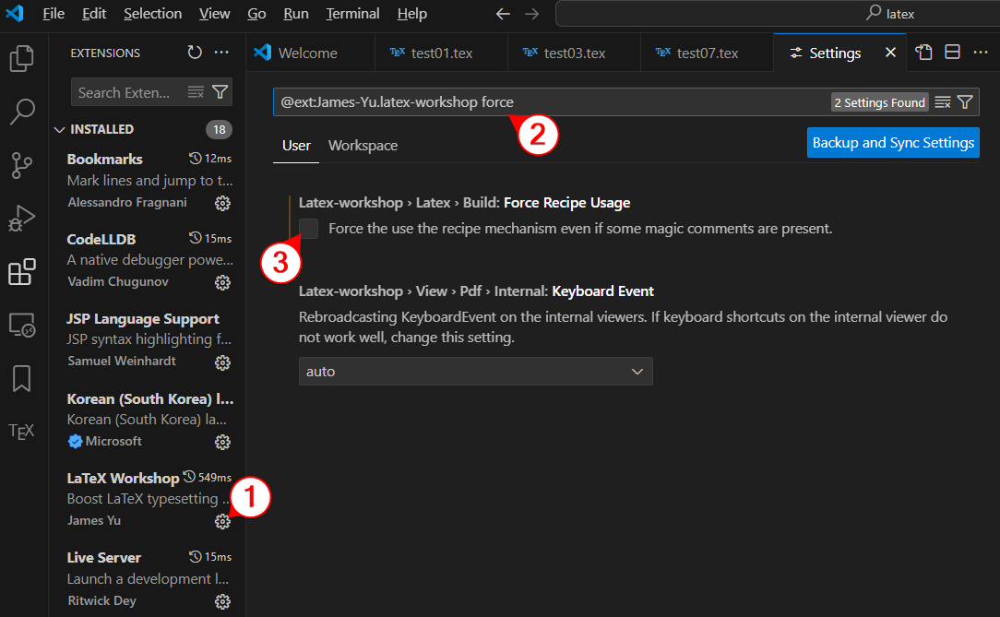
-
설치한 LaTeX Workshop 익스텐션을 찾아 톱니바퀴를 누른다.
-
settings가 나오면 검색창 뒤에 ’force’를 붙여
LaTeX-Workshop > Latex > Build: Force Recipe Usage항목을 찾는다. -
디폴트로 체크되어 있는건데, 이 체크를 풀어준다(체크 표시가 없어져야 함). 매직 커멘트를 적어놔도 무시하고 recipe를 무조건 쓰겠다는 옵션인데 우리는 매직 커멘트를 쓸 것이기 때문.
-
vscode를 닫고 다시 실행한다.
-
.tex 파일의 맨 위에 아래 매직 커멘트를 붙인다.
% !TEX TS-program = lualatex가장 간단한 전체 코드는 다음과 같다.
% !TEX TS-program = lualatex \documentclass{article} \usepackage{fontspec} \setmainfont{Nanum Gothic} \begin{document} 한글도 잘 된다. 이제 나눔고딕 글꼴을 기본 글꼴로 사용할 수 있다. \end{document} -
빌드(Ctrl + Alt + B)해서 확인한다.

소스코드 보이기
lualatex 이용해 소스코드 보여주는 방법

[LaTeX 코드]
% !TEX TS−program = lualatex
\documentclass{article}
\usepackage{listings} % 코드 목록을 위한 패키지
\usepackage{tcolorbox} % 색상을 사용하기 위한 패키지
\usepackage{caption} % 캡션 설정
\usepackage{fontspec} % TTF 사용위한 패키지
\setmainfont{Nanum Gothic}
% D2Coding 폰트 설정
\newfontfamily{\DTwoCoding}{D2Coding}
% 색상 정의
\definecolor{codegreen}{rgb}{0,0.6,0}
\definecolor{codegray}{rgb}{0.5,0.5,0.5}
\definecolor{codepurple}{rgb}{0.58,0,0.82}
\definecolor{backcolour}{rgb}{0.9,0.9,0.9}
% 캡션 설정
\captionsetup{
justification=raggedright, % 코드 캡션을 왼쪽 정렬로 설정
singlelinecheck=false,
labelformat=empty, % 앞에 Listing 1: 을 사용하지 않음
font=small % 글씨 크기를 작게. small 등 사용 가능
}
% listings 스타일 설정
\lstdefinestyle{mystyle}{
basicstyle=\DTwoCoding \normalsize, % D2Coding 폰트를 사용. 글씨크기 보통
%numbers=left, % 줄 번호 위치
numberstyle=\small, % 줄 번호 스타일
keywordstyle=\color{blue}, % 키워드 스타일
commentstyle=\color{codegreen}, % 주석 스타일
stringstyle=\color{purple}, % 문자열 스타일
backgroundcolor=\color{backcolour}, % 배경색
breaklines=true, % 자동 줄 바꿈
showstringspaces=false, % 문자열 내 빈 칸 기호 표시 비활성화
xleftmargin=0pt, % 왼쪽 여백
frame=single, % 코드 블록에 테두리 추가
framerule=0pt, % 테두리 두께 설정 (1pt)
rulecolor=\color{gray}, % 테두리 색상 설정 파란색()
framesep=10pt, % 테두리와 블록 사이의 간격
lineskip=2pt, % 줄 간격 설정
keepspaces=true,
columns=fullflexible, % 유니코드 문자 정렬 문제 해결
inputencoding=utf8, % UTF−8 인코딩
}
\begin{document}
\lstset{style=mystyle} % 정의한 스타일을 사용 설정
%\begin{tcolorbox}[colback=white, colframe=black, title=Python Example, boxrule=0.5mm, left=5mm,right=5mm, top=5mm, bottom=5mm]
\begin{lstlisting}[language=Python, caption = 파이썬 샘플2]
# This is a sample Python code
def hello_world():
print("Hello, World!")
hello_world()
\end{lstlisting}
%\end{tcolorbox}
\end{document}
위 코드는 다른 문제도 있다.

lstlistring 안에 한글과 영문이 한꺼번에 붙어 있으면 순서가 엉망이 된다. 하.
caption=파이썬 샘플 2 인데 이게 caption파이썬= 샘플2가 된다.
tkiz
한 각의 각도를 표시한 삼각형
[triangle.tex]
\documentclass{article}
\usepackage{tikz}
\usetikzlibrary{angles,quotes} % 각도 표시를 위한 라이브러리
\begin{document}
\begin{tikzpicture}
% 원점을 기준으로 첫 번째 선 그리기
\draw[thick] (0,0) -- (5,0);
% 두 번째 선을 37.5도 각도로 그리기
\draw[thick] (0,0) -- ++(37.5:5) -- (5,0);
% 각도 표시
\draw[thick] (0.8,0) arc [start angle=0, end angle=37.5, radius=0.8];
\node at (1.3,0.4) {37.5$^\circ$};
\end{tikzpicture}
\end{document}
결과
3줄일기
하루 딱 3줄만 쓰는 일기
일본 고바야시 히로유키라는 정신과 의사가 고안했다고 함. 책도 있음.
관련 글: https://m.blog.naver.com/28belbong2/222677002193
방법이 다양하다.
- 가장 안 좋았던 일 / 가장 좋았던 일 / 내일 계획 | 안 / 좋 / 내
- 가장 잘 한일 / 가장 못한 일 / 내일 계획 | 잘 / 못 / 내
- 가장 인상깊었던 일 / 그에 대한 나의 감정 / 내일의 다짐| | 인 / 감 / 내
책에 적혀 있는 방법은 1번 방법이다.
최대한 간단하게 써야 한다 함.
정신건강, 삶의 방향을 관리할 수 있다고.
pdf 내용 수정하기
pdf 읽어들여 수정 - inkscape
pdf 파일을 inkscape에서 읽어들인다. inkscape 1.4.2 사용


첫 페이지는 빈 페이지고 그 다음 페이지부터 pdf 파일의 내용이 보여진다.
inkscape를 이용해 내용을 마음껏 수정한다.
그리고 내보내기를 하면서 ‘페이지’ 탭을 선택한 후
- single file 선택
- 페이지 선택
- 확장자를 ’pdf’로 변경하면 여러 페이지를 선택할 수 있다.
- 저장될 파일명을 선택하고
- 저장할 페이지들을 선택한다.
여기서 page1은 선택을 풀어준다. 이 페이지는 맨 처음 앱을 실행할 때 만들어져 있던 페이지로 내용이 비어있다.
이제 ‘내보내기’ 버튼을 누르면 하나의 완성된 파일이 만들어진다.
마케팅
팔지마라. 해결해줘라
https://www.linkedin.com/feed/update/urn:li:activity:7264963259730976768
팔지 말고 그들의 문제점을 해결해 줘라.
콘텐츠
저작권
유튜브 링크를 걸면 저작권 위반인지에 대한 대법원 판결
유튜브 등 링크를 무단으로 걸면 저작권 등 침해일까?
https://www.youtube.com/watch?v=lqaJvTl5oZA
대법원 2015. 3. 12. 판결에서 경로를 나타낸 것에 불과하여 저작권 침해가 아니라고 판결.
유튜브
유튜브에서 광고 허용 요청
brave browser 쓰는 데 2024. 12. 21.에 이 메시지 처음 보여줌.

팟캐스트
팟캐스트 릴리즈
github pages를 이용해 릴리즈 하는 경우 많다 함.
rss.xml
mdbook으로 rss를 생성하는 방법
1. mdbook-rss 설치
cargo install mdbook-rss
2. markdown 파일 위에 메타데이터 추가
---
title: "에피소드 제목"
pub_date: "2024-05-06"
author: "저자 이름"
url: "https://example.com/episode-url"
description: "에피소드 설명"
---
3. book.toml 파일에 mdbook-rss를 프리프로세서로 추가
4. mdbook build 하면 bool\rss.xml 파일이 생성됨.
자격증
버스(1종 대형 면허)
1종 대형 면허증을 따는 방법에 대해 많은 글들이 있지만 아래 몇 개만 제대로 보면 된다.
1. 전체 진행 파악
2. 코스 및 점수 내역 파악
내가 응시할 면허 시험장의 코스가 있는지 찾아보는 것도 필요함.
3. 인천면허 시험장 실제 시험 영상보고 실제 시험 감각 잡기
이 영상까지 보면 아 시험을 이렇게 보는구나 싶은데 각 코스마다 실제로 어떻게 해야 통과하는지는 알 수 없다. 버스 운전은 자가용 자동차 운전과는 좀 다르니까. 아래 4번의 글을 보고 일종의 공식같은 걸 외우면 된다. 이런 공식이 왜 필요해라고 생각할 수 있는데, 공식이라기 보다는 거의 유일한 방법이라 생각하자.
4. 1종 대형 코스별 통과 요령 숙지
https://m.blog.naver.com/jakejeong/221551323349
원본은 어디에 있는지 모르겠음. 암튼 위 사이트에서 “1종대형 코스별 통과요령(1).pdf” 와 같은 pdf 파일 5개를 다운로드받아 보면 시험 과정을 모두 확인할 수 있다.
5. 인천면허 시험장 실제 시험 영상보고 실제 시험 해 보기
영상을 틀어놓고 4의 1종 대형 코스별 통과 요령 pdf 파일을 보면서 각 코스를 같이 진행한다.
6. 시뮬레이션
OMSI2로 한다 함.
청주 면허시험장 맵을 공유하는 사람들도 있음.
전북면허시험장
코스의 노란선은 잘 보인다.
클러치를 완전히 다 올려야 차가 움직인다. 그래서 반클러치가 없다.
오늘 떨어진 이유도 이 때문.
처음 시작하자마자 20초 동안 차를 움직이지 못해 벌점 5점 먹었다. 기어를 몇 번이나 다시 넣고 엄청 놀람.
경사로에서 힘들 거 같다.
<<<<<<< HEAD
전북면허시험장 1종 대형은 대우 NEW BS106을 사용한다고 한다.(나무위키)
동영상
이 영상 끝에 드론에서 내려다 본 영상 나옴.
1330d4736a5d0cec2bc699f381e358a95d825a60
버스 조작
- 반 클러치 안 됨. 앞으로 가려면 발에서 클러치를 완전히 떼야 함.
- 기어

- R 놓을 때 레버 위로 올리는 거 없음. 그냥 R로 가면 됨.
- 비상등: 오른쪽 레버 위로 올리면 켜지고, 내리면 꺼진다.
좋은 점
처음 시작할 때 코스를 한 번에 해버려서 시간을 더 절약할 수 있고, S코스를 오른쪽에 바로 붙여서 들어갈 수 있어 통과할 확률이 훨씬 높아졌다.
나쁜 점
그지같은 버스. 반클러치를 할 수가 없다.
떨어진 이유
1차(전체 2차)
이유
- 여기 버스는 반클러치를 할 수가 없다. 클러치에서 발을 떼야 차가 앞으로 간다. 반클러치 성공 못함. 이러다 20초 내에 출발 못해서 5점 깎이면서 엄청 당황함.
- 굴절에서 떨어짐. 바퀴를 11자로 놓아야 할 때 핸들을 완전히 오른쪽으로 돌려버려 차가 완전히 이상하게 가버렸다.
반성, 할 일, 기대
- 여태까지는 경험이었지만 이제부터는 실전이다. 준비 제대로 해서 가자.
- 마인드 트레이닝 확실히 해가자. 굴절에서 후진 시 핸들을 완전히 오른쪽으로 돌려버릴 줄이야.
- 기어 외워 가자.
- 다음은 꼭 코스 통과까지 가자.
2차(전체 3차)
이유
- 코스는 다 통과했으나 속도가 느려서 굴절에서 5점, T자에서 5점(이상), 횡단보도에서 2m 앞 쯤에서 멈춰섰다고 한다.
- T자 끝나고 횡단보도가 이렇게 빨리 나올 줄 몰랐는데 횡단보도가 나와서 당황한 것도 있다.
반성
- 시간이 오래 걸린 건 클러치 때문인데 반 클러치가 안 되기 때문이다.
- 볼록거울 잘 보고 횡단보도 거의 직전에 멈춰서자. 이렇게 빨리 멈추면 사거리에서 무조건 떨어진다.
3차(전체 4차)
- 버스가 2대 있다. 그 중 2호차는 반클러치가 된다. 3호차랑 클러치가 다르다.
이유
- 굴절에서 검지선 건드림 5점. 시간 초과 5점
- T코스에서 시간 초과 5점.
- 실격. 연석 건드림. 첫번째 교차로에서 1단 출발한 다음 2단으로 기어 안 들어감. 다시 1단으로도 안 들어감. 2단은 구멍을 못 찾은 느낌이고 1단은 드르르르 소리가 남. 기어 바꾸는 거 신경쓰느라 첫번쨰 교차로 지난 후 만난 우회전 길에서 크게 안 돌아 연석 건드림.
반성
- 기어 안 들어가면 브레이크를 밟으라는 사람도 있고 클러치에서 발을 떼야 한다는 사람도 있었음. 기어 변속 구간 연습을 위해, 그 전에 돌면서 기어 바꿀 때 브레이크를 밟아야 할 지 클러치에서 발을 떼야 할지 테스트해봐야 함.
- 굴절에서 검지선 건드린 이유는 왼쪽으로 바짝 붙지 않아서임. 왼쪽으로 바짝 붙자.
- T코스에서 확인되었습니다 듣고 왼쪽으로 최대한 틀어서 간 후 후진하지 않고 그냥 바로 우회전 했는데 검지선 안 건드림.
4차(전체 5차)
- 3호차를 타게 됨. 접수순으로 시험보나 봄.
이유
- 굴절에서 검지선 2번 건드림 10점. 시간 초과 5점
- T코스에서 시간 초과 5점.
- 실격. 연석 건드림. 3차와 같은 곳.
반성
- 3호차는 기어 2단 잘 들어갔음.
- 3차에서 떨어진 이유를 남 탓 했음. 기어 안들어가서 그거 신경 쓰느라 크게 안 돌았다고. 그런데 나는 그냥 신경을 안 쓰고 있으면 크게 돌아도 핸들을 너무 빨리 푸는 사람이었음. 90도 우회전할 때 크게 돌고 난 후에 사이드미러 보면서 핸들을 천천히 풀어야 하는데 자가용 차처럼 빨리 풀어버림. 그냥 내 탓이었음. 처음엔 천천히 돌다가 금방 잊어버리고 빨리 푸는 듯 함. 다음엔 꼭 핸들 천천히 풀자.
- 아마도 핸들 1자로 놓는 걸 하지 않은 듯 함. 하다보니 핸들을 덜 풀은 상태였음. 시간은 초과하지 않았음. 곡선끝났을 때 3분 40초 정도. 핸들 푸는 거 신경쓰자.
5차(전체 6차)
- 3호차를 타게 됨. 가나다순으로 시험보나 봄.
이유
- 굴절에서 검지선 2번 건드림 10점. 시간 초과 5점
- T코스에서 시간 초과 5점.
- 횡단보도에서 멀리 떨어진 곳에서 멈춰서 5점 감점 꽤 바짝붙었었는데. 물어보니 기울어져서 들어와서 센서가 인식하지 못했던 거라 함.
부동산
임대
계약일보다 한 달 후에 임차인이 나간 경우
예를 들어, 2024. 12. 31.까지 계약인데 1달 더 살아 2025. 1. 31.까지 살고, 새 임차인 계약 시작일이 2025. 2. 1.라면
rent home에 등록할 때, 다음과 같이 함.
-
1년 이하 계약: 상관없음. 그냥 그 한 달은 비워놓고 신고하면 됨.
-
2년 계약
- 만기일 이전에 새 임차인 계약: 상관없음. 그냥 그 한 달은 비워놓고 신고하면 됨.
- 만기일 이후에 새 임차인 계약: 다음 둘 중 하나 선택(빨리 해야 함)
- 새로 1달짜리 계약서를 쓰고 신고.
- 연장에 대한 묵시적 갱신으로 신고.
취미
그림그리기
클립스튜디오 1 ex 마스크 사용법
https://youtu.be/uQFVh0jNMiE
그림그리기
시계만들기
초침규격
다양한 초침 파는 곳: https://www.coupang.com/vp/products/7616826975?itemId=20184919564
내가 주로 쓰는 스즈끼 규격
https://www.coupang.com/vp/products/6750290910?itemId=15785648375
- 시 바늘: 5.2mm
- 분 바늘: 3.4mm
8inch x 8inch 액자 안에 넣는 경우
중점에서 최대 가로폭까지 거리가 90mm(최대 95mm까지는 될 듯)
4inch x 4inch 액자 안에 넣는 경우
https://www.coupang.com/vp/products/6266572371?itemId=12791318654
중점에서 최대 가로폭까지 거리가 45mm
피아노
프로그램 설치
-
무료 analog lab 프로그램 설치:
- https://www.arturia.com/products/software-instruments/analoglab/free
- 하지만 이 프로그램은 아래 설치할 ASC에서 설치하도록 하자.
-
ASC(Arturia Software Center) 설치:
- https://www.arturia.com/fr/support/downloads-manuals
- 그리고 이 안에서 MIDI Control Center를 설치하면 드라이버가 설치되고 펌웨어 버전과 업데이트도 자동으로 할 수 있다.
관련 Youtube Video
https://www.youtube.com/watch?v=490krwG0qDk
firmware upgrade
ASC(Arturia Software Center)를 설치한 다음, MIDI Control Center를 설치하면 현재 펌웨어 버전을 보여준다.
이 프로그램에서 최신 버전을 자동으로 다운로드받아 설치할 수 있다.

펌웨어 버전을 누르면 창이 나오는데 가운데에 지금은 최신 버전으로 펌웨어 업그레이드 되어 안 보이는 버튼이 하나 나타나는데, “Download latest” 버튼이다. 그걸 누르면 자동으로 펌웨어를 다운로드받고 설치한다.
가만 놔두면 불빛이 번쩍번쩍거린다.
MIDI Control Center에서 Device Settings로 들어가 Vegas Mode를 “disable” 로 바꾼다.
관련 글: https://legacy-forum.arturia.com/index.php?topic=95080.0
매뉴얼
keylab-essential_Manual_1_0_0_EN.pdf
다운로드 URL: https://downloads.arturia.com/products/keylab-essential-49/manual/keylab-essential_Manual_1_0_0_EN.pdf
아이패드와 연결
keylab 61과 아이패드를 연결하는 방법을 찾아보니 3가지 방법이 나옴.
1. OTG 케이블
https://www.coupang.com/vp/products/7685325978?itemId=20536740130

이걸 쓰면 직접 연결할 수 있을 거 같다.
3미터면 너무 긴데.. 하면서 다른 걸 찾아봄. (짧은 걸 못 잦음)
2 OTG 변환잭
https://www.coupang.com/vp/products/7345042735?itemId=18887847704
음.. 웬지 믿음이 안 감.
3. 미디 연결 케이블
https://www.coupang.com/vp/products/5320283335?itemId=7736124268

이 제품으로 구입했음.
이렇게 되면 keylab 61의 usb 포트에서 PC가 아닌 이 장비로 연결해야 하기 때문에 전원 공급을 신경써야 함. 이 장비에 충전 포트가 있는데 전원이 아이패드로만 갈지 아니면 keylab 61로도 전달될지 궁금. 만약 keylab 61로 전원 공급이 안되면 별도의 아답터(전원 공급) 를 써야 함.
2024. 11. 18.(월)
택배 도착함.


저 사진과 다른 게 옴. 약간만 다르고 기본적인 건 다 똑같다.
충전하는 포트는 8핀이다.
keylab 61 usb 포트에 꽂은 케이블을 왼쪽 usb 포트에 연결하니 바로 keylab 61에 전원이 공급된다. 아이패드의 전원을 쓰는 거다. 헐.
오른쪽 충전포트에도 8핀 꽂았더니 아이패드 바로 충전된다. 와우.
그런데 내 충전기가 약한 건지 충전 중인데도 피아노를 계속 치고 있으면 아이패드 배터리 잔량이 내려가고 피아노 안 치고 그냥 그대로 놔두고 있으면 배터리 잔량이 올라간다.
잘된다. latency도 거의 느껴지지 않는다.
keylab 61 버튼 몇개가 KORG module과 연결된다.
처음엔 velocity 강약을 맞추기가 어려웠는데, KORG module의 velocity curve를 light로 고치니 손에 딱 맞는다. 기본인 velocity curve: normal인 상태일 때는 썌게 쳐야 소리가 크게 나고 약하게 치면 소리가 아예 안 났는데 light 로 고치니 어느 정도 약하게 치면 어느 정도 누른 상태로 약하게 인식하고 쎄게 치면 쎄게 인식해서 딱 좋다.
아답터 안 사도 되서 좋다.
manual


전원 공급
arturia KeyLab 61 Essential의 전원 공급 방법은 2가지임.
1. USB를 통한 전원공급
PC와 USB(B타입)로 연결하면 자동으로 전원이 공급됨.
2. DC 아답터 이용
매뉴얼에 9V 0.5A를 연결하라고 되어 있음. 안쪽이 플러스 바깥쪽이 마이너스임. 크기는 명시 안되어 있음.
매뉴얼
https://downloads.arturia.com/products/keylab-essential-49/manual/keylab-essential_Manual_1_0_0_EN.pdf
디자인
글꼴
무료 글꼴 주는 곳
상상토끼 글꼴
https://sangsangfont.com/21
윤디자인 나눔 라이선스
https://font.co.kr/collection/detail?pd_idx=10339

캘리그라피용 글꼴
상상토끼 바위체
https://sangsangfont.com/21/?idx=122

상상토끼 신과장
https://sangsangfont.com/21/?idx=102

더페이스샵 잉크립퀴드
https://www.thefaceshop.com/brand/introduction/brand.jsp?tab_seq=1

vector graphics
.AI 파일로 저장하기
affinity
url: https://affinity.serif.com affinity Designer가 .ai로 저장할 수 있었던 거 같다.
sobi@g로 체험판을 신청해 사용해 봄. https://store.serif.com/en-us/account/downloads
직접 사용해 보니 .ai로는 export 할 수 없었음.
지금 블랙프라이데이 50% 할인 기간이지만 사용하지 않겠음.
Assets
아이콘
아이콘 몬스터 https://iconmonstr.com excalidraw : 프로그램 내에서 제공해 주는 아이콘 많음
3D
models
blender
toon shader
shader
그림자 연하게 하기
w1: world 조정
- light를 sun으로 바꾸고 각도를 0도로 해서 fall off가 되지 않도록 한다.
- light의 세기를 5 정도로 작게 한다. world의 밝기에 따라 조정한다.
- world를 밝게 한다. 그림자가 연해진다.
w2: 바닥의 재질을 color ramp로 해서

plane위에 그림자 부분이 그려지는 것도 material의 영향을 받는다.

위와 같이 plane의 material을 color ramp로 잡아주면 바닥 전체는 가장 밝은 색으로 표현되고(world를 밝게 설정해서 전반적으로 밝으니까), 그림자 부분은 중간에 있는 색으로 표현된다.
blender 4.2 그림자 fall off 아예 없애기(EEVEE)
rays값과 steps값을 모두 1로 하면 sun의 angle값과 상관없이 fall off를 없앨 수 있다.
테두리 선그리기
테두리 선은 기본적으로 grease pencil로 그린다.
-
같은 선으로 그릴 객체들을 같은 collection으로 묶는다.
-
grease pencil을 추가(Shift + A, Grease Pencil > Blank)하고 별도의 collection으로 묶는다.
여기까지 하면
- GPencil에
Line ArtModifier를 추가하고 아래와 같이 설정한다.

- 오른쪽 오브젝트인 sphere를 보면 선이 삐뚤빼뚤 그려졌는데 실제로는 카메라로 보면 이 선은 그려지지 않는다. 하지만 만약 다른 오브제트에서 이렇게 선이 그려지는 문제를 해결하려면
subdivision surfacemodifier를 추가해준다.
특이하게도 edit 모드에 있는 오브젝트는 render 했을 때 선이 그려지지 않는다.
davinci resolve
다빈치리졸브가 프로젝트 관리자까지만 오면 멈춰버린다.
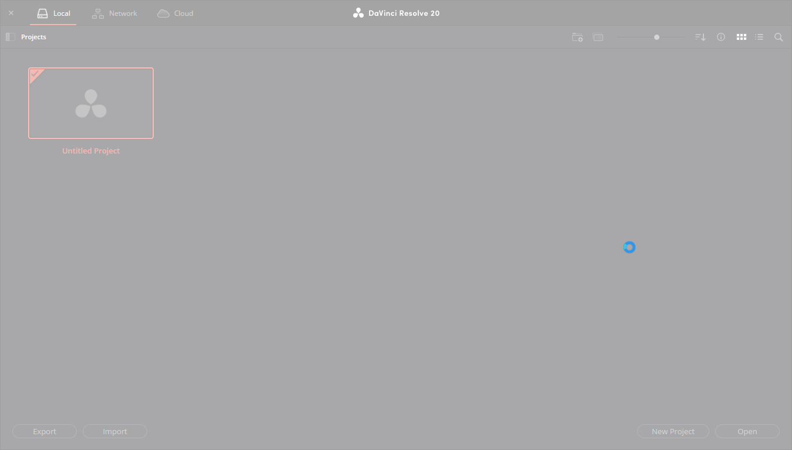
이렇게 응답없음이 된다.
찾아보니 가상데스크톱이 있으면 이렇게 된다고 한다. 그래서 가상데스크톱 하나를 지웠는데 문제가 계속 되었다.
원인은 파이썬 버전때문이었다.
다빈치리졸브 20은 파이썬 3.12까지 지원한다.
최근에 파이썬 3.13을 설치한 게 문제였던 거 .
파이썬을 지우거나 할 필요없이
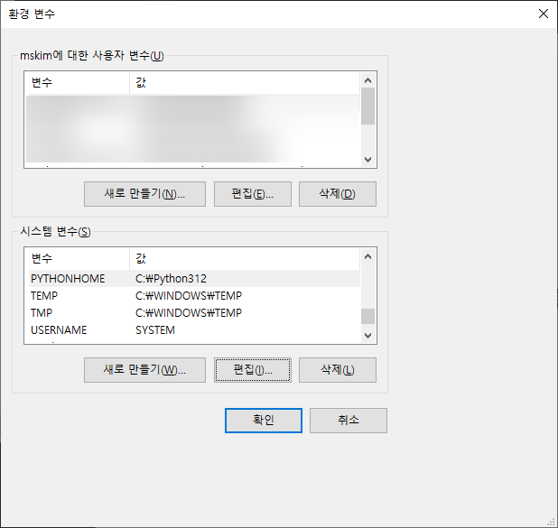
시스템 환경변수에 PYTHONHOME을 새로 추가하고 파이썬 3.12 의 위치로 설정해주면 바로 해결된다. 이런게 문제였다니.
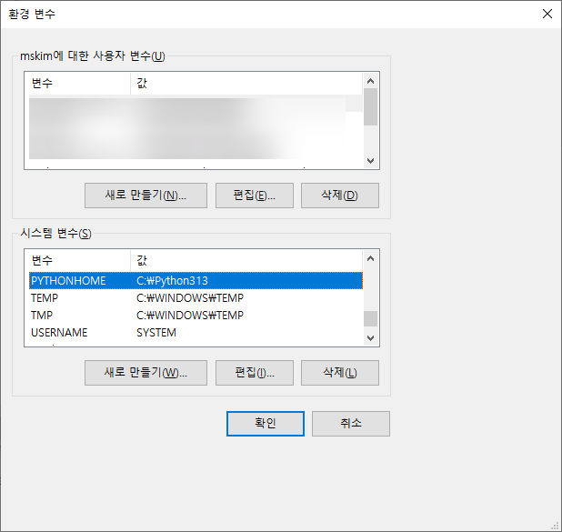
이 문제는 `PYTHONHOME의 값을 다시 파이썬 3.13버전의 위치로 설정해주면 바로 다시 나타난다.
파이썬 버전만 맞춰놓으면 가상데스크톱을 켜 놓아도 잘 된다.
inkscape
export 하면 dpi가 이상하게 설정되는 거 없애기

이렇게 하면 dpi 상관없이 파워포인트에 이미지 크기대로 이미지가 삽입된다.
inDesign
libre office에서 만든 문서를 inDesign에서 가져오기 하면 가져오기 에러가 나는 이유: libre office에서 이미지에 투명도를 설정해 줬기 때문.
어휘
나는 어휘력이, 문해력이 높은 편일까?
여기서 장사하면 안된다 여기서 장사하면 안 된다 의 차이
- 여기서 장사하면 안된다: 잘되다의 부정형. 여기서 장사하면 돈을 많이 못 번다는 뜻이다.
- 여기서 장사하면 안 된다: 경고의 뜻으로, 이 곳은 물건을 팔면 안 되는 곳으라는 뜻.
생산성
KWL 전략
KWL 전략은 책을 읽을 때 사용하는 전략이다.
- K: Know. 이 책을 읽기 전에 이미 알고 있었던 것
- W: Want to know. 이 책을 읽는 목적. 알고 싶은 것
- L: Learned. 이 책을 읽어서 알게 된 것.
이것들을 만들어 기록해 놓거나 혹은 책 첫 번째장에 포스트잇으로 만들어 붙여놓는 거다. 그럼 나중에 그 책을 열어보기만 해도 이 책을 읽은 직후의 느낌을 되살려 볼 수 있다.
DIY
승화전사 프린터
승화전사 인쇄 가능한 프린터
https://www.slrclub.com/bbs/vx2.php?id=pr&no=84963
호환 프린터 A4프린터 엡손L300,L310.L355,L365,L455,L555,L565,L655

공주
식당
명륜진사갈비 공주 신관점
1인가능. 단 2인분 요금 내야 함.